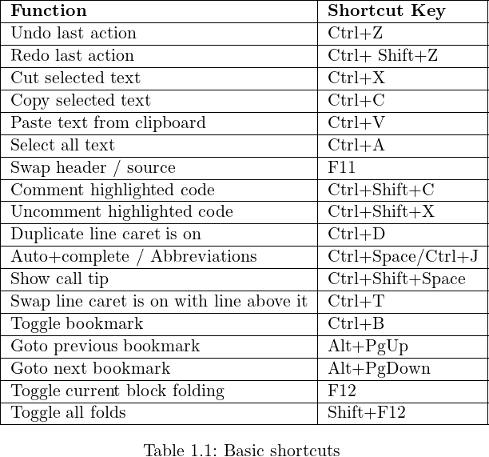
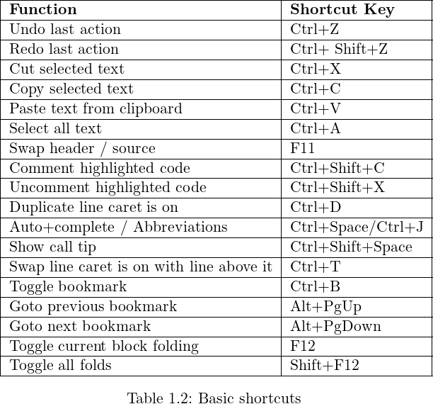
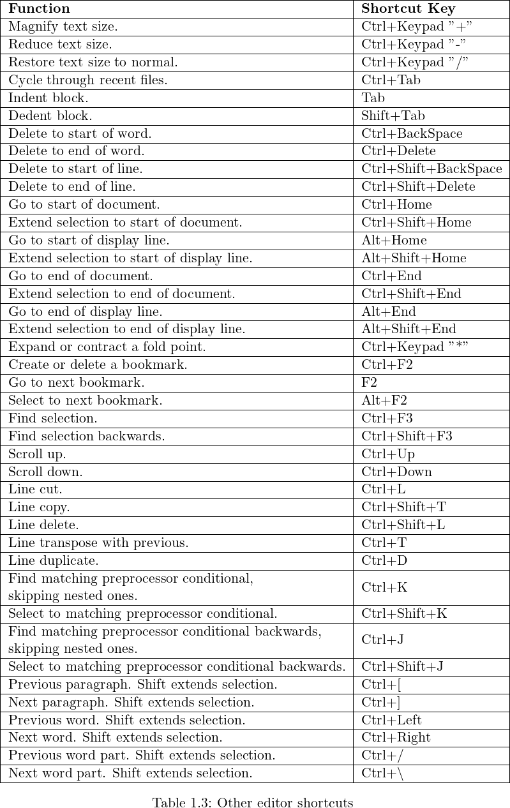
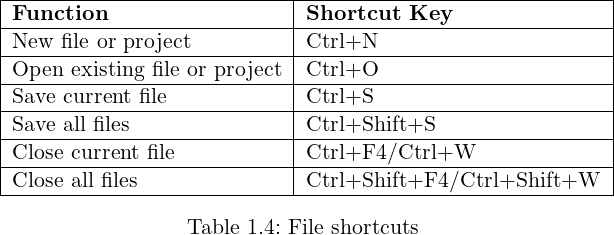
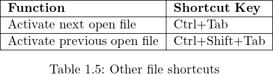
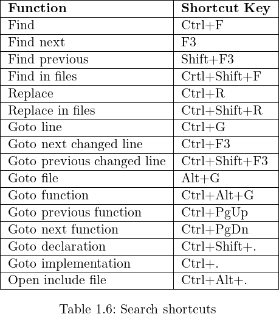
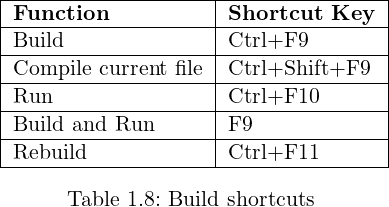
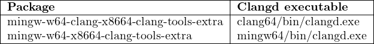
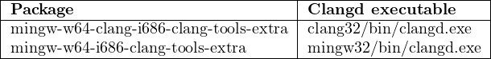
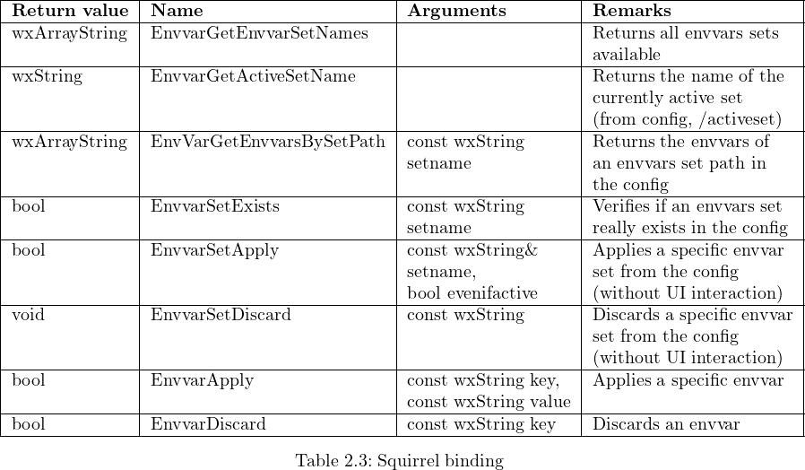

Code::Blocks
User Manual
Version 2.1.16
Thanks to the Code::Blocks team:
Anders F. Björklund (afb), Biplab Kumar Modak (biplab), Bartomiej wiecki (byo), Paul
A. Jimenez (ceniza), Koa Chong Gee (cyberkoa), Daniel Orb (daniel2000), Lieven de
Cock (killerbot), Yiannis Mandravellos (mandrav), Mispunt (mispunt), Martin Halle
(mortenmacfly), Jens Lody (jens), Jerome Antoine (dje), Damien Moore (dmoore),
Pecan Heber (pecan), Ricardo Garcia (rickg22), Thomas Denk (thomasdenk), tiwag
(tiwag), stahta01 (stahta01), Teodor Petrov (oBFusCATed), BlueHazzard
(BlueHazzard), Andrew Cottrell (AndrewCot), Miguel Gimenez (wh11204)
And many other contributors...
Original manual in English and in German (V1.x) by Mario Cupelli (mariocup)
Translation in French (v1.x), corrections and additions for version 2 by Gerard Durand
(gd_on).
Some paragraphs are directly imported from Code::Blocks WiKi. Don’t hesitate to visit
https://wiki.codeblocks.org/index.php/Main_Page, informations are perhaps more
up to date.
Permission is granted to copy, distribute and/or modify this document under the terms
of the GNU Free Documentation License, Version 1.2 or any later version published by
the Free Software Foundation.
User Manual updated in march 2025
1 Code::Blocks Project Management
The instructions in several paragraphs (for example 2 or 3) are official documentations of the
Code::Blocks Wiki site (eventually reviewed and amended) and available in english only. This
documentation is an extension of the original version 1.1, compiled and/or written by Mario
Cupelli.
The below illustration shows the design of the Code::Blocks user interface.
-
Management
-
This window contains the interface ’Projects’ which will in the following text
be referred to as the project view. This view show all the projects opened in
Code::Blocks at a certain time. The ’Symbols’ tab of the Management window shows
symbols, variables etc..
-
Editor
-
In the above illustration, a source named hello.c is opened with syntax highlighting
in the editor.
-
Open files list
-
shows a list of all files opened in the editor, in this example: hello.c.
-
CodeSnippets
-
can be displayed via the menu ’View’ →’CodeSnippets’ . Here you can manage text
modules, links to files and links to urls.
-
Logs & others
-
This window is used for outputting search results, log messages of a compiler etc...
The status bar gives an overview of the following settings:
-
Absolute path of an opened file in the editor.
-
The editor uses the default character encoding of your host operating system. This
setting will be displayed with default.
-
Row and column number of the current cursor position in the editor.
-
The configured keyboard mode for inserting text (Insert or Overwrite).
-
Current state of a file. A modified file will be marked with Modified otherwise this
entry is empty.
-
The permission of a file. A file with read only settings will display Read only in the
status bar. In the window ’Open files list’ these files will be emphasised with a lock
as icon overlay.
Note:
In the active editor the user can select the context menu properties. In
the appearing dialog in the tab ’General’ the option ’File is read-only’
can be selected. This option will result in a read-only access of the
corresponding file within Code::Blocks, but the original read and write
attributes of the file on the filesystem are not modified.
-
If you start Code::Blocks with the command line option --personality=<profile> then
the status bar will show the currently used profile, otherwise default will be shown.
The settings of Code::Blocks are stored in the corresponding configuration file
<personality>.conf.
Code::Blocks offers a very flexible and comprehensive project management. The following text
will address only some of the features of the project management.
1.1 Project View
In Code::Blocks, the sources and the settings for the build process are stored in a project file
<name>.cbp. C/C++ sources and the corresponding header files are the typical components of
a project. The easiest way to create a new project is executing the command ’File’ →’Project’
and selecting a wizard. Then you can add files to the project via the context menu ’Add files’
in the Management window.
Code::Blocks governs the project files in categories according to their file extensions. These are
the preset categories:
-
Sources
-
includes source files with the extensions *.c;*.cpp;.
-
ASM Sources
-
includes source files with the extensions *.s;*.S;*.ss;*.asm.
-
Headers
-
includes, among others, files with the extension *.h;.
-
Resources
-
includes files for layout descriptions for wxWidgets windows with the extensions
*.res;*.xrc;. These file types are shown in the ’Resources’ tab of the
Manangement window.
The settings for types and categories of files can be adjusted via the context menu ’Project
tree’ →’Edit file types & categories’ . Here you can also define custom categories for
file extensions of your own. For example, if you wish to list linker scripts with the
*.ld extension in a category called Linkerscript, you only have to create the new
category.
Note:
If you deactivate ’Project tree’ →’Categorize by file types’ in the
context menu, the category display will be switched off, and the files
will be listed as they are stored in the file system.
1.2 Notes for Projects
In Code::Blocks, so-called notes can be stored for a project. These notes should contain short
descriptions or hints for the corresponding project. By displaying this information during the
opening of a project, other users are provided with a quick survey of the project. The
display of notes can be switched on or off in the Notes tab of the Properties of a
project.
1.3 Project Templates
Code::Blocks is supplied with a variety of project templates which are displayed when creating a
new project. However, it is also possible to store custom templates for collecting your own
specifications for compiler switches, the optimisation to be used, machine-specific
switches etc. in templates. These templates will be stored in the Documents and
Settings\<user>\Application Data\codeblocks\UserTemplates directory in Windows 7,
\Users\<user>\AppData\Roaming\CodeBlocks\UserTemplates in Windows 10 or 11
(or an equivalent path to the user profile, adapted to each OS): <user> is your
user name. If the templates are to be open to all users, they have to be copied to a
corresponding directory of the Code::Blocks installation. These templates will then be
displayed at the next startup of Code::Blocks under ’New’ →’ Project’ →’User templates’
.
Note:
The available templates in the Project Wizard can be edited by
selection via right-click.
1.4 Create Projects from Build Targets
In projects it is necessary to have different variants of the project available. Variants are called
Build Targets. They differ with respect to their compiler options, debug information and/or
choice of files. A Build Target can also be outsourced to a separate project. To do so, click
’Project’ →’Properties’ , select the variant from the tab ’Build Targets’ and click the ’Create
project from target’ button (see Figure 1.2).
1.5 Virtual Targets
Projects can be further structured in Code::Blocks by so-called Virtual Targets. A frequently
used project structure consists of two Build Targets, one ’Debug’ Target which contains debug
information and one ’Release’ Target without this information. By adding Virtual
Targets via ’Project’ →’Properties’ →’Build Targets’ individual Build Targets can be
combined. For example, a Virtual Target ’All’ can create the Targets Debug and Release
simultaneously. Virtual Targets are shown in the symbol bar of the compiler under Build
Targets.
1.6 Pre- and Postbuild steps
Code::Blocks makes it possible to perform additional operations before or after compiling a
project. These operations are called Prebuilt or Postbuilt Steps. Typical Postbuilt Steps
are:
-
Creating an Intel Hexformat from a finished object
-
Manipulating objects by objcopy
-
Generating dump files by objdump
Example
Creating a Disassembly from an object under Windows. Piping to a file requires calling cmd
with the /c option.
cmd /c objdump -D name.elf > name.dis
Archiving a project can be another example for a Postbuilt Step. For this purpose,
create a Build Target ’Archive’ and include the following instruction in the Postbuilt
Step:
zip -j9 $(PROJECT_NAME)_$(TODAY).zip src h obj $(PROJECT_NAME).cbp
With this command, the active project and its sources, header and objects will be packed as a
zip file. In doing so, the Built-in variables $(PROJECT_NAME) and $(TODAY), the project name and
the current date will be extracted (see section 3.2). After the execution of the Target ’Archive’,
the packed file will be stored in the project directory.
In the share/codeblocks/scripts directory you will find some examples for scripts. You can
add a script via menu ’Settings’ →’Scripting’ and register in a menu. If you execute e.g. the
script make_dist from the menu then all files belonging to a project will be compressed in an
archive <project>.tar.gz.
1.7 Adding Scripts in Build Targets
Code::Blocks offers the possibility of using menu actions in scripts. The script represents
another degree of freedom for controlling the generation of your project.
Note:
A script can also be included at a Build Target.
1.8 Workspace and Project Dependencies
In Code::Blocks, multiple projects can be open. By saving open projects via ’File’ →’Save
workspace’ you can collect them in a single workspace under <name>.workspace. If you open
<name>.workspace during the next startup of von Code::Blocks, all projects will show up
again.
Complex software systems consist of components which are managed in different Code::Blocks
projects. Furthermore, with the generation of such software systems, there are often
dependencies between these projects.
Example
A project A contains fundamental functions which are made available to other projects in the
form of a library. Now, if the sources of this project are modified, then the library has to be
rebuilt. To maintain consistency between a project B which uses the functions and project A
which implements the functions, project B has to depend on project A. The necessary
information on the dependencies of projects is stored in the relevant workspace, so that each
project can be created separately. The usage of dependencies makes it also possible to control
the order in which the projects will be generated. The dependencies for projects can be set via
the selecting the menu ’Project’ →’Properties’ and then clicking the ’Project’s dependencies’
button.
1.9 Including Assembler files
In the Management window of the Project View, Assembler files are shown in the ASM Sources
category. The user can change the listing of files in categories (see section 1.1). Right-clicking
one of the listed Assembler files will open a context menu. Select ’Properties’ to open a new
window. Now select the ’Build’ tab and activate the two fields ’Compile file’ and ’Link file’.
Then select the ’Advanced’ tab and execute the following steps:
-
1.
- Set ’Compiler variable’ to CC
-
2.
- Select the compiler under ’For this compiler’
-
3.
- Select ’Use custom command to build this file’
-
4.
- In the window, enter:
$compiler $options $includes <asopts> -c $file -o $object
The Code::Blocks variables are marked by $ (see section 3.4). They are set automatically so
that you only have to replace the Assembler option <asopt> by your own settings.
1.10 Editor and Tools
This section describe tools in the éditor window.
1.10.1 Default Code
The company’s Coding Rules require source files to have a standard design. Code::Blocks makes
it possible to include a predefined content at the beginning of a file automatically when creating
new C/C++ sources and headers. This predefined content is called default code. This
setting can be selected under ’Settings’ →’Editor’ Default Code. If you create a new
file then a macro expansion of variables, e.g. defined via menu ’Settings’ →’Global
variables’ , is performed. A new file can be created via the menu ’File’ →’New’ →’File’
.
Example
/***************************************************************
* Project: $(project)
* Function:
***************************************************************
* $Author: mario $
* $Name: $
***************************************************************
*
* Copyright 2007 by company name
*
***************************************************************/
1.10.2 Abbreviation
A lot of typing can be saved in Code::Blocks by defining abbreviation. This is done by selecting
’Settings’ →’Editor’ and defining the abbreviations under the name <name>, which can then
be called by the keyboard shortcut Ctrl-J (see Figure 1.3).
Parametrisation is also possible by including variables $(NAME) in the abbreviations.
#ifndef $(Guard token)
#define $(Guard token)
#endif // $(Guard token)
When performing the abbreviation <name> in the source text and performing Ctrl-J, the
content of the variable is requested and included.
1.10.3 Personalities
Code::Blocks settings are saved as application data in a file called <user>.conf in the
codeblocks directory. This configuration file contains information such as the last opened
projects, settings for the editor, display of symbol bars etc. By default, the ’default’ personality
is set so that the configuration is stored in the file default.conf. If Code::Blocks is called from
the command line with the parameter --personality=myuser, the settings will be stored in the
file myuser.conf. If the profile does not exist already, it will automatically be created.
This procedure makes it possible to create the corresponding profiles for different
work steps. If you start Code::Blocks from the command line with the additional
parameter--personality=ask, a selection box will be displayed for all the available
profiles.
Note:
The name of the current profile/personality is displayed in the right
corner of the status bar.
1.10.4 Configuration Files
The Code::Blocks settings are stored in the default.conf profile in the codeblocks directory
of your Application Data. When using personalities (see section 1.10.3), the configuration
details will be stored in the <personality>.conf file.
The tool cb_share_conf, which can be found in the Code::Blocks installation directory, is used
for managing and storing these settings.
If you wish to define standard settings for several users of a computer, the configuration file
default.conf has to be stored in the directory \Documents and Settings\Default
User\Application Data\codeblocks in Win 7, \Users\Default\AppData\Roaming\CodeBlocks
in Windows 10 or 11, or an equivallent profile path for other OS. During the first startup,
Code::Blocks will copy the presettings from ’Default User’ to the application data of the current
users.
To create a portable version of Code::Blocks on a USB stick, proceed as follows.
Copy the Code::Blocks installation to a USB stick and store the configuration file
default.conf in this directory. The configuration will be used as a global setting. Please
take care that the file is writeable, otherwise changes of the configuration cannot be
stored.
1.10.5 Navigate and Search
In Code::Blocks there are different ways of quick navigation between files and functions. Setting
bookmarks is a typical procedure. Via the shortcut Ctrl-B a bookmark is set or deleted in the
source file. Via Alt-PgUp you can jump to the previous bookmark, and via Alt-PgDn you can
jump to the next bookmark.
If you select the workspace or a project in the workspace in the project view you will be able to
search for a file in the project. Just select ’Find file’ from the context menu, then type the
name of the file and the file will be selected. If you hit return this file will be opened in the
editor (see Figure 1.4).
In Code::Blocks you can easily navigate between header/source files like:
-
1.
- Set cursor at the location where a header file is included and open this file via the
context menu ’open include file’ (see Figure 1.5)
-
2.
- Swap between header and source via the context menu ’Swap header/source’
-
3.
- Select e.g. a define in the editor and choose ’Find declaration’ from the context
menu to open the file with its declaration.
Code::Blocks offeres several ways of searching within a file or directory. The dialog box for
searching is opened via ’Search’ →’Find’ (Ctrl-F) or ’Find in Files’ (Ctrl-Shift-F).
Alt-G and Ctrl-Alt-G are another useful functions. The dialog which will open on using this
shortcut, lets you select files/functions and then jumps to the implementation of the selected
function (see Figure 1.6) or opens the selected file in the editor. You may use wildcards like * or
? etc. for an incremental search in the dialog.
Note:
With the Ctrl-PgUp shortcut you can jump to the previous function,
and via Ctrl-PgDn you can jump to the next function.
In the editor, you can open a new Open Files dialog via Ctrl-Tab and you can switch between
the listed entries. If the Ctrl-key is pressed, then a file can be selected in different
ways:
-
1.
- If you select an entry with the left mouse button, then the selected file will be
opened.
-
2.
- If you press the Tab-key you will switch between the listed entries. Releasing the
Crtl-key will open the selected file.
-
3.
- If you move the mouse over the listed entries, then the current selection will be
highlighted. Releasing the Crtl-key will open the selected file.
-
4.
- If the mouse pointer is outside the highlighted selection, then you can use the
mouse-wheel to switch between the entries. Releasing the Crtl-key will open the
selected file.
A common procedure when developing software is to struggle with a set of functions which are
implemented in different files. The Browse Tracker plugin will help you solve this problem by
showing you the order in which the files were selected. You can then comfortably navigate the
function calls (see section 2.4).
The display of line numbers in Code::Blocks can be activated via ’Settings’ →’General Settings’
in the field ’Show line numbers’. The shortcut Ctrl-G or the menu command ’Search’ →’Goto
line’ will help you jump to the desired line.
Note:
If you hold the Ctrl key and then select text in the Code::Blocks editor
you can perform e.g. a Google search via the context menu.
1.10.6 Symbol view
The Code::Blocks Management window offers a tree view for symbols of C/C++ sources for
navigating via functions or variables. As the scope of this view, you can set the current file or
project, or the whole workspace.
Note:
Entering a search term or symbol names in the ’Search’ input mask
of the Symbol Browser results in a filtered view of the symbols if any
hits occurred.
The following categories exist for the symbols:
-
Global functions
-
Lists the implementation of global functions.
-
Global typedefs
-
Lists the use of typedef definitions.
-
Global variables
-
Displays the symbols of global variables.
-
Preprocessor symbols
-
Lists the pre-processor directives created by #define.
-
Global macros
-
Lists macros of pre-processor directives.
Structures and classes are displayed in the ’bottom tree’ and the sort sequence can be modified
via the context menu. If a category is selected by mouse-click, the found symbols will be
displayed in the lower part of the window (see Figure 1.7). Double-clicking the symbol will
open the file in which the symbol is defined or the function implemented, and jumps
to the corresponding line. An auto-refresh of the symbol browser without saving a
file, can be activated via the menu ’Settings’ →’Editor’ →’Code Completion’ (see
Figure 1.8). For projects with many symbols the performance within Code::Blocks will be
affected.
Note:
In the editor, a list of the classes can be displayed via the context
menus ’Insert Class method declaration implementation’ or ’All class
methods without implementation’ .
1.10.7 Including external help files
Code::Blocks comes with just its own help file: normally, developers need much more help and
reference for language, libraries, protocols, file formats and so on. The help plugin makes
all the needed documentation available from within Code::Blocks itself. Virtually
any document can be integrated in the Code::Blocks help system, since the help
plugin has the ability to launch external programs, if necessary, to view the added
documents.
Once added a new help file or document, there will be a new entry in the ”Help” menu to open
it.
The Code::Blocks development environment supports the inclusion of external help files via the
menu ’Settings’ →’Environment’ . Include the manual of your choice in the chm format in ’Help
Files’ select ’this is the default help file’ (see Figure 1.9). The entry $(keyword) is a placeholder
for a select item in your editor. Now you can select a function in an opened source file in
Code::Blocks by mouse-click, and the corresponding documentation will appear while pressing
F1.
If you have included multiple help files, you can select a term in the editor and choose a help file
from the context menu ’Locate in’ for Code::Blocks to search in.
In Code::Blocks you can add even support for man pages. Just add a entry ’man’ and specify
the path as follows.
man:/usr/share/man
On Linux, man pages are usually installed anyway, for Windows you might want to download
them e.g. from here: https://www.win.tue.nl/~aeb/linux/man
Helpfile options
-
You can tell Code::Blocks to use a file as the default helpfile, checking the ”This
is the default help file” box. This way, that file will be shown whenever you press
the ’F1’ key. Moreover, if you write the $(keyword) as default keyword (see below),
this file will be searched for keywords (taking the word selected or the word below
the cursor in the current surce file) and will be opened showing the corresponding
topic, if present.
-
You can tell Code::Blocks to open the helpfile on a topic of your choice, writing the
correspondent keyword in the ”Default keyword value” textbox. If the helpfile is the
default helpfile and you use $(keyword) as default keyword, the editor will use the
word under the cursor (or currently selected) in the current opened file as keyword,
opening the default help file at the relevant topic. This will be true, however, only
for the default helpfile: any other helpfile or document will not be searched this
way. For example, if you have the language reference as default helpfile and add the
standard library helpfile, you will have the language keyword explained when hitting
’F1’ on them, but won’t have the library functions explained this way. Viceversa,
setting the standard library helpfile as default will give you the F1 help on them
but you will loose this feature for the language keywords.
-
If your helpfile is an HTML file, you can tell Code::Blocks to open it with the
embedded HTML viewer, checking the corresponding option.
Code::Blocks provides an ’Embedded HTML Viewer’, which can be used to display simple html
file and find keywords within this file. Just configure the path to the html file, which should be
parsed and enable the checkbox ’Open this file with embedded help viewer’ via the menu
’Settings’ →’Environment’ →’Help Files’ .
Note:If you select a html file with a double-click within the file explorer
(see
section 2.11) then the embedded html viewer will be started, as
long as no association for html files is made in file extensions handler.
CHM Files
You can find c++ chm help files on the web. Just add them via the dialog.
For Linux you have to install a chm viewer to be able to open chm files. There are severals like
gnochm, kchmviewer, xchm and so on.
1.10.8 Including external tools
Including external tools is possible in Code::Blocks via ’Tools’ →’Configure Tools’ →’Add’ .
Built-in variables (see section 3.2) can also be accessed for tool parameters. Furthermore there
are several kinds of launching options for starting external applications. Depending on the
option, the externally started applications are stopped when Code::Blocks is quit. If the
applications are to remain open after quitting Code::Blocks, the option ’Launch tool visible
detached’ must be set.
1.11 Tips for working with Code::Blocks
In this chapter we will present some useful settings in Code::Blocks.
1.11.1 Tracking of Modifications
Code::Blocks provides a feature to track modifications within a source file and to show a bar in
the margin for the changes. Modifications are marked with a yellow changebar and
modifications that are already saved will use a green changebar (see Figure 1.11). You can
navigate between your changes via the menu ’Search’ →’Goto next changed line’ or ’Search’
→’Goto previous changed line’ . The same functionality is also accessible via the shortcuts
Ctrl-F3 and Ctrl-Shift-F3.
This feature can be enabled or disabled with the checkbox ’Use Changebar’ in the menu
’Settings’ →’Editor’ →’Margins and caret’ .
Note:
If a modified file is closed, then the changes history like undo/redo
and changebars get lost. Via the menu ’Edit’ →’Clear changes history’
or the corresponding context menu you are able to clear the changes
history even if the file is kept open.
1.11.2 Data Exchange with other applications
Data can be exchanged between Code::Blocks and other applications. For this interprocess
communication DDE (Dynamic Data Exchange) is used for windows and under different
operating systems it is a TCP based communication.
With this interface different commands with the following syntax can be sent to a Code::Blocks
instance.
[<command>("<parameter>")]
These commands are currently available:
-
Open
-
The command
[Open("d:\temp\test.txt")]
uses the parameter, in our case it is a file specified with an absolute path, and opens it in
an existing Code::Blocks instance or starts a first instance if required.
-
OpenLine
-
This command opens a file at a given line number in a Code::Blocks instance. The line
number is specified with :line.
[OpenLine("d:\temp\test.txt:10")]
-
Raise
-
Set the focus to the Code::Blocks instance. A parameter must not be passed.
1.11.3 Configuring environmental variables
See also ”Environment Variables Plugin” in section 2.10.
The configuration for an operating system is specified by so-called environmental variables. The
environmental variable PATH for example contains the path to an installed compiler. The
operating system will process this environmental variable from beginning to end, i.e. the entries
at the end will be searched last. If different versions of a compiler or other applications are
installed, the following situations can occur:
So it might be the case that different versions of a compilers or other tools are mandatory for
different projects. One possibility in such a case is to change the environmental variables in the
system control for every project. However, this procedure is error-prone and not flexible. For
this requirement, Code::Blocks offers an elegant solution. Different configurations of
environmental variables can be created which are used only internally in Code::Blocks.
Additionally, you can switch between these configurations. The Figure 1.12 shows the dialog
which you can open via ’Environment Varibales’ under ’Settings’ →’Environment’ . A
configuration is created via the ’Create’ button.
Access and scope of the environmental variables created here, is limited to Code::Blocks. You
can expand these environmental variables just like other Code::Blocks variables via
$(NAME).
Note:
A configuration for the environmental variable for each project can
be selected in the context menu ’Properties’ of the ’EnvVars options’
tab.
Example
You can write the used environment into a postbuild Step (see section 1.6) in a file
<project>.env and archive it within your project.
cmd /c echo \%PATH\% > project.env
or under Linux
echo \$PATH > project.env
1.11.4 Switching between perspectives
Depending on the task in hand, it can be useful to have different configurations or views in
Code::Blocks and to save these configurations/views. By default, the settings (e. g. show/hide
symbol bars, layout, etc.) are stored in the default.conf configuration file. By using the
command line option --personality=ask during the start of Code::Blocks, different settings
can be selected. Apart from this global setting, a situation might occur where you wish to
switch between different views of windows and symbol bars during a session. Editing files and
debugging projects are two typical examples for such situations. Code::Blocks offers a
mechanism for storing and selecting different perspectives to prevent the user from
frequently having to open and close windows and symbol bars manually. To save a
perspective, select the menu ’View’ →’Perspectives’ →’Save current’ and enter a name
at <name>. The command ’Settings’ →’Editor’ →’Keyboard shortcuts’ →’View’
→’Perspectives’ →’<name>’ allows a keyboard shortcut to be defined for this process. This
mechanism makes it possible to switch between different views by simply using hot
keys.
Note:
Another example is editing a file in Full Screen mode without symbol
bars. You can create a perspective such as ’Full’ and assign a hot key
for this purpose.
1.11.5 Switching between projects
If several projects or files are opened at the same time, the user needs a way to switch
quickly between the projects or files. Code::Blocks has a number of shortcuts for such
situations.
-
Alt-F5
-
Activates the previous project from the project view.
-
Alt-F6
-
Activates the next project from the project view.
-
F11
-
Switches within the editor between a source file <name>.cpp and the corresponding
header file <name>.h
1.11.6 Extended settings for compilers
During the build process of a project, the compiler messages are displayed in the Messages
window in the Build Log tab. If you wish to receive detailed information, the display can be
extended. For this purpose click ’Settings’ →’Compiler and Debugger’ and select ’Other
Settings’ in the drop-down field.
Take care that the correct compiler is selected. The ’Full command line’ setting in the Compiler
Logging field outputs the complete information in the Build Log. In addition, this output can
be logged in a HTML file. For this purpose select ’Save build log to HTML file when
finished’. Furthermore, Code::Blocks offers a progress bar for the build process in
the Build Log window which can be activated via the ’Display build progress bar’
setting.
1.11.7 Zooming within the editor
Code::Blocks offers a very efficient editor. This editor allows you to change the size
in which the opened text is displayed. If you use a mouse with a wheel, you only
need to press the Ctrl key and scroll via the mouse wheel to zoom in and out of the
text.
Note:
With the shortcut Ctrl-Numepad-/ or with the menu ’Edit’ →’Special
commands’ →’Zoom’ →’Reset’ the original font size of the active file
in the editor is restored.
1.11.8 Wrap Mode
When editing text files, e. g. *.txt, within Code::Blocks, it might be useful to have the text
wrapped, meaning long lines will be displayed in several lines on the screen so that they can be
properly edited. The ’Word wrap’ function can be activated via ’Settings’ →’Editor’ →’Other
Options’ or by setting the checkbox ’Word wrap’ . The Home and End keys position the cursor
at the beginning or end of wrapped lines respectively. When setting ’Settings’ →’Editor’
→’Other Options’ and ’Home key always move to caret to first column’ , the cursor will be
positioned at the beginning or end of the current line respectively, if the Home or End keys are
pressed. If positioning the cursor at the beginning of the first line of the current paragraph is
desired, the key combination ’Alt-Home’ is to be used. The same applies analogously
for ’Alt-End’ for positioning the cursor at the end of the last line of the current
paragraph.
1.11.9 Select modes in editor
Code::Blocks supports different modes for selecting or pasting of strings.
-
1.
- With the left mouse button a text in the active editor can be selected and then
the mouse button can be released. With the mouse wheel the user can scroll to a
position. If the middle mouse button is pressed then the formerly selected text will
be inserted. This feature is available per file and can be seen a clipboard per file.
-
2.
- Pressing the ’ALT’ key will activate the so-called block-select mode and a rectangle
selection can be raised with the left mouse button. If the Alt key is released this
selection can be copied or pasted. This feature is helpful if you want to select some
columns e.g. of an array and copy and paste the content.
-
3.
- In the menu ’Settings’ →’Editor’ →’Margins and Caret’ so-called ’Virtual Spaces’
can be activated. This option enables that a selection in the block select mode can
start or end within an empty line.
-
4.
- In the menu ’Settings’ →’Editor’ →’Margins and Caret’ the ’Multiple Selection’
can be activated. While holding the Ctrl-key the user can select different lines in
the active editor via the left mouse button. The selections will be appended in the
clipboard via the shortcut Ctrl-C or Ctrl-X. Ctrl-V will insert the content at the
current cursor position. An additional option called ’Enable typing (and deleting)’
can be activated for multiple selections. This feature is useful if you want to add a
pre-processor directive like
#ifdef at different source lines or if you want to overwrite
or replace a text at several positions.
Note:
Most Linux window managers use ALT-LeftClickDrag to move a
window, so you will have to disable this window manager behavior
first for block select to work.
1.11.10 Code folding
Code::Blocks supports so called code folding. With this feature you can fold e.g. functions
within the Code::Blocks editor. A folding point is marked by minus symbol in the
left margin of the editor view. In the margin the beginning and the end of a folding
point is visible as vertical line. If you click the minus symbol with the left mouse
button the code snippet will be folded or unfolded. Via the menu ’Edit’ →’Folding’
you can select the folding. In the editor you see folded code as continous horizontal
line.
Note:
The folding style and the folding depth limit can be configured via
menu ’Settings’ →’Editor’ →’Folding’ .
Code::Blocks provides the folding feature also for preprocessor directives. To enable this feature
select ’Fold preprocessor commands’ via the menu ’Settings’ →’Editor’ in the folding
entry.
Another possibility is to set user defined folding points. The start of folding point is entered as
comment with a opening bracket and the end is market with a comment with a closing
bracket.
//{
code with user defined folding
//}
1.11.11 Auto complete
If you open a project in Code::Blocks the ’Search directories’ of your compiler and the
project, the sources and headers of your project are parsed. In addition the keywords of
the corresponding lexer file are parsed. The parse information is used for the auto
complete feature in Code::Blocks. Please check the settings for the editor if this feature is
enabled. The auto completion is accessible with the shortcut Ctrl-Space. Via the menu
’Settings’ →’Editor’ →’Syntax highlighting’ you can add user defined keywords to your
lexer.
1.11.12 Find broken files
If a file is removed from disk, but is still included in the project file <project>.cbp, then this
’broken file’ will be shown a broken symbol in the project view. You should use the menu
’Remove file from project’ instead of deleting files.
In large projects with a lot of subdirectories the search for broken files can be time consuming.
Code::Blocks offers with the plug-in ThreadSearch (see section 2.21) a simple solution for this
problem. If you enter a search expression in ThreadSearch and select the option ’Project files’
or ’Workspace files’ , then ThreadSearch will parse all files that are included in a project or
workspace. If a broken file is found ThreadSerch will issue an error with the missing
file.
1.11.13 Including libraries
In the build options of a project, you can add the used libraries via the ’Add’ button in the
’Link libraries’ entry of the ’Linker Settings’. In doing so, you can either use the
absolute path to the library or just give the name without the lib prefix and file
extension.
Example
For a library called <path>\libs\lib<name>.a, just write <name>. The linker with the
corresponding search paths will then include the libraries correctly.
Note:Another way to include libraries is documented in
section 2.15.
1.11.14 Object linking order
During compiling, objects name.o are created from the sources name.c/cpp. The linker then
binds the individual objects into an application name.exe or for the embedded systems
name.elf. In some cases, it might be desirable to predefine the order in which the objects will
be linked. In Code::Blocks, this can be achieved by assigning priorities. In the context menu
’Properties’ , you can define the priorities of a file in the Build tab. A low priority will cause the
file to be linked earlier.
1.11.15 Autosave
Code::Blocks offers ways of automatically storing projects and source files, or of creating backup
copies. This feature can be activated in the menu ’Settings’ →’Environment’ →’Autosave’ . In
doing so, ’Save to .save file’ should be specified as the method for creating the backup
copy.
1.11.16 Settings for file extensions
In Code::Blocks, you can choose between several ways of treating file extensions.
The settings dialog can be opened via ’Settings’ →’Files extension handling’ . You
can either use the applications assigned by Windows for each file extension (open it
with the associated application), or change the setting for each extensions in such
a way that either a user-defined program will start (launch an external program),
or the file will be opened in the Code::Blocks editor (open it inside Code::Blocks
editor).
Note:
If a user-defined program is assigned to a certain file extension, the
setting ’Disable Code::Blocks while the external program is running’
should be deactivated because otherwise Code::Blocks will be closed
whenever a file with this extension is opened.
1.12 Code::Blocks at the command line
IDE Code::Blocks can be executed from the command line without a graphic interface. In such
a case, there are several switches available for controlling the build process of a project. Since
Code::Blocks is thus scriptable, the creation of executables can be integrated into your own
work processes.
1.12.1 Using command line arguments
If your enter in a command line:
codeblocks /h
You will see a new window containing a list of arguments as this one:
Usage:
codeblocks [/h] [/?] [--safe-mode] [/na] [/nd] [/ni] [/ns]
[--multiple-instance] [/d] [/nc] [/v] [--prefix <str>]
[--user-data-dir <str>] [/p <str>] [--no-log] [--log-to-file]
[--debug-log-to-file] [--profile <str>] [/S] [/D]
[--rebuild] [--build] [--clean] [--target <str>]
[--no-batch-window-close] [--batch-build-notify]
[--script <str>] [--file <str>]
[--dbg-config <str>] [--dbg-attach <str>]
[filename(s)...]
Windows
-
1.
- Find the Code::Blocks shortcut in the Desktop or Start menu.
-
2.
- Right click on the icon and select Properties.
-
3.
- Select the Shortcut tab.
-
4.
- Append the command line arguments you want to use to the end of the Target text
(behind the quote mark).
-
5.
- Run Code::Blocks by using the shortcut you edited.
Example:
codeblocks /na /nd --no-splash-screen --build <name>.cbp --target=’Release’
*nix
-
1.
- Launch a terminal client, such as XTerm, Gnome Terminal or Konsole.
-
2.
- Type ”codeblocks” and then append the command line arguments you want to use.
Note: Code::Blocks can not run on a real console, X11 must be running and you must use a
graphical terminal emulator.
Example:
codeblocks --no-splash-screen --debug-log
1.12.2 Command line arguments

1.13 Shortcuts
This section describes the shortcuts which are or can be used in Code::Blocks.
1.13.1 Introduction
This plugin can be used to bind one or more key shortcuts to the menu items.
Even if an IDE such as Code::Blocks is mainly handled by mouse, keyboard shortcuts are
nevertheless a very helpful way of speeding up and simplifying work processes. In the below
table, we have collected some of the available keyboard shortcuts.
1.13.2 Features
-
-
Includes a configuation panel and a complete system to view/remove/add/edit
command shortcuts.
-
-
Supports multiple key profiles and a complete load/save system is present.
-
-
Allows the users to customize any menu command they want, and define multiple
key-shortcut to each command.
1.13.3 Usage
The configuration page for the plugin can be accessed through the ’Settings’ →’Editor’ menu,
and then selecting the Keyboard Shortcuts section.
Selecting a command, from the Commands tree, shows the current shortcuts for that command
on the right. In the picture Open... is selected and the default shortcut Ctrl-O is
displayed.
To add a new shortcut, for the selected command, follow these steps:
-
1.
- Place the focus on the text box under New Shortcut and press the keys, for example
F3 or Ctrl-A.
-
2.
- Check Currently assigned to, if another command already has that shortcut you will
see it’s name there. If the text says None it’s safe.
-
3.
- Press Add to add the shortcut on the list.
-
4.
- Press OK on the dialog to save changes and return to editor.
1.13.4 Editor

This is a list of shortcuts provided by the Code::Blocks editor component. These shortcuts
cannot be rebound.

1.13.5 Files

This is a list of shortcuts provided by the Code::Blocks editor component. These shortcuts
cannot be rebound.

1.13.6 View

1.13.7 Search
1.13.8 Build

1.13.9 Debug

1.14 Automatic source paths
A User Interface for project ”globs” aka automatic source directories. The intention is to mimic
the glob feature of cmake.
This paragraph is copied from the C::B Wiki: https://wiki.codeblocks.org/index.php/Automatic_source_paths.
You can also have a look at the discussion on the forum:
https://forums.codeblocks.org/index.php/topic,25276.0.html.
1.14.1 Introduction
Automatic source paths is a feature of Code::Blocks to automatically mirror folders from the
source directory to the Code::Blocks project file. A use case is for example if a external program
creates source files that are used in Code::Blocks. With automatic source paths Code::Blocks
automatically detects changes (addition and removal of source files) in the given directory and
mirrors them to the project file.
1.14.2 User Interface
The functionality can be accessed over the ’Project’ →’Automatic source paths...’ menu
entry:
This opens the overview dialog
-
Path
-
: The base path in which files are searched for automatic import
-
Recursive
-
: Search also in sub folders
-
Wildcard
-
: Filter files according this wildcard (for example *.cpp: import only files ending
with .cpp
-
Add
-
: Add an new path
-
Delete
-
: Delete current selected path from the list
-
Edit
-
: Edit current selected path from the list
Adding or Editing a path opens the Edit path dialog
-
1.
- The path to automatically overwatch
-
2.
- Open the system path dialog to select the path to automatically overwatch
-
3.
- Open the global variables dialog to select a global variable that is replaced and
overwatched by Code::Blocks
-
4.
- If this is checked all sub folder of this path are also overwatched
-
5.
- A list of wildcards separated by ’;’ for file extension that are imported for this glob
(ex. *.h to import only header files, *.cpp;*.h to import cpp and h files
-
6.
- Select targets where the files found in Path are added
-
7.
- Checkbox to select all/none targets
-
8.
- When this box is checked files will be added to the project file. The project file
will be modified every time a file is found. This allows to change properties of the
file (like target, or linker flags). The properties are saved in the project file and
reloaded when the project is reloaded. If this box is left unchecked the files are loaded
when Code::Blocks is running, but not saved to project file. With this unchecked
file properties can not be saved and will be lost.
1.14.3 Example
In this example we use the following folder structure:
Lets assume that files in src are added/removed automatically by a third party software.
Adding now an automatic source folder in Code::Blocks will automatically add/remove files if
they are changed on the file system.
2 Plugins
Most of the plugins described ib this chapter are also in the Wiki. Texts and figures have
been copied from the Wiki but adapted to be included in Latex documents (Miktex
2.9).
2.1 General
Code::Blocks’ features can be extend by using plugins. There are generally three types of
plugins:
-
Core plugins:
-
developed and maintained by the core C::B team.
-
Contrib plugins:
-
developed and maintained by the community and proven to be very valuable. So
they are integrated into the C::B SVN.
-
3rd party plugins:
-
developed and maintained by the community but not (yet?) in the C::B repository.
Theses plugins often have their own repository or are being posted (including the
source code) in the forums.
If you are looking for plugins:
-
1.
- Look in the official release. Notice that the installer / package manager might require
you to enable some of the plugins specifically. So READ carefully.
-
2.
- Search the forums for announcements, especially the forums at
https://forums.codeblocks.org/index.php/board,14.0.html.
-
3.
- There might be information on the Wiki concerning other plugins on this page and
here : https://wiki.codeblocks.org/index.php/Announcement_for_plugins/patches.
For Windows users, the default behavior of the current installer does not install
contrib plugins. You need to manually check the ”contrib plugin” checkbox when
asked for selected components to install. There is no way to install them manually
afterwards.
If you are developing plugins: Surely you can work with plugin as you like, but here are
some suggestions:
Announce them in the plugin development board in the forums - including the (initial)
source code.
OR
Setup your own webpage (or use a file sharing platform) and post the link to the
sources/binaries/svn access in the plugin development board in the forums.
OR
Setup a repository, probably at BerliOS or SourceForge, post the link to the
sources/binaries/svn access in the plugin development board in the forums. Notice: This is very
convenient as attachments in our forum might be deleted from time to time. So it is not safe to
post source code in the forums.
THEN
Enter the plugins description on this page.
Announce the plugin using this template on
https://wiki.codeblocks.org/index.php/Template_for_plugin_announcement
2.2 Astyle
Artistic Style is a source code indenter, source code formatter, and source code beautifier for
the C, C++, C# programming languages. It can be used to select different styles of coding
rules within Code::Blocks.
When indenting source code, we as programmers have a tendency to use both spaces and
tab characters to create the wanted indentation. Moreover, some editors by default
insert spaces instead of tabs when pressing the tab key, and other editors have the
ability to prettify lines by automatically setting up the white space before the code
on the line, possibly inserting spaces in a code that up to now used only tabs for
indentation.
Since the number of space characters shown on screen for each tab character in the source code
changes between editors, one of the standard problems programmers are facing when moving
from one editor to another is that code containing both spaces and tabs that was up to now
perfectly indented, suddenly becomes a mess to look at when changing to another editor. Even
if you as a programmer take care to ONLY use spaces or tabs, looking at other people’s source
code can still be problematic.
To address this problem, Artistic Style was created - a filter written in C++ that automatically
re-indents and re-formats C / C++ / C# source files.
Note:
When copying code, for example from the internet or a manual,
this code will automatically be adapted to the coding rules in
Code::Blocks.
2.3 AutoVersioning
An application versioning plug in that increments the version and build number of your
application every time a change has been made and stores it in version.h with easy to use
variable declarations. Also have a feature for committing changes a la SVN style, a version
scheme editor, a change log generator and more …
2.3.1 Introduction
The idea of the AutoVersioning plugin was made during the development of a pre-alpha
software that required the version info and status. Been to busy coding, without time to
maintain the version number, just decided to develop a plugin that could do the job with little
intervention as possible.
2.3.2 Features
Here is the list of features the plugin covers summarized:
-
Supports C and C++.
-
Generates and auto increment version variables.
-
Software status editor.
-
Integrated scheme editor for changing the behavior of the auto incrementation of
version values.
-
Date declarations as month, date and year.
-
Ubuntu style version.
-
Svn revision check.
-
Change log generator.
-
Works on Windows and Linux.
2.3.3 Usage
Just go to ’Project’ →’Autoversioning’ menu. A pop up window like this will appear:
When hitting yes on the ask to configure message box, the main auto versioning configuration
dialog will open, to let you configure the version info of your project.
After configuring your project for auto versioning, the settings that you entered on the
configuration dialog will be stored on the project file, and a version.h file will be
created. For now, every time that you hit the ’Project’ →’Autoversioning’ menu the
configuration dialog will popup to let you edit your project version and versioning related
settings, unless you don’t save the new changes made by the plugin to the project
file.
2.3.4 Dialog notebook tabs
Version
Values
Here you just enter the corresponding version values or let the auto versioning plugin increment
them for you (see Figure 2.3).
-
Major
-
Increments by 1 when the minor version reaches its maximum
-
Minor
-
Increments by 1 when the build number pass the barrier of build times, the value is
reset to 0 when it reach its maximum value.
-
Build Number
-
(also equivalent to Release) - Increments by 1 every time that the revision number
is incremented.
-
Revision
-
Increments randomly when the project has been modified and then compiled.
Status
Some fields to keep track of your software status with a list of predefined values for
convenience(see Figure 2.4).
-
Software Status
-
The typical example should be v1.0 Alpha
-
Abbreviation
-
Same as software status but like this: v1.0a
Scheme
Lets you edit how the plugin will increment the version values (see Figure 2.5).
-
Minor maximum
-
The maximum number that the Minor value can reach, after this value is reached
the Major is incremented by 1 and next time project is compiled the Minor is set
to 0.
-
Build Number maximum
-
When the value is reached, the next time the project is compiled is set to 0. Put a
0 for unlimited.
-
Revision maximum
-
Same as Build Number maximum. Put a 0 for unlimited
-
Revision random maximum
-
The revision increments by random numbers that you decide, if you put here 1, the
revision obviously will increment by 1.
-
Build times before incrementing Minor
-
After successful changes to code and compilation the build history will increment,
and when it reaches this value the Minor will increment.
Settings
Here you can set some settings of the auto versioning behavior (see Figure 2.6).
-
Autoincrement Major and Minor
-
Lets the plugin increments this values by you using the scheme. If not marked only
the Build Number and Revision will increment.
-
Create date declarations
-
Create entries in the version.h file with dates and ubuntu style version.
-
Do Auto Increment
-
This tells the plugin to automatically increment the changes when a modification is
made, this incrementation will occur before compilation.
-
Header language
-
Select the language output of version.h
-
Ask to increment
-
If marked, Do Auto Increment, it ask you before compilation (if changes has been
made) to increment the version values.
-
svn enabled
-
Search for the svn revision and date in the current folder and generates the correct
entries in version.h
Changes
Log
This lets you enter every change made to the project to generate a ChangesLog.txt file (see
Figure 2.7).
-
Show changes editor when incrementing version
-
Will pop up the changes log editor when incrementing the version.
-
Title Format
-
A format able title with a list of predefined values.
2.3.5 Including in your code
To use the variables generated by the plugin just #include <version.h>. An example code would
be like the following:
#include <iostream>
#include "version.h"
void main(){
std::cout<<AutoVersion::Major<<endl;
}
Output
of
version.h
The generated header file. Here is a sample content of the file on c++ mode:
#ifndef VERSION_H
#define VERSION_H
namespace AutoVersion{
//Date Version Types
static const char DATE[] = "15";
static const char MONTH[] = "09";
static const char YEAR[] = "2007";
static const double UBUNTU_VERSION_STYLE = 7.09;
//Software Status
static const char STATUS[] = "Pre-alpha";
static const char STATUS_SHORT[] = "pa";
//Standard Version Type
static const long MAJOR = 0;
static const long MINOR = 10;
static const long BUILD = 1086;
static const long REVISION = 6349;
//Miscellaneous Version Types
static const long BUILDS_COUNT = 1984;
#define RC_FILEVERSION 0,10,1086,6349
#define RC_FILEVERSION_STRING "0, 10, 1086, 6349\0"
static const char FULLVERSION_STRING[] = "0.10.1086.6349";
}
#endif //VERSION_h
On C mode is the same as C++ but without the namespace:
#ifndef VERSION_H
#define VERSION_H
//Date Version Types
static const char DATE[] = "15";
static const char MONTH[] = "09";
static const char YEAR[] = "2007";
static const double UBUNTU_VERSION_STYLE = 7.09;
//Software Status
static const char STATUS[] = "Pre-alpha";
static const char STATUS_SHORT[] = "pa";
//Standard Version Type
static const long MAJOR = 0;
static const long MINOR = 10;
static const long BUILD = 1086;
static const long REVISION = 6349;
//Miscellaneous Version Types
static const long BUILDS_COUNT = 1984;
#define RC_FILEVERSION 0,10,1086,6349
#define RC_FILEVERSION_STRING "0, 10, 1086, 6349\0"
static const char FULLVERSION_STRING[] = "0.10.1086.6349";
#endif //VERSION_h
2.3.6 Change log generator
This dialog is accessible from the menu ’Project’ →’Changes Log’ . Also if checked Show
changes editor when incrementing version on the changes log settings, the window will open to
let you enter the list of changes after a modification to the project sources or an incrementation
event (see Figure 2.8).
Buttons
Summary
-
Add
-
Appends a row in to the data grid
-
Edit
-
Enables the modification of the selected cell
-
Delete
-
Removes the current row from the data grid
-
Save
-
Stores into a temporary file (changes.tmp) the actual data for later processing into
the changes log file
-
Write
-
Process the data grid data to the changes log file
-
Cancel
-
Just closes the dialog without taking any action
Here is an example of the output generated by the plugin to the ChangesLog.txt
file:
03 September 2007
released version 0.7.34 of AutoVersioning-Linux
Change log:
-Fixed: pointer declaration
-Bug: blah blah
02 September 2007
released version 0.7.32 of AutoVersioning-Linux
Change log:
-Documented some areas of the code
-Reorganized the code for readability
01 September 2007
released version 0.7.30 of AutoVersioning-Linux
Change log:
-Edited the change log window
-If the change log windows is leave blank no changes.txt is modified
2.4 Browse Tracker
Browse Tracker is a plug-in that helps navigating between recently opened files in
Code::Blocks.
The list of recent files is saved in a history. With the menu ’View’ →’Browse Tracker’ →’Clear
All’ the history is cleared.
With the window ’Browsed Tabs’ you can navigate between the items of the recently opened
files using the menu entry ’View’ →’Browse Tracker’ →’Backward Ed/Forward Ed’ or the
shortcut Alt-Left/Alt-Right. The Browse Tracker menu is also accessible as context menu.
The markers are saved in the layout file <projectName>.bmarks
A common procedure when developing software is to struggle with a set of functions which are
implemented in different files. The BrowseTracks plug-in will help you solve this problem by
showing you the order in which the files were selected. You can then comfortably navigate the
function calls.
The plug-in allows even browse markers within each file in the Code::Blocks editor. The cursor
position is memorized for every file. You can set this markers using the menu item ’View’ →’
Browse Tracker’ →’ Set BrowseMarks’ or with selecting a line with the left mouse button. A
marker with … is shown in the left margin. With the menu ’View’ →’Browse Tracker’ →’Prev
Mark/Next Mark’ or the shortcut Alt-up/Alt-down you can navigate through the
markers within a file. If you want to navigate in a file between markers sorted by line
numbers then just select the menu ’View’ →’Browse Tracker’ →’Sort BrowseMark’
.
With the ’Clear BrowseMark’ the marker in a selected line is removed. If a marker is set for a
line, holding left-mouse button down for 1/4 second while pressing the Ctrl key will delete the
marker for this line. Via the menu ’Clear All BrowseMarks’ or with a Ctrl-left click on any
unmarked line will reset the markers within a file.
The settings of the plug-in can be configured via the menu ’Settings’ →’Editor’ →’Browse
Tracker’ .
-
Mark Style
-
Browse Marks are displayed per default as … within the margin. With the setting
’Book_Marks’ they will be displayed like Bookmarks as blue arrow in the margin.
With hide the display of Browse Marks is suppressed. Note : These options have
been deleted recently from the plugin but are still present in older Code::Blocks
versions. Only the blue arrow is still there.
-
Toggle Browse Mark key
-
Markers can be set or removed either by a click with the left mouse button or with
a click while holding the Ctrl key.
-
Toggle Delay
-
The duration of holding the left mouse button to enter the Browse Marker mode.
-
Clear All BrowseMarks
-
while holding Ctrl key either by a simple or a double click with the left mouse
button.
The configuration of the plug-in is stored in your application data directory in the file
default.conf. If you use the personality feature of Code::Blocks the configuration is read from
the file <personality>.conf.
2.5 CodeSnippets
The CodeSnippets plug-in makes it possible to structure text modules and links to files
according to categories in a tree view. The modules are used for storing often used files and
constructs in text modules and managing them in a central place. Imagine the following
situation: A number of frequently used source files are stored in different directories of the file
system. The CodeSnippets window provides the opportunity to create categories, and below
the categories, links to the required files. With these features, you can control the
access to the files independently from where they are stored within the file system,
and you can navigate quickly between the files without the need to search the whole
system.
Note:
You can use Code::Blocks variables or environment variables in
file links e.g. $(VARNAME)/name.pdf to parametrise a link in the
CodeSnippets browser.
The list of text modules and links can be stored in the CodeSnippets window by right-clicking
and selecting ’Save Index’ from the context menu. The file codesnippets.xml which will
be created by this procedure, can then be found in the codeblocks subdirectory
of your Documents and Settings\Application data directory in Win 7 (or an
equivalent path in the user profile, adapted to each OS). Under Linux, this information is
stored in the .codeblocks subdirectory of your HOME directory. The Code::Blocks
configuration files will be loaded during the next start-up. If you wish to save the
content of CodeSnippets at a different location, select the ’Save Index As’ entry.
To load this file, select ’Load Index File’ during the next start-up of Code::Blocks
or include the directory in the ’Settings’ context menu under ’Snippet Folder’. The
settings are saved in the corresponding file codesnippets.ini in your application
data.
For including a category, use the ’Add SubCategory’ menu. A category can contain Snippets
(text modules) or File Links. A text module is created via the ’Add Snippet’ command in the
context menu. The content is integrated into the text module as ’New snippet’ by selecting the
text passage in the Code::Blocks editor and dragging and dropping it onto the module and the
properties dialog pops up. Double-clicking the newly included entry or selecting ’Edit Text’ will
open an editor for the content.
Output of a text module is handled in Code::Blocks via the context menu command ’Apply’ or
by dragging and dropping into the editor. Under Windows, the contents of a Snippet can also
be dragged and dropped into other applications. In the CodeSnippets Browser you can copy a
selected item with drag and drop to a different category.
Beyond this, text modules can be parametrised by <name> variables which can be accessed via
$(name) (see Figure 2.9). The values of the variables can be retrieved in an entry field if the
text module is called via the context menu command ’Apply’.
Besides the text modules, links to files can also be created. If, after having created a text
module, you click the context menu command ’Properties’, then you can select the link target
by clicking the ’Link target’ button. This procedure will automatically convert the text module
into a link to a file. In CodeSnippets, all text modules will be marked by a T symbol, links to a
file by an F symbol and urls by an U symbol. If you want to open a selected file (link) in the
codesnippets view just select the context menu ’Open File’ or hold the ’Alt’ key and make a
double click on the file.
Note:
You can add even url (e.g. https://www.codeblocks.org) in text
modules. The url can be opened using the context menu ’Open Url’
or using drag and drop to your favorite web browser.
With this setting, if open a link to a pdf file from the codesnippets view a pdf viewer will be
started automatically. This method makes it possible for a user to access files which are spread
over the whole network, such as cad data, layouts, documentations etc., with the common
applications, simply via the link. The content of the codesnippets is stored in the file
codesnippets.xml, the configuration is stored in the file codesnippets.ini in your
application data directory. This ini file will, for example, contain the path of the file
codesnippets.xml.
Code::Blocks supports the usage of different profiles. These profiles are called personalities.
Starting Code::Blocks with the command line option --personality=<profile>
will create a new or use an existing profile. Then the settings will not be stored in
the file default.conf, but in <personality>.conf in your application data
directory instead. The Codesnippets plugin will then store its settings in a specific
file named <personality>.codesnippets.ini. Now, if you load a new content
<name.xml> in the Codesnippets settings via ’Load Index File’, this content will be stored
in the corresponding ini file. The advantage of this method lies in the fact that in
case of different profiles, different configurations for text modules and links can be
managed.
The plug-in offers an additional search function for navigating between the categories and
Snippets. The scope for searching Snippets, categories or Snippets and categories can
be adjusted. By entering the required search expression, the corresponding entry is
automatically selected in the view. Figure 2.10 shows a typical display in the CodeSnippets
window.
Note:
When using voluminous text modules, the content of these modules
should be saved in files via ’Convert to File Link’ in order to reduce
memory usage within the system. If you delete a codesnippet or file
link it will be moved to the category .trash; if you hold the Shift key
the item will be deleted.
2.6 Code Completion in Code::Blocks
Two plugins which provide code completion functionality and class browser. They are not
compatible with each other. Only one of both can be activated.
Note:
Extracted from Wikipedia: Intelligent code completion is a
context-aware code completion feature in some programming
environments that speeds up the process of coding applications
by reducing typos and other common mistakes. Attempts at this
are usually done through auto-completion popups while typing,
querying parameters of functions, query hints related to syntax errors.
Intelligent code completion and related tools serve as documentation
and disambiguation for variable names, functions, and methods.
2.6.1 Code Completion plugin
CodeCompletion provides a symbols browser for your projects and code-completion
inside the editor. During code-completion, a system of symbols is used to identify the
type associated with the suggested tokens; these symbols are defined in the following
table.
Note: This is the user document of Code Completion plugin. Only C/C++ language is
supported by this plugin (currently)...
2.6.2 CB Clangd Client
This plugin provides code completion functionality and class browser by Clangd through LSP
(Language Server Protocol).
The home page of this plugin is: https://sourceforge.net/projects/cb-clangd-client/
The main developer is Pecan.
The related forum discussion is: Code completion using LSP and clangd
(https://forums.codeblocks.org/index.php/topic,24357.msg166136.html)
This documentation is extracted from the wiki: https://wiki.codeblocks.org/index.php/CB_Clangd_Client
2.6.2.1 What is Clangd
clangd understands your C++ code and adds smart features to your editor:
-
code completion
-
compile errors
-
go-to-definition
-
go-to-implementation
-
find references
and more.
clangd is a language server that can work with your editor via a plugin.
Code::Blocks provides Clangd_client as the needed plugin.
Clangd_client additionally enhances the clangd server by providing:
NOTE: A Code::Blocks project is required for Clangd_client.
Clangd_client does not work with non-project translation units.
A project provides the necessary resources to interface between the Editor and the Clangd
server.
2.6.2.2 Configuring clangd_client
Clangd_client requires the third-party binary clangd executable.
See Windows: Compiler Clangd/LLVM Package Installer below (2.6.2.5) to install it, or
Linux: Clangd executable install process (see 2.6.2.6)
After a successful clangd executable install, perform the following:
-
Disable the ”CodeCompletion” plugin.
-
Navigate to ’Plugins’ →’ Manage Plugins’ and disable CodeCompletion.
-
Navigate to ’Plugins’ →’ Manage Plugins’ and enable Clangd_client.
Restart Code::Blocks.
Tell (or verify) Code::Blocks where the clangd executable resides:
Navigate to ’Setting’ →’ Editor’ →’ Clangd_client’ →’ C/C++ parser(tab)’ and verify
the location of the clangd executable in the box labeled ”Specify clangd executable to
use”.
2.6.2.3 Installing Clangd_client from source or pre-built binary
Note:Clangd_client is now included as a contrib plugin within the ”Nightly”
builds. Using a ”Nightly” build is the easiest way to update to
clangd_client. Simply install the ”Nightly” and configure as specified
below.
See the Nightly builds at
https://forums.codeblocks.org/index.php/board,20.0.html
-
1.
- Install the LLVM or Clangd.exe as documented in the section below entitled:
Windows Clangd executable install process (see section 2.6.2.5)
-
2.
- Disable the Code completion plugin as follows:
-
a)
- Open the Plugin manager via Code::Blocks menu
’MainMenu’ →’ Plugins’ →’ Manage plugins...’
-
b)
- In the Manage Plugin dialog do the following:
-
i.
- Find and select the ”Code completion” plugin via it’s title
-
ii.
- Press the ”Disable” button on the right near the top
-
iii.
- If you get any errors please try again.
-
3.
- Install the Clangd-Client Plugin using one of the following options, which are documented
below:
-
a)
- Install via the Plugin Manager
-
b)
- Manually install the plugin files
-
4.
- Configure the Clangd-Client Plugin for use as follows:
-
a)
- Select the Code::Blocks menu item ’Settings’ →’ Editor...’
-
b)
- In the list on the left click/select the ”clangd_client” option.
-
c)
- In the ”C/C++ parser” tab change the ”Specify clangd executable to use” to
reference the clangd.exe you installed via step 1) above.
Some examples of this could be:
C:\msys64\clang64\bin\clangd.exe
C:\msys64\clang32\bin\clangd.exe
C:\LLVM\bin\clangd.exe
C:\compilers\clang\clangd.exe
2.6.2.4 Manually Remove Clangd-Client Plugin
-
1.
- Exit Code::Blocks!
-
2.
- If you manually installed the files or used the Plugin manager then you can do the
following:
-
a)
- In the Code::Blocks ...\share\CodeBlocks folder delete the
clangd_client.zip file
-
b)
- In the Code::Blocks ...\share\CodeBlocks\plugins folder delete the
clangd_client.dll file
-
3.
- If you installed via the Plugin manager then you can delete the files with the following
commands:
-
a)
- del
%APPDATA%\CodeBlocks\share\codeblocks\plugins\clangd_client.dll
-
b)
- del %APPDATA%\CodeBlocks\share\codeblocks\clangd_client.zip
-
4.
- If you want to reuse older code completion remember to re-enable the plugin
2.6.2.5 Windows: Clangd executable install process
There are three main options to install the clangd.exe:
-
1.
- Install the LLVM compiler.
-
2.
- Manully extract the required files from the LLVM compiler.
-
3.
- Install the Clangd package for the Windows compiler you are using if it is available.
The process for the three options above are detailed below.
Windows: Install the LLVM compiler
-
1.
- Download the latest (non RC/Beta) LLVM Windows executable for your OS (Win32
or Win64) from the following Github LLVM download page:
https://github.com/llvm/llvm-project/releases
As of Jan 2022 the Windows files are names as follows:
LLVM-<version>-win64.exe
LLVM-<version>-win32.exe
where <version> is the LLVM version, like 13.0.0 or 13.0.1.
-
2.
- Run the LLVM-<version>-win<xx>.exe you downloaded to install the LLVM
compiler.
Windows: Manually Extract File from LLVM compiler
-
1.
- Download the latest (non RC/Beta) LLVM Windows executable for your OS (Win32
or Win64) from the following Github LLVM download page:
https://github.com/llvm/llvm-project/releases
As of Jan 2022 the Windows files are names as follows:
LLVM-<version>-win64.exe
LLVM-<version>-win32.exe
where <version> is the LLVM version, like 13.0.0 or 13.0.1.
-
2.
- Unzip the LLVM-<version>-win<xx>.exe file you downloaded using 7ZIP or your prefered
ZIP program into a sub-directory
-
3.
- Create a new directory to put the clangd.exe and dll’s
-
4.
- Copy the following files into a the new directory created from the unziped LLVM
directory:
bin\clangd.exe
bin\msvcp140.dll
bin\vcruntime140.dll
bin\vcruntime140\_1.dll
Windows: Compiler Clangd/LLVM Package Installer i)
Due to the number of different compilers available for Windows not all of the compilers will
have either/both the Clang or LLVM required files.
If you want to install the specific package(s) for the Windows compiler you are using in order to
use it’s clangd.exe file please follow the instructions below for the specific compiler you have
installed:
MSYS2 Compiler - MinGW64
There are two main options to install the clangd.exe as follows:
-
1.
- The first option in order to minimise disk space is to install the Clang extra tools using one of the following
packages:

To intall the package do the following:
-
a)
- Open the msys2.exe bash shell
-
b)
- Run the following command:
pacman -S <Package name in the table above>
”OR”
-
2.
- The second option is to intall the full Clang tool chain as follows:
-
a)
- Open the msys2.exe bash shell
-
b)
- Run the following command: pacman -S
mingw-w64-clang-x86_64-toolchain
MSYS2 Compiler - MinGW32
There are two main options to install the clangd.exe as follows:
-
1.
- The first option in order to minimise disk space is to install the Clang extra tools using one of the following
packages:
To intall the package do the following:
-
a)
- Open the msys2.exe bash shell
-
b)
- Run the following command:
pacman -S <Package name in the table above>
”OR”
-
2.
- The second option is to install the full Clang tool chain as follows:
-
a)
- Open the msys2.exe bash shell
-
b)
- Run the following command:
pacman -S mingw-w64-clang-i686-toolchain
_______________________________________________________________________________________
Notes from the Code::Blocks forum to avoid mixing incompatible gcc/clangd
executables.
_______________________________________________________________________________________
https://forums.codeblocks.org/index.php/topic,24357.msg169412.html#msg169412
Don’t mix mingw64 with clang64.
If you are using the gcc from msys2, (the compilers in the folder ”msys64\mingw64\bin”), you
should use ”mingw-w64-x86_64-clang-tools-extra”, (the clangd.exe is under the folder
”msys64\mingw64\bin”) the same folder as your gcc.exe.
If you are using the clang tool chain, (the folder ”msys64\clang64\bin”), you should use
”mingw-w64-clang-x86_64-clang-tools-extra”.
I found that I just make a big mistake: that is I use the gcc toolchain from ”msys64\mingw64\bin”,
but I use the clangd.exe from ”msys64\clang64\bin”. The result is I got a lot of LSP
diagnostics messages and errors.
Luckily I found the reason, and fix this issue. Hope this will help other guys.
2.6.2.6 Linux: Clangd executable install process
NOTE: Clangd_client plugin requires a clangd executable version 13 or greater.
Check your current clangd version by running clangd --version.
If the version is less than 13 you will have to install a newer version.
See https://clangd.llvm.org/installation.html
Installing the clangd package will usually give you a slightly older version.
Test this by issuing apt-get install --dry-run clangd
As of 2022/11/16, this suggest that clangd version 10 will be installed.
If the clangd version shows less than version 13, you’ll have to install a specific version as
follows:
Install a packaged release (must be version 13 or greater):
sudo apt-get install clangd-13 (Must be version 13 or greater).
This will install clangd as /usr/bin/clangd-13.
You can now configure clangd_client plugin by following the above instructions at Configuring
clangd_client (see section 2.6.2.2
If you prefer to install the entire LLVM/Clang package, for convenience, there is an automatic
installation script available that installs LLVM for you.
To install the latest stable version: see https://apt.llvm.org/, Automatic installation
script. Note that you can specify the version number with this script.
2.7 CScope
This paragraph is extracted from the cscope plugin in the wiki.
2.7.1 General information
This plugin integrates the source code searching features of Cscope into Code::Blocks (a
Windows build is available at Cscope-win32). Cscope is especially useful on large projects, and
can search for:
-
all references to a symbol
-
global definitions
-
functions called by a function
-
functions calling a function
-
text string
-
regular expression pattern
-
a file
-
files including a file
Although the parser within Cscope is targeted at C, it retains enough flexibility to provide
functionality with C++ (and Java) code.
2.7.2 Installing CScope
These instructions are for Code::Blocks SVN Version >11828.
2.7.2.1 Linux
Under Linux installing cscope should be as easy as calling your favorite package manager and
installing cscope. Code::Blocks should find the executable by default. If it can not find
the cscope executable please set it in ’Settings’ →’Environment’ →’CScope’ . You
can find the path to the cscope executable by typing locate cscope in your favorite
terminal.
2.7.2.2 Windows
It is hard to find a precompiled binary for cscope on windows. The easiest solution is to install
msys2. Follow the instruction on the website [ MSys2] to install msys2. After installing and
updating as described open the msys terminal and type pacman -S cscope. This will install cscope
from the global package repository.
Now you have to setup Code::Blocks:
-
Open Code::Blocks
-
’Settings’ →’Environment’ →’CScope’
-
Press the button with the ... dots
-
Search the cscope.exe executable. It is probably under
INSTALL_DIRECTORY_OF_MSYS2\usr\bin\cscope.exe
-
Close the dialog with OK
-
Now you should be able to use the cscope functions in Code::Blocks (for ex. ”Find
functions calling XXXX”).
2.8 Doxyblocks
DoxyBlocks is a plugin for Code::Blocks that integrates doxygen into the IDE. It allows you to
create documentation, insert comment blocks and run HTML or CHM documents. It also
provides configuration of some of the more commonly used settings and access to doxywizard
for more detailed configuration.
The settings in the DoxyBlocks toolbar have the following meanings:
-
 class="description">
class="description">
Run doxywizard. Ctrl-Alt-D
-
 class="description">
class="description">
Extract documentation for the current project. Ctrl-Alt-E
-
 class="description">
class="description">
Insert a comment block at the current line. Additionally, DoxyBlocks will try to
intelligently read if a method exists on the line for which a comment is being added.
Ctrl-Alt-B
/** \brief
*
* \param bar bool
* \return void
*
*/
void MyClass::Foo(bool bar)
{
fooBar(bar);
}
-
 class="description">
class="description">
Insert a line comment at the current cursor position. Ctrl-Alt-L
void MyClass::Foo(bool bar)
{
fooBar(bar); /**< */
}
-
 class="description">
class="description">
View generated HTML documentation. Ctrl-Alt-H
-
 class="description">
class="description">
View generated HTML Help documentation. Ctrl-Alt-C
-
 class="description">
class="description">
Open DoxyBlocks’ preferences. Ctrl-Alt-P
Doxyblocks works only if doxygen is installed on your system. You need at least the
executables doxygen and doxywizard (available in official doxygen distribution at
https://www.doxygen.nl/). Optionally you can have the executable ”dot” from the graphviz
package (see https://graphviz.gitlab.io/. On Windows, the help compiler (hhc) may be
used to generate chm files.
Notes
-
-
In the preferences you have a check box to allow or not allow DoxyBlocks to
overwrite the doxyfile. By default, if a doxyfile already exists it is not overwritten
to protect any changes that have been made outside DoxyBlocks however this
behaviour prevents changes made within DoxyBlocks being written to an existing
doxyfile.
-
-
If a text field is blank in ”Preferences”, DoxyBlocks will assume that the
corresponding executable is available somewhere in your environment’s path. You
can use macros such as $(CODEBLOCKS) in your path and they will be expanded
automatically.
-
OUTPUT_DIRECTORY
-
Used to specify the (relative or absolute) base path where the generated documentation
will be put. If a relative path is entered, it will be relative to the location where doxygen
was started. If left blank the current directory will be used. DoxyBlocks will use the path
name entered here to create a directory relative to <project dir>. This allows you to create
separate doxygen directories for projects that reside in the same directory, or just use a
different directory name. If this field is blank, documents will be created in
<project dir>/doxygen. Enter directory names without dots, leading separators, volume
names, etc. DoxyBlocks does validation on the path name and will strip extraneous
characters.
Examples:
[blank] -> <project dir>/doxygen.
"docs" -> <project dir>/docs.
"docs/sub1/sub2" -> <project dir>/docs/sub1/sub2.
"doxygen/docs" -> <project dir>/doxygen/docs.
-
OUTPUT_LANGUAGE
-
Used to specify the language in which all documentation generated by doxygen
is written. Doxygen will use this information to generate all constant output
in the proper language. The default language is English. Other languages are
supported.
-
-
More information in doxygen help files
2.9 Editor Tweaks plugin
The EditorTweaks plugin contains several different features. On a per-file basis, it
controls:
-
word-wrap;
-
line-numbers;
-
tab key emissions (tab characters or spaces);
-
number of spaces the tab key emits;
-
end of line characters (carriage-return + linefeed; carriage-return; linefeed);
-
visibility of end of line characters;
-
on-demand striping of trailing white-space;
-
on-demand synchronization of end of line characters;
-
insert key suppression.
From the merge with the Aligner plugin, it has the ability to make sections of code more
readable by aligning a specific character.
For example, aligning the ”=” in
int var = 1;
int longVarName = 2;
int foobar = 3;
will result in:
int var = 1;
int longVarName = 2;
int foobar = 3;
2.10 Environment Variables plugin
From Code::Blocks wiki. See also section 1.11.3.
Environment variables editor plugin allows for the setting of system environment variables
in the focus of Code::Blocks.
A user can have several sets that contain 1..n environment variables.
A user can switch between these sets within the environment variables configuration
dialog.
In addition the EnvVars plugin offers an option to projects (within project setup) to apply a
certain EnvVar set to activate (and use during compilation).
The dialog for editing the sets is located in ’Settings’ →’Environment’ →’Environment
variables’ .
The dialog for choosing the active set for the current project is located in ’Project’
→’Properties’ →’EnvVar options’ .
Script binding
This plugin provides its functionality through a squirrel binding:

NOTE: The value arguments are automatically expanded from macros. You do not have to call
ReplaceMacros() on them.
Many other script functions are available. Have a look to
https://wiki.codeblocks.org/index.php/Scripting_commands
Example
On windows in the post or pre build steps:
[[EnvvarApply(_("test"),_("testValue"));]]
echo %test%
2.11 FileManager and PowerShell Plugin
The File Explorer Figure 2.13 is included in the FileManager plugin, and can be found in the
’Files’ tab. The composition of the File Explorer is shown in Figure 2.13.
On top you will find a field for entering the path. By clicking the button at the end of this field,
the drop-down field will list a history of the past entries which can be navigated via a scroll bar.
The up arrow key on the right-hand side of the field moves up the directory structure one
directory.
In the ’Wildcard’ field you can enter a filter term for the file display. Leaving the field empty or
entering * results in all files being displayed. Entering *.c;*.h, for example will result in solely
C sources and header files being displayed. Opening the pull-down field will, again, list a history
of the last entries.
Pressing the Shift key and clicking selects a group of files or directories, pressing the Ctrl key
and clicking selects multiple separate files or directories.
The following operations can be started via the context menu if one or multiple directories are
selected in the File Explorer:
-
Make Root
-
defines the current directory as the root directory.
-
Add to Favorites
-
sets a marker for the directory and stores it as a favourite. This function allows you
to navigate quickly between frequently used directories, also on different network
drives.
-
New File
-
creates a new file in the selected directory.
-
New Directory
-
creates a new subdirectory in the selected directory.
The following operations can be started via the context menu if one or multiple files or
directories are selected in the File Explorer:
-
Duplicate
-
copies a file/directory and renames it.
-
Copy To
-
opens a dialog for entering the target directory in which the copied file/directory is
to be stored.
-
Move To
-
moves the selection to the target location.
-
Delete
-
deletes the selected files/directories.
-
Show Hidden Files
-
activates/deactivates the display of hidden system files. When activated, this menu
entry is checkmarked.
-
Refresh
-
update the display of the directory tree.
The following operations can be started via the context menu if one or multiple files are selected
in the File Explorer:
-
Open in CB Editor
-
opens the selected file in the Code::Blocks editor.
-
Rename
-
renames the selected file.
-
Add to active project
-
adds the file(s) to the active project.
Note:
The files/directories selected in the File Explorer can be accessed in
the PowerShell plugin via the mpaths variable.
User-defined functions can be specified via the menu command ’Settings’ →’Environment’
→’PowerShell’ . In the PowerShell mask, a new function which can be named at random, is
created via the ’New’ button. In the ’ShellCommand Executable’ field, the executable program
is stated, and in the field at the bottom of the window, additional parameters can be passed to
the program. By clicking the function in the context menu or the PowerShell menu, the function
is started and will then process the selected files/directories. The output is redirected to a
separate shell window.
For example a menu entry in ’PowerShell’ →’SVN’ and in the context menu is created for
’SVN’. $file in this context means the file selected in the File Explorer, $mpath the selected files
or directories (see section 3.2).
Add;$interpreter add $mpaths;;;
This and every subsequent command will create a submenu, in this case called ’Extensions’
→’SVN’ →’Add’ . The context menu is extended accordingly. Clicking the command in the
context menu will make the SVN command add process the selected files/directories.
TortoiseSVN is a widespread SVN program with integration in the explorer. The program
TortoiseProc.exe of TortoiseSVN can be started in the command line and dispalys a dialog to
collect user input. So you can perform the commands, that are available as context menu in the
explorer also in the command line. Therefore you can integrate it also a shell extension in
Code::Blocks. For example the command
TortoiseProc.exe /command:diff /path:$file
will diff a selected file in the Code::Blocks file explorer with the SVN base. See Figure 2.14 how
to integrate this command.
Note:
For files that are under SVN control the file explorer shows overlay
icons if they are actived via menu ’View’ →’SVN Decorators’ .
Example
You can use the file explorer to diff files or directories. Follow these steps:
-
1.
- Add the name via menu ’Settings’ →’Environment’ →’PowerShell’ . This is shown
as entry in the interpreter menu and the context menu.
-
2.
- Select the absolute path of Diff executable (e.g. kdiff3). The program is accessed
with the variable
$interpreter.
-
3.
- Add parameters of the interpreter
Diff;$interpreter $mpaths;;;
This command will be executed using the selected files or directories as parameter.
The selection is accessed via the variable $mpaths. This is an easy way to diff files or
directories.
Note:
The plug-in supports the use of Code::Blocks variables within the
shell extension.
-
$interpreter
-
Call this executable.
-
$fname
-
Name of the file without extension.
-
$fext
-
Extension of the selected file.
-
$file
-
Name of the file.
-
$relfile
-
Name of the file without path info.
-
$dir
-
Name of the selected directory.
-
$reldir
-
Name of directory without path info.
-
$path
-
Absolute path.
-
$relpath
-
Relative path of file or directory.
-
$mpaths
-
List of current selected files or directories.
-
$inputstr{ msg }
-
String that is entered in a message window.
-
$parentdir
-
Parent directory (../).
Note:
The entries of shell extension are also available as context menu in
the Code::Blocks editor.
2.12 HexEditor
How a file can be opened in HexEditor within Code::Blocks.
-
1.
- ’File’ →’ Open with HexEditor’
-
2.
- Project Navigator context menu (’Open with’ →’ Hex editor’
-
3.
- Select the Tab Files in the Management Panel. By selecting a file in the FileManager
and executing the context menu ’Open With Hex editor’ this file is opened in
HexEditor.
Division of windows:
left is HexEditor view and right is the display as strings
Upper line: Current position (value in decimal/hex) and percentage (ratio of current cursor
position to whole file).
Buttons:
Search functions
Goto Button: Jump to an absolute position. Format in decimal or hex. Relative jump forward or
backward by specifying a sign.
Search: Search for hex patterns in the HexEditor view or for strings in the file preview.
Configuration of the number of columns: Exactly, Multiple of, Power of
Display mode: Hex, Binary
Bytes: Select how many bytes should be displayed per column.
Choice of Endianess: BE: Big Endian LE: Little Endian
Value Preview: Adds an additional view in HexEditor. For a selected value in HexEditor, the
value is also displayed as Word, Dword, Float, Double.
Expression Input: Allows you to perform an arithmetic operation on a value in HexEditor.
Result of the operation is displayed at the right margin.
Calc: Expression Tester
Editing a file in the HexEditor:
Includes Undo and Redo History.
For example, move the cursor to the string view: Insert spaces with the Insert key. Delete
characters by pressing the Del key.
By entering a text, the existing content is overwritten as a string.
By entering numbers in the HexEditor view the values are overwritten and the preview is
updated.
2.13 Incremental Search
For an efficient search in open files, Code::Blocks provides the so-called Incremental Search.
This search method is initiated for an open file via the menu ’Search’ →’Incremental Search’ or
by the keyboard shortcut Ctrl-I. The focus is then automatically set to the search mask of the
corresponding toolbar. As soon as you begin entering the search term, the background of
the search mask will be adjusted in accordance with the occurrence of the term. If
a hit is found in the active editor, the respective position in the text is marked in
colour. By default the current hit will be highlighted in green. This setting can be
changed via ’Settings’ →’ Editor’ →’ Incremental Search’ (see Figure 2.15). Pressing
the Return key induces the search to proceed to the next occurrence of the search
string within the file. With Shift-Return the previous occurrence can be selected.
This functionality is not supported by Scintilla if the incremental search uses regular
expressions.

If the search string cannot be found within the active file, this fact is highlighted by the
background of the search mask being displayed in red.
-
ESC
-
Leave the Incremental Search modus.
-
ALT-DELETE
-
Clear the input of the incremental search field.
The icons in the Incremental Search toolbar have the following meanings:
-
 class="description">
class="description">
Deleting the text within the search mask of the Incremental Search toolbar.
-
 class="cmssbx-10x-x-120">,
class="cmssbx-10x-x-120">, class="description">
class="description">
Navigating between the occurrences of a search string.
-
 class="description">
class="description">
Clicking this button results in all the occurrences of the search string within the
editor being highlighted in colour, instead of only the initial occurrence.
-
 class="description">
class="description">
Activating this option restricts the search to the text passage marked within the
editor.
-
 class="description">
class="description">
This option means a case sensitive search is performed.
-
 class="description">
class="description">
Regular expression can be used in the input field of incremental search.
Note:
The standard settings of this toolbar can be configured in ’Settings’
→’Editor’ →’Incremental Search’ .
2.14 NassiShneiderman plugin
NassiShneiderman plugin allows the creation of Nassi Shneiderman diagrams within
Code::Blocks ([ NassiShneiderman]).
2.14.1 Create a diagram
There are two possibilities to create a diagram.
-
1.
- To create an empty diagram select the menu options ’File’ →’New’ →’Nassi
Shneiderman diagram’ .
-
2.
- The second option is to creates a diagram from C/C++ source code.
In an editor window highlight some code to create the diagram from. For example
the body of a function/method from the opening braces till the closing brace. Then
right click the selection and choose ’Nassi Shneiderman’ →’Create diagram’ (see
Figure 2.16).
You should get a new diagram (see Figure 2.17).
The parser has some limitations:
-
Comments can not be at the end of a branch.
-
From a definition of a function it is only able to parse the body, not the declaration.
-
For sure, you will find a lot more...
2.14.2 Editing structograms
2.14.2.1 What to do with a diagram?
You can do a lot of things with a structogram:
-
1.
- Store for later usage. The diagram can be stored ’File’ →’Save file’ or ’File’ →’Save
file as...’ .
-
2.
- It is possible to export to different formats ’File’ →’Export’
-
”Export source...” to save as C source file.
-
”StrukTeX” to use in your documentation in LaTeX.
-
”PNG” or ”PS” and eventually ”SVG” to have a diagram in an image format
known by a lot of other tools.
-
3.
- Directly insert the code into the editor: Open or create a diagram. Back in an editor
window right click and choose ’Nassi Shneiderman’ →’insert from xy’ (You get a list with
all open diagrams here).
-
4.
- Drag’n’Drop the diagram (or parts of it) to other tools. For example to OpenOffice Writer
to get an image in your documentation.
If the chosen diagram has a selection, the export or code-generation takes only this part of the
diagram.
2.14.2.2 Extensions
The NassiShneiderman plugin supports some extensions of Nassi-Shneiderman diagrams:
-
break has a special brick with an ”right-arrow”
-
continue has a special brick with a ”left-arrow”
-
To be able to create diagrams from c/c++ switch statements, the selection does not
implicitly break before a case. The different cases are vertically aligned. Supports C
and C++.
2.15 LibFinder
If you want to use some libraries in your application, you have to configure your project to use
them. Such configuration process may be hard and annoying because each library can use
custom options scheme. Another problem is that configuration differs on platforms which result
in incompatibility between unix and windows projects.
LibFinder provides two major functionalities:
2.15.1 Searching for libraries
Searching for libraries is available under ’Plugins’ →’Library finder’ menu. It’s purpose is to
detect libraries installed on your system and store the results inside LibFinder’s database (note
that these results are not written into Code::Blocks project files). Searching starts with dialog
where you can provide set of directories with installed libraries. LibFinder will scan them
recursively so if you’re not sure you may select some generic directories. You may even enter
whole disks – in such case searching process will take more time but it may detect more libraries
(see Figure 2.18).
When LibFinder scans for libraries, it uses special rules to detect presence of library. Each set of
rules is located in xml file. Currently LibFinder can search for wxWidgets 2.6/2.8, Code::Blocks
SDK and GLFW – the list will be extended in future.
Note:
To get more details on how to add library support into LibFinder,
read src/plugins/contrib/lib_finder/lib_finder/readme.txt
in Code::Blocks sources.
After completing the scan, LibFinder shows the results (see Figure 2.19).
In the list you check libraries which should be stored into LibFinder’s database. Note that each
library may have more than one valid configuration and settings added ealier are more likely to
be used while building projects.
Below the list you can select what to do with results of previous scans:
-
Do not clear previous results
-
This option works like an update to existing results – it adds new ones and updates
those which already exist. This option is not recommended.
-
Second option (Clear previous results for selected libraries)
-
will clear all results for libraries which are selected before adding new results. This
is the recommended option.
-
Clear all previous library settings
-
when you select this option, LibFinder’s database will be cleared before adding new
results. It’s useful when you want to clean some invalid LibFinder’s database.
Another option in this dialog is ’Set up Global Variables’ . When you check this option,
LibFinder will try automatically configure Global Variables which are also used to help dealing
with libraries.
If you have pkg-config installed on your system (it’s installed automatically on most
linux versions) LibFinder will also provide libraries from this tool. There is no need
to perform scanning for them – they are automatically loaded when Code::Blocks
starts.
2.15.2 Including libraries in projects
LibFinder adds extra tab in Project Properties ’Libraries’ – this tab shows libs used in project
and libs known in LibFinder. To add library into your project, select it in right pane and click
< button. To remove library from project, select it on the left pane and click > button (see
Figure 2.20).
You can filter libraries known to LibFinder by providing search filter. The ’Show as Tree’
checkbox allows to switch between categorized and uncategorized view.
If you want to add library which is not available in LibFinder’s database, you may use
’Unknown Library’ field. Note that you should enter library’s shortcode (which usually
matches global variable name) or name of library in pkg-config. List of suggested
shortcodes can be found at Global Variables. Using this option is recommended only
when preparing project to be built on other machines where such library exists and is
properly detected by LibFinder. You can access a global variable within Code::Blocks
like:
$(#GLOBAL_VAR_NAME.include)
Checking the ’Don’t setup automatically’ option will notify LibFinder that it should not add
libraries automatically while compiling this project. In such case, LibFinder can be invoked
from build script. Example of such script is generated and added to project by pressing ’Add
manual build script’ .
2.15.3 Using LibFinder and projects generated from wizards
Wizards will create projects that don’t use LibFinder. To integrate them with this plugin, you
will have to manually update project build options. This can be easily achieved by removing
all library-specific settings and adding library through ’Libraries’ tab in project
properties.
Such project becomes cross-platform. As long as used libs are defined in LibFinder’s database,
project’s build options will be automatically updated to match platform-specific library
settings.
2.16 SpellChecker plugin
A plugin to check the spelling of strings and comments.
2.16.1 Introduction
A plugin to check the spelling of strings and comments. The spelling gets checked during
typing. Additionally a thesaurus is provided. Both may be accessed on-demand by selecting the
word in question, then choosing either Spelling... or Thesaurus... from the Edit menu (the
operation can be bound to a hot-key via the Keyboard Shortcuts plugin). The context menu
(right click the word) provides spelling suggestions.
2.16.2 Configuration
Configuration is in the menu ’Settings’ →’Editor’ . The spell check option are about half way
down the list on the left.
The meaning of the controls are:
-
Enable online spell checker
-
Enable or disable the spell checker.
-
Language
-
The language used for spell checking and the thesaurus is selected by choosing a
dictionary. This can also be changed in the status bar.
-
Path settings, Dictionaries
-
The plugin is looking in this path for the dictionary files.
-
Path settings, Thesauri
-
The plugin is looking in this path for the files needed by the thesaurus.
-
Path settings, Bitmaps
-
(Optional) The plugin is looking in this path for the flags to show in the status bar.
Note:
You can use Macros in the above three path settings, such
as $(CODEBLOCKS)/share/codeblocks/SpellChecker. See Variable
expansion for more details. This is quite convenient if you use portable
Code::Blocks.
2.16.3 Dictionaries
SpellChecker uses a library called hunspell. Hunspell is the spell checker of OpenOffice.org,
Mozilla Firefox and other projects. Dictionaries available for those applications are compatible
with this plugin.
Open Office provides a collection of dictionaries for several languages and dialects to
download. The OOo 3.x extensions (*.oxt) are compressed archives which can be
opened with your favourite archiver (for example 7-Zip or File Roller). Copy the .aff
file and the .dic file to the directory configured in ’Path settings, Dictionaries’ (see
above).
If you’re running Linux you’ve probably already got compatible dictionaries installed. Look in
/usr/share/hunspell or my choice is /usr/share/myspell/dicts. The reason I like the myspell files
is they already include thesaurus files which are named correctly to work with the thesaurus,
and everything is all in one location. Don’t copy these files. Just point the spell checker to
where the files are already located.
I understand on Windows, Firefox and Thunderbird also install compatible dictionary files.
These can be found in... C:\Program Files\Mozilla Firefox\dictionaries or C:\Program
Files\Mozilla Thunderbird\dictionaries. In addition, both OpenOffice.org and LibreOffice
install dictionary files to
C:\Program Files\(Open/Libre)Office\share\extensions\dict-*.
The Google Chrome browser also installs dictionaries, but they are .bdic format and the
Code::Blocks spell checker plugin will not work with them.
2.16.4 Thesaurus files
The files for the thesaurus are also available from OOo, like the dictionaries. Copy the thesaurus
files (th_*.dat and th_*.idx) to the directory configured in ’Path settings, Thesauri’ (see above)
and rename them to match the name of the dictionary but prepend ”th_” and let the extension
as is.
Example: If the dictionary files (for one language) are ”en_GB.aff” and ”en_GB.dic” the files
used for the thesaurus are ”th_en_GB.idx” and ”th_en_GB.dat”.
On my Linux system I found thesaurus files already installed in /usr/share/myspell/dicts and
/usr/share/mythes. Again, don’t move the files. Set the spell checker to use the files from their
current location.
On Windows, if either OpenOffice.org or LibreOffice is installed, they often include thesaurus
files in C:\Program Files\(Open/Libre)Office\share\extensions\dict-*.
2.16.5 Bitmaps (flags)
The bitmap of the actually selected language is shown in the status bar. If no bitmap is found,
the name of the language is shown. The bitmap must be a PNG image. Choose a flag from the
famfamfam_flag_icons and copy it to the directory configured in ’Path settings, Bitmaps’
(see above) and rename it to match the name of the dictionary but let the extension
png.
2.16.6 Styles to check
Only text with specific styles gets checked (for example only comments and strings). Styles are
automatically set by Scintilla (CodeBlocks editing component).
The file OnlineSpellChecking.xml contains a list with indices of the styles to check. The
indices differ for different programming-languages so the file contains a list for every
programming-language. To add styles, look for the name of the programming-language and
the indices in the corresponding lexer_*.xml file and add this information to the file
OnlineSpellChecking.xml.
For example, to check the spelling in bash shell scripts (*.sh files), add the line:
<Language name="Bash"index="2,5,6"/>
2.17 Source Code Exporter
The necessity occurs frequently of transferring source code to other applications or
to e-mails. If the text is simply copied, formatting will be lost, thus rendering the
text very unclear. The Code::Blocks export function serves as a remedy for such
situations. The required format for the export file can be selected via ’File’ →’Export’ .
The program will then adopt the file name and target directory from the opened
source file and propose these for saving the export file. The appropriate file extension
in each case will be determined by the export format. The following formats are
available.
-
html
-
A text-based format which can be displayed in a web browser or in word processing
applications.
-
rtf
-
The Rich Text format is a text-based format which can be opened in word processing
applications such as Word or OpenOffice.
-
odt
-
Open Document Text format is a standardised format which was specified by Sun
and O’Reilly. This format can be processed by Word, OpenOffice and other word
processing applications.
-
pdf
-
The Portable Document Format can be opened by applications such as the Acrobat
Reader.
2.18 SVN Support
Note:
This extension is now obsolete. So you’ll probably no more find it in
recent Code::Blocks versions.
The support of the version control system SVN is included in the Code::Blocks plugin
TortoiseSVN. Via the menu ’TortoiseSVN’ →’Plugin settings’ you can configure the accessible
svn commands in the tab ’Integration’ .
-
Menu integration
-
Add an entry TortoiseSVN with different settings in the menu bar.
-
Project manger
-
Activate the TortoiseSVN commands in the context menu of the project manager.
-
Editor
-
Active the TortoiseSVN commands in the context menu of the editor.
In the plugin settings you can configure which svn commands are accessible via the menu or the
context menu. The tab integration provides the entry ’Edit main menu’ and ’Edit popup menu’
to configure these commands.
Note:
The File Explorer in Code::Blocks uses different icon overlays for
indicating the svn status. The TortoiseSVN commands are included
here in the context menu.
2.19 ToDo List
In complex software projects, where different users are involved, there is often the
requirement of different tasks to be performed by different users. For this purpose,
Code::Blocks offers a Todo List. This list can be opened via ’View’ →’To-Do list’ ,
and contains the tasks to be performed, together with their priorities, types and
the responsible users. The list can be filtered for tasks, users and/or source files.
A sorting by columns can be achieved by clicking the caption of the corresponding
column.
Note:
The To-Do list can be docked in the message console. Select the option
’Include the To-Do list in the message pane’ via the menu ’Settings’
→’Environment’ .
If the sources are opened in Code::Blocks, a Todo can be added to the list via the context menu
command ’Add To-Do item’. A comment will be added in the selected line of the source
code.
// TODO (user#1#): add new dialog for next release
When adding a To-Do, a dialog box will appear where the following settings can be made (see
Figure 2.23).
-
User
-
User name <user> in the operating system. Tasks for other users can also be created
here. In doing so, the corresponding user name has to be created by Add new. The
assignment of a Todo is then made via the selection of entries listed for the User.
Note:
Note that the Users have nothing to do with the Personalities used
in Code::Blocks.
-
Type
-
By default, type is set to Todo.
-
Priority
-
The importance of tasks can be expressed by priorities (1 - 9) in Code::Blocks.
-
Position
-
This setting specifies whether the comment is to be included before, after or at the exact
position of the cursor.
-
Comment Style
-
A selection of formats for comments (e.g. doxygen).
2.20 Tools+
Creating a new tool is fairly simple, and can be completed in a few simple steps. First open
’Tools(+)’ →’Configure Tools...’ to access the User-defined Tools dialog.
Tool
Name
This is the name that will be displayed in the Tools(+) drop-down menu. It will also be
displayed as the tab name for tools that redirect to the Tools output window.
Command
Line
Any valid command line function and switches can be placed here. Variable substitution is also
accepted. The following list contains the more useful variables (see section 3.2 for the full
list).
-
$relfile, $file
-
Respectively, the relative and absolute name of a selected file.
-
$reldir, $dir
-
Respectively, the relative and absolute name of a selected directory.
-
$relpath, $path
-
The relative and absolute name of the selected file or directory.
-
$mpaths
-
A list of selected files or directories (absolute paths only).
-
$fname, $fext
-
The name without extension and the extension without the name of the selected
file.
-
$inputstr{prompt}
-
Prompts the user to enter a string of text which is substituted into the command
line.
-
$if(condition){true clause}{false clause}
-
Resolves to false clause if condition is empty, 0, or false; otherwise true clause.
File
Types
Wildcard expressions separated by semicolons will restrict population of the right click menu of
a file, directory, or multiple paths in the Project Tree, File Explorer, or Editor Pane to the
specified type(s). Leave blank to handle all file/directory types.
Working
Directory
The directory from which the command is executed. Code::Blocks variables, project variables,
and global variables are available. Also,
-
1.
- If
$dir is specified in the command line then $dir may be used here as well.
-
2.
$parentdir is available for $relfile, $file, $reldir, $dir, $relpath, $path, $fname,
$fext, evaluating into the absolute path of the directory containing the item.
Tools
Menu
Path
Controls the placement of the command in the Tools(+) menu, giving the option of adding
sub-menus (multiple levels are allowed).
-
Submenu/Tool1
-
Submenu/Tool2
-
Tool3
Will create this structure.
The command name will be used if this entry is blank. If the first character is a period, the
command will be hidden.
Context
Menu
Path
This controls the command’s placement in the right-click menu of the Projects and Files tabs of
the Management pane. The same rules of structure with the Tools Menu Path apply
here.
Please note that the command will not show up in the context menu unless the Command Line
contains one or more of the following: $relfile, $file, $reldir, $dir, $relpath, $path, $fname,
and $fext.
Output
to
This
determines
where
the
output
of
the
command
will
be
redirected.
The
purpose
and
function
of
the
command
will
determine
which
is
best
to
select.
Tools
Output
Window
Tools that only output results command (and require no input) line generally use this setting.
The program will be run invisibly and any output will be redirected to the appropriate
tab of the Tools Output Window. The text [DONE] will be added upon the tool’s
completion.
Note:
If the Tools Output window is open when Code::Blocks is closed, it
may trigger Code::Blocks to crash.
Code::Blocks
Console
This will cause the program to be run through the executable cb_console_runner (the same
program that is launched after Build and run). This is generally used for command line tools
with more advanced user interactions, although GUI programs can also be used (especially if
the program is unstable and/or also leaves messages in the standard output). Console runner
will pause the window (prevent it from closing), display the run time, and the exit code when
the program finishes.
Standard
Shell
This is the same as placing the command in a batch or shell script, then running it. The
program will run in whatever its default method is, and when it finishes, its window will close.
This setting is useful for running a program (for example a file or web browser) that must
remain open after Code::Blocks is closed.
Note:
As the Tools+ plugin is not yet complete, some functionality -
specifically Menu Priority and Environment Variables - are not
available.
2.20.1 Example Tools
Open
file
browser
to
selected
file
-
Windows Explorer
-
Dolphin
Note:
The following three Context Menu commands only support folders
(but not files).
-
Nautilus
-
Thunar
-
Tools Menu
thunar "$(PROJECTDIR)"
-
Context Menu
thunar "$dir"
-
PCMan File Manager
-
Tools Menu
pcmanfm "$(PROJECTDIR)"
-
Context Menu
pcmanfm "$dir"
Update
Subversion
directory
Export
makefile
Note:
this uses the command line-tool cbp2make.
Compress
active
project
to
archive
-
Windows
-
7z or zip - Tools Menu (on a single line)
"path_to_7z\7z" a -t$if(zip == $inputstr{7z or zip?}){zip -mm=Deflate
-mmt=on -mx9 -mfb=128 -mpass=10}{7z -m0=LZMA -mx9
-md=64m -mfb=64 -ms=on} -sccUTF-8 "-w$(PROJECTDIR).."
"$(PROJECTDIR)..\$(PROJECT_NAME)" "$(PROJECTDIR)*"
-
tar.gz or tar.bz2 - Tools Menu (on a single line)
cmd /c ""path_to_7z\7z" a -ttar -mx0 -sccUTF-8 "-w$(PROJECTDIR).."
"$(PROJECTDIR)..\$(PROJECT_NAME)" "$(PROJECTDIR)*" &&
"path_to_7z\7z" a -t$if(gz == $inputstr{gz or bz2?}){gzip -mx9
-mfb=128 -mpass=10 -sccUTF-8 "-w$(PROJECTDIR).."
"$(PROJECTDIR)..\$(PROJECT_NAME).tar.gz}{bzip2 -mmt=on -mx9
-md=900k -mpass=7 -sccUTF-8 "-w$(PROJECTDIR).."
"$(PROJECTDIR)..\$(PROJECT_NAME).tar.bz2}"
"$(PROJECTDIR)..\$(PROJECT_NAME).tar" &&
cmd /c del "$(PROJECTDIR)..\$(PROJECT_NAME).tar""
Note:
The Windows command line interpreter has been invoked directly
here (cmd /c), allowing for multiple commands to be chained in a
single line. However, this causes the command to fail to execute in
the Code::Blocks Console.
-
Linux
-
7z or zip - Tools Menu
7z a -t$if(zip == $inputstr{7z or zip?}){zip -mm=Deflate -mmt=on -mx9
-mfb=128 -mpass=10}{7z -m0=LZMA -mx9 -md=64m -mfb=64 -ms=on}
-sccUTF-8 "-w$(PROJECTDIR).." "$(PROJECTDIR)../$(PROJECT_NAME)"
"$(PROJECTDIR)*"
-
tar.gz or tar.bz2 - Tools Menu
tar -cf "$(PROJECTDIR)../$(PROJECT_NAME).tar.$if(gz == $inputstr{gz
or bz2?}){gz" -I ’gzip}{bz2" -I ’bzip2} -9’ "$(PROJECTDIR)*"
2.21 Thread Search
Via the ’Search’ →’Thread Search’ menu, the appropriate plug-in can be shown or hidden as a
tab in the Messages Console. In Code::Blocks, a preview can be displayed for the occurrence of
a character string in a file, workspace or directory. In doing so, the list of search results will be
displayed on the right-hand side of the ThreadSearch Console. By clicking an entry in the list, a
preview is displayed on the left-hand side. By double-clicking in the list, the selected file is
opened in the Code::Blocks editor.
Note:
The scope of file extensions to be included in the search, is preset and
might have to be adjusted.
2.21.1 Features
ThreadSearch plugin offers the following features:
-
Multi-threaded ’Search in files’
-
Internal read-only editor to preview the results
-
File open in editors notebook
-
Highly configurable
-
Contextual menu ’Find occurrences’ to start a search in files with the word under
cursor
2.21.2 Usage
-
1.
- Configure your search preferences (see Figure 2.29)
Once the plugin is installed, there are 4 ways to run a search:
-
a)
- Type/Select a word in the search combo box and press enter or click on Search
on the Thread search panel of the Messages notebook.
-
b)
- Type/Select a word in the toolbar search combo box and press enter or click
on Search button.
-
c)
- Right click on any ’word’ in active editor and click on ’Find occurrences’.
-
d)
- Click on Search/Thread search to find the current word in active editor.
Note:
Items 1, 2 and 3 may not be available according to current
configuration.
-
2.
- Click again on the search button to cancel current search.
-
3.
- A single click on a result item displays it on the preview editor at right location.
-
4.
- A double click on a result item opens or set an editor in editors notebook at right
location.
2.21.3 Configuration
To access ThreadSearch plugin configuration panel click on (see Figure 2.29):
-
1.
- Options button on Messages notebook Thread search panel.
-
2.
- Options button on Thread search toolbar.
-
3.
- Settings/Environment menu item and then on the Thread search item on the left
columns.
Note:
Items 1, 2 and 3 may not be available according to current
configuration.
Search in part defines the set of files that will be analysed.
-
Project and Workspace checkboxes are mutually exclusive.
-
Directory path can be edited or set with Select button.
-
Mask is the set a file specifications separated by ’;’. For example: *.cpp;*.c;*.h.
2.21.4 Options
-
Whole word
-
if checked, line matches search expression if search expression is found with no
alpha-numeric +’_’ before and after.
-
Start word
-
if checked, line matches search expression if search expression is found at the
beginning of a word, ie no alpha-numeric +’_’ before search expression.
-
Match case
-
if checked, the search is case sensitive.
-
Regular expression
-
the search expression is a regular expression.
Note:
If you want to search for regular expressions like n you will have to set
the option ’Use Advanced RegEx searches’ via the menu ’Settings’
→’Editor’ →’General Settings’ .
2.21.5 Thread search options
-
Enable ’Find occurrences contextual menu item’
-
If checked, the Find occurrences of ’Focused word’ entry is added to the editor
contextual menu.
-
Use default options when running ’Find occurrences’
-
If checked, a set of default options is applied to the searches launched with the ’Find
occurrences’ contextual menu item. Per defaut option ’Whole word’ and ’Match
case’ is enabled.
-
Delete previous results at search begin
-
If ThreadSearch is configured with ’Tree View’ then the search results will be listed
hierarchically,
-
the first node contains the search term
-
above the files which contain the search term are listed
-
within this list the line number and the corresponding content of the occurence
is displayed
If you search different terms the list will become confusing, therefore previous search
results can be cleared at search begin using this option.
Note:
In the list of occurences single items or all items can be deleted via
the context menu ’Delete item’ or ’Delete all items’ .
2.21.6 Layout
-
Display header in log window
-
if checked, the header are displayed in the results list control.
Note:
If unchecked, the columns are no longer resizeable but space is spared.
-
Draw lines between columns
-
Draws lines between columns in list mode.
-
Show ThreadSearch toolbar
-
Display the toolbar of Thread Search plugin.
-
Show search widgets in ThreadSearch Messages panel
-
If checked, only the results list control and the preview editor are displayed. All other
search widgets are hidden (spares space).
-
Show code preview editor
-
Code preview can be hidden either with this check box or with a double click on the
splitter window middle border. This is where it can be shown again.
2.21.7 Panel Management
You can choose different modes how the the ThreadSearch window is managed. With the
setting ’Message Notebook’ the ThreadSearch window will be a dockable window in the message
panel. If you choose the setting ’Layout’ you will be able to undock the window from the
message panel and put it somewhere else.
2.21.8 Logger Type
The view of the search results can be displayed in different ways. The setting ’List’ displays all
occurrences as list. The other mode ’Tree’ gathers all occurrences within a file as a
node.
2.21.9 Splitter Window Mode
The user can configure a horizontal or vertical splitting of the preview window and the output
window of the search results.
2.21.10 Sort Search Results
The view of the search results may be sorted by path or file name.
2.22 Code statistics
Based on the entries in the configuration mask, this simple plugin detects the proportions of
code, commentaries and blank lines for a project. The evaluation is called via the menu
command ’Plugins’ →’Code statistics’ .
2.23 Code profiler
A simple graphical interface to the GNU GProf Profiler.
2.24 Projects Importer plugin
ProjectsImporter imports foreign projects and workspaces from Dev-C++, MSVC6, MSVC7,
and MSVC8 for use as a Code::Blocks project.
2.25 Searching Available Source Code
This plugin makes it possible to select a term within the editor and to search for this term via
the context menu ’Search at Koders’ in the [?] database. The dialog offers the additional
possibilities to of filtering for program languages and licences.
Note:
Koders and it’s successor BlackDuck seem to have disappeared or
changed their website ! So this plugin does not work anymore. Waiting
for an update ...
This database search will help you find source code originating from other world-wide projects
of universities, consortiums and organisations such as Apache, Mozilla, Novell Forge,
SourceForge and many others, which can be re-used without having to reinvent the
wheel every time. Please observe the licence of the source code in each individual
case.
2.26 Symbol Table Plugin
This plugin makes it possible to search for symbols in objects and libraries. The
options and the path for the command line program nm are defined in the Options
tab.
Clicking the ’Search’ stats the search, the results of the NM program are displayed in a separate
window caleld ’SymTabs Result’. The name of the objects or libraries containing the symbol are
listed under the title ’NM’s Output’.
3 Variable Expansion
Code::Blocks differentiates between several types of variables. These types serve the purpose of
configuring the environment for creating a program, and at the same of improving the
maintainability and portability. Access to the Code::Blocks variables is achieved via
$<name>.
-
Environment Variable
-
are set during the startup of Code::Blocks. They can modify system environment
variables such as PATH. This can be useful in cases where a defined environment
is necessary for the creation of projects. The settings for environment variables in
Code::Blocks are made at ’Settings’ →’Environment’ →’Environment Variables’ .
-
Builtin Variables
-
are predefined in Code::Blocks, and can be accessed via their names (see section 3.2
for details).
-
Command Macros
-
This type of variables is used for controlling the build process. For further
information please refer to section 3.4.
-
Custom Variables
-
are user-defined variables which can be specified in the build options of a project.
Here you can, for example define your derivative as a variable MCU and assign
a corresponding value to it. Then set the compiler option -mcpu=$(MCU), and
Code::Blocks will automatically replace the content. By this method, the settings
for a project can be further parametrised.
-
Global Variables
-
are mainly used for creating Code::Blocks from the sources or developments of
wxWidgets applications. These variables have a very special meaning. In contrast
to all others if you setup such a variables and share your project file with others
that have *not* setup this GV Code::Blocks will ask the user to setup the variable.
This is a very easy way to ensure the ’other developer’ knows what to setup easily.
Code::Blocks will ask for all path’s usually necessary.
3.1 Syntax
Code::Blocks treats the following functionally identical character sequences inside pre-build,
post-build, or build steps as variables:
-
$VARIABLE
-
$(VARIABLE)
-
${VARIABLE}
-
%VARIABLE%
Variable names must consist of alphanumeric characters and are not case-sensitive. Variables
starting with a single hash sign (#) are interpreted as global user variables (see section 3.5 for
details). The names listed below are interpreted as built-in types.
Variables which are neither global user variables nor built-in types, will be replaced with a
value provided in the project file, or with an environment variable if the latter should
fail.
The use of these variables can follow the following example for the date :
#include "include/manager.h"
wxString strdate = Manager::Get()->GetMacrosManager()->ReplaceMacros(_T("$TODAY"));
Note:
Per-target definitions have precedence over per-project definitions.
3.2 List of available built-ins
The variables listed here are built-in variables of Code::Blocks. They cannot be used within
source files.
3.2.1 Code::Blocks workspace
-
$(WORKSPACE_FILENAME), $(WORKSPACE_FILE_NAME), $(WORKSPACEFILE), $(WORKSPACEFILENAME)
-
The filename of the current workspace project (.workspace).
-
$(WORKSPACENAME), $(WORKSPACE_NAME)
-
The name of the workspace that is displayed in tab Projects of the Management
panel.
-
$(WORKSPACE_DIR), $(WORKSPACE_DIRECTORY), $(WORKSPACEDIR), $(WORKSPACEDIRECTORY)
-
The location of the workspace directory.
3.2.2 Files and directories
-
$(PROJECT_FILENAME), $(PROJECT_FILE_NAME), $(PROJECT_FILE), $(PROJECTFILE)
-
The filename of the currently compiled project.
-
$(PROJECT_NAME), $(PROJECTNAME)
-
The name of the currently compiled project.
-
$(PROJECT_DIR), $(PROJECTDIR), $(PROJECT_DIRECTORY), $(PROJECTDIRECTORY)
-
The common top-level directory of the currently compiled project.
-
$(ACTIVE_EDITOR_FILENAME)
-
The filename of the file opened in the currently active editor.
-
$(ACTIVE_EDITOR_LINE)
-
Return the current line in the active editor.
-
$(ACTIVE_EDITOR_COLUMN
-
Return the column of the current line in the active editor.
-
$(ACTIVE_EDITOR_DIRNAME)
-
the directory containing the currently active file (relative to the common top level
path).
-
$(ACTIVE_EDITOR_STEM)
-
The base name (without extension) of the currently active file.
-
$(ACTIVE_EDITOR_EXT)
-
The extension of the currently active file.
-
$(ALL_PROJECT_FILES)
-
A string containing the names of all files in the current project.
-
$(MAKEFILE)
-
The filename of the makefile.
-
$(CODEBLOCKS), $(APP_PATH), $(APPPATH), $(APP-PATH)
-
The path to the currently running instance of Code::Blocks.
-
$(DATAPATH), $(DATA_PATH), $(DATA-PATH)
-
The ’shared’ directory of the currently running instance of Code::Blocks.
-
$(PLUGINS)
-
The plugins directory of the currently running instance of Code::Blocks.
-
$(TARGET_COMPILER_DIR)
-
The compiler installation directory so-called master path.
3.2.3 Build targets
replace FOOBAR with the target name
-
$(FOOBAR_OUTPUT_FILE)
-
The output file of a specific target.
-
$(FOOBAR_OUTPUT_DIR)
-
The output directory of a specific target.
-
$(FOOBAR_OUTPUT_BASENAME)
-
The output file’s base name (no path, no extension) of a specific target.
-
$(FOOBAR_PARAMETERS)
-
A specific target’s execution parameters
-
$(TARGET_OUTPUT_DIR)
-
The output directory of the current target.
-
$(TARGET_OBJECT_DIR)
-
The object directory of the current target.
-
$(TARGET_NAME)
-
The name of the current target.
-
$(TARGET_OUTPUT_FILE)
-
The output file of the current target.
-
$(TARGET_OUTPUT_BASENAME)
-
The output file’s base name (no path, no extension) of the current target.
-
$(TARGET_CC), $(TARGET_CPP), $(TARGET_LD), $(TARGET_LIB)
-
The build tool executable (compiler, linker, etc) of the current target.
-
$(TARGET_COMPILER_DIR)
-
The current target’s build tool directory (compiler, linker, etc).
3.2.4 Language and encoding
-
$(LANGUAGE)
-
The system language in plain language.
-
$(ENCODING)
-
The character encoding in plain language.
3.2.5 Time and date
-
$(TDAY)
-
Current date in the form YYYYMMDD (for example 20051228)
-
$(TODAY)
-
Current date in the form YYYY-MM-DD (for example 2005-12-28)
-
$(NOW)
-
Timestamp in the form YYYY-MM-DD-hh.mm (for example 2005-12-28-07.15)
-
$(NOW_L)
-
Timestamp in the form YYYY-MM-DD-hh.mm.ss (for example
2005-12-28-07.15.45)
-
$(WEEKDAY)
-
Plain language day of the week (for example ’Wednesday’)
-
$(TDAY_UTC), $(TODAY_UTC), $(NOW_UTC), $(NOW_L_UTC), $(WEEKDAY_UTC)
-
These are identical to the preceding types, but are expressed relative to UTC.
-
$(DAYCOUNT)
-
The number of the days passed since an arbitrarily chosen day zero (January 1,
2009). Useful as last component of a version/build number.
3.2.6 Platform dependence
-
$(PLATFORM)
-
Expands to msw on windows and unix on linux and mac (Since revision r11793)
3.2.7 Command line expansions
This commands can be used in the command line for the specific platform.
-
$(CMD_CP)
-
Will expand to a copy command for the specific platform. (on windows copy and on
unix cp --preserve=timestamps)
-
$(CMD_RM)
-
delete command
-
$(CMD_MV)
-
move command
-
$(CMD_NULL)
-
NULL device (for redirecting streams)
-
$(CMD_MKDIR)
-
create a directory
-
$(CMD_RMDIR)
-
delete a directory
3.2.8 Random values
-
$(COIN)
-
This variable tosses a virtual coin (once per invocation) and returns 0 or 1.
-
$(RANDOM)
-
A 16-bit positive random number (0-65535)
3.2.9 Standard path
-
$(GET_DATA_DIR)
-
Unix: prefix/share/appname ; Windows: EXE path
-
$(GET_LOCAL_DATA_DIR)
-
Unix: /etc/appname ; Windows: EXE path
-
$(GET_CONFIG_DIR)
-
Unix: /etc ; Windows: C:\Documents and Settings\All Users\Application
Data
-
$(GET_USER_CONFIG_DIR)
-
Unix: ; Windows: C:\Documents and Settings\username\Application
Data\appname
-
$(GET_USER_DATA_DIR)
-
Unix: /.appname ; Windows: C:\Documents and
Settings\username\Application Data
-
$(GET_USER_LOCAL_DATA_DIR)
-
Unix: /.appname ; Windows: C:\Documents and Settings\username\Local
Settings\Application Data\appname
-
$(GET_TEMP_DIR)
-
ALL platforms: A writable, temporary directory
For Windows 10 or 11, paths are more like C:\Users\<user>...
3.2.10 Build in functions for path conversion
There are build in macro functions to simplify path generation
-
$TO_UNIX_PATH{}
-
convert path to unix path (use ’/’ as separator)
-
$TO_WINDOWS_PATH{}
-
convert path to windows (use ’\’ as separator)
-
$TO_NATIVE_PATH{}
-
convert to native path form the codeblocks instance is running on
Usage
-
$TO_UNIX_PATH{$(TARGET_OUTPUT_FILE)}
-
returns the current target output file as unix path
3.2.11 Conditional Evaluation
$if(condition){true clause}{false clause}
Conditional evaluation will resolve to its true clause if
-
condition is a non-empty character sequence other than 0 or false
-
condition is a non-empty variable that does not resolve to 0 or false
-
condition is a variable that evaluates to true (implicit by previous condition)
Conditional evaluation will resolve to its false clause if
Note:
Please do note that neither the variable syntax variants %if(...) nor
$(if)(...) are supported for this construct.
Example
For example if you are using several platforms and you want to set different parameters
depending on the operating system. In the following code the script commands of [[ ]] are
evaluated and the <command> will be executed. This could be useful in a post-built step (on a
single line).
[[ if (PLATFORM == PLATFORM_MSW) { print (_T("cmd /c")); } else
{ print (_T("sh ")); } ]] <command>
3.3 Script expansion
For maximum flexibility, you can embed scripts using the [[ ]] operator as a special case of
variable expansion. Embedded scripts have access to all standard functionalities available to
scripts and work pretty much like bash backticks (except for having access to Code::Blocks
namespace). As such, scripts are not limited to producing text output, but can also manipulate
Code::Blocks state (projects, targets, etc.).
Note:
Manipulating Code::Blocks state should be implemented rather with
a pre-build script than with a script.
Example
with
Backticks
objdump -D ‘find . -name *.elf‘ > name.dis
The expression in backticks returns a list of all executables *.elf in any subdirectories. The
result of this expression can be used directly by objdump. Finally the output is piped to a file
named name.dis. Thus, processes can be automatted in a simple way without having to
program any loops.
Example
using
Script
The script text is replaced by any output generated by your script, or discarded in case of a
syntax error.
Since conditional evaluation runs prior to expanding scripts, conditional evaluation
can be used for preprocessor functionalities. Built-in variables (and user variables)
are expanded after scripts, so it is possible to reference variables in the output of a
script.
[[ print(GetProjectManager().GetActiveProject().GetTitle()); ]]
inserts the title of the active project into the command line.
3.4 Command Macros
-
$compiler
-
Access to name of the compiler executable.
-
$linker
-
Access to name of the linker executable.
-
$options
-
Compiler flags
-
$link_options
-
Linker flags
-
$includes
-
Compiler include paths
-
$c
-
Linker include paths
-
$libs
-
Linker libraries
-
$file
-
Source file (full name)
-
$file_dir
-
Source file directory without file name and file name extension.
-
$file_name
-
Source file name without path info and file name extension.
-
$exe_dir
-
Directory of executable without file name and file name extension.
-
$exe_name
-
File name of executable without path and file name extension.
-
$exe_ext
-
File name extension of executable without path and file name.
-
$object
-
Object file
-
$exe_output
-
Executable output file
-
$objects_output_dir
-
Object Output Directory
3.4.1 Example 1: Compile single file
$compiler $options $includes -c $file -o $object
3.4.2 Example 2: Link object files to executable
$linker $libdirs -o $exe_output $link_objects $link_resobjects
$link_options $libs
3.5 Global compiler variables
This section describes how to work with global variables.
3.5.1 Synopsis
Working as a developer on a project which relies on 3rd party libraries involves a lot of
unnecessary repetitive tasks, such as setting up build variables according to the local file system
layout. In the case of project files, care must be taken to not accidentially commit a locally
modified copy. If one does not pay attention, this can happen easily for example after changing
a build flag to make a release build.
The concept of global compiler variables is a unique new solution for Code::Blocks which
addresses this problem. Global compiler variables allow you to set up a project once, and any
number of developers using any number of different file system layouts being able to compile
and develop this project. No local layout information ever needs to be changed more than
once.
3.5.2 Names and Members
Global compiler variables in Code::Blocks are discriminated from per-project variables by a
leading hash sign. Global compiler variables are structured; every variable consists of a name
and an optional member. Names are freely definable, while some of the members are built into
the IDE. Although you can choose anything for a variable name in principle, it is advisable to
pick a known identifier for common packages. Thus the amount of information that the user
needs to provide is minimised. The Code::Blocks team provides a list of recommended variables
for known packages.
The member base resolves to the same value as the variable name uses without a member
(alias).
The members include and lib are by default aliases for base/include and base/lib,
respectively. However, a user can redefine them if another setup is desired.
It is generally recommended to use the syntax $(#variable.include) instead of
$(#variable)/include, as it provides additional flexibility and is otherwise exactly identical in
functionality (see section 3.5.6 and Figure 3.1 for details).
The members cflags and lflags are empty by default and can be used to provide the ability to
feed the same consistent set of compiler/linker flags to all builds on one machine.
Code::Blocks allows you to define custom variable members in addition to the built-in
ones.
3.5.3 Constraints
-
Both set and global compiler variable names may not be empty, they must not
contain white space, must start with a letter and must consist of alphanumeric
characters. Cyrillic or Chinese letters are not alphanumeric characters. If
Code::Blocks is given invalid character sequences as names, it might replace them
without asking.
-
Every variable requires its base to be defined. Everything else is optional, but the
base is absolutely mandatory. If you don’t define a the base of a variable, it will not
be saved (no matter what other fields you have defined).
-
You may not define a custom member that has the same name as a built-in member.
Currently, the custom member will overwrite the built-in member, but in general,
the behaviour for this case is undefined. If ’libext’ is a custom member we can
only write $(#variable.libext) and not $(#variable)/libext.
-
Variable and member values may contain arbitrary character sequences, subject to the
following three constraints:
-
You may not define a variable by a value that references the same variable or
any of its members
-
You may not define a member by a value that references the same member
-
You may not define a member or variable by a value that references the same
variable or member through a cyclic dependency.
Code::Blocks will detect the most obvious cases of recursive definitions (which may happen by
accident), but it will not perform an in-depth analysis of every possible abuse. If you enter crap,
then crap is what you will get; you are warned now.
Examples
Defining wx.include as $(#wx)/include is redundant, but perfectly legal Defining
wx.include as $(#wx.include) is illegal and will be detected by Code::Blocks Defining
wx.include as $(#cb.lib) which again is defined as $(#wx.include) will create an infinite
loop
3.5.4 Using Global Compiler Variables
All you need to do for using global compiler variables is to put them in your project! Yes, it’s
that easy.
When the IDE detects the presence of an unknown global variable, it will prompt you to enter
its value. The value will be saved in your settings, so you never need to enter the information
twice.
If you need to modify or delete a variable at a later time, you can do so from the settings
menu.
Example
The above image shows both per-project and global variables. WX_SUFFIX is defined in the
project, but WX is a global user variable.
3.5.5 Variable Sets
Sometimes, you want to use different versions of the same library, or you develop two branches
of the same program. Although it is possible to get along with a global compiler variable, this
can become tedious. For such a purpose, Code::Blocks supports variable sets. A variable set is
an independent collection of variables identified by a name (set names have the same
constraints as variable names).
If you wish to switch to a different set of variables, you simply select a different set from the
scroll-down menu at the top of the dialog (see Figure 3.1). Different sets are not required to
have the same variables, and identical variables in different sets are not required to have the
same values, or even the same custom members.
Another positive thing about sets is that if you have a dozen variables and you want to have a
new set with one of these variables pointing to a different location, you are not required to
re-enter all the data again. You can simply create a clone of your current set, which will then
duplicate all of your variables.
Deleting a set also deletes all variables in that set (but not in another set). The default set is
always present and cannot be deleted.
You can also export or import sets (since r13224 SVN version): files, with extension .set,
are text files containing a particular set. Those files are easily transferable between
users/computers.
All these options on sets are available with buttons ”Add”, ”Delete”, ”Clone”, ”Export”
and ”Import”, located at the top of the Global Variable Environment window (see
Figure 3.1).
3.5.6 Custom Members Mini-Tutorial
As stated above, writing $(#var.include) and $(#var)/include is exactly the same thing by
default. So why would you want to write something as unintuitive as $(#var.include)?
Let’s take a standard Boost installation under Windows for an example. Generally, you would
expect a fictional package ACME to have its include files under ACME/include and its libraries
under ACME/lib. Optionally, it might place its headers into yet another subfolder called
acme. So after adding the correct paths to the compiler and linker options, you would
expect to #include <acme/acme.h> and link to libacme.a (or whatever it happens to
be).
Boost, however, installs headers into C:\Boost\include\boost-1_33_1\boost and its libraries
under C:\Boost\lib by default. It seems impossible to get this under one hood without having
to adjust everything on every new PC, especially if you have to work under Linux or some other
OS, too.
This is where the true power of global user variables is unveiled. When defining the value of the
#boost variable, you go one step further than usual. You define the member include as
C:\Boost\include\boost-1_33_1\boost and the member lib as C:\Boost\lib, respectively.
Your projects using $(#boost.include) and $(#boost.lib) will magically work on every PC
without any modifications. You don’t need to know why, you don’t want to know
why.
3.5.7 Command line arguments
After revision [r13245] it is possible to use command line arguments to override and define
global variables and set the current active set.
4 Working With Code::Blocks
This chapter deals with some basic knowledge to be able to work with Code::Blocks. Some
paragraphs, here directly taken from Wiki, overlap but with a slightly different presentation
with the content of the first chapter.
4.1 The build process of Code::Blocks
In this pages, the build process is explained in detail. What goes on behind the scenes and
”when” is covered. I hope it makes an interesting read :).
4.1.1 Build order
As you have probably guessed, Code::Blocks does not launch build commands at random but
rather as a well thought out and prepared sequence. But first let’s see what components are the
subject of the build:
-
Workspace:
-
contains one or more projects
-
Project:
-
contains one or more build targets. It also contains the project’s files.
-
Build target:
-
project files are assigned to it, which are built as a group and generate one binary
output. This output can either be an executable, a dynamic library or a static
library. Note: there is one kind of build target that does not produce a binary
output directly but rather just runs its pre/post build steps (which may generate a
binary output externally).
Let’s break these subjects in sections and explain them in more detail.
4.1.2 Workspace
The workspace is the top-level container item for organizing your projects. Since there can be
only one workspace open at a time, there really is no build order issue for them. It’s only one, so
it’s just built ;).
Use the menu ’Build’ →’Build workspace’ to build a workspace (i.e. all the projects contained
in it).
4.1.3 Projects
Here, things start getting interesting :).
Projects build order is different depending if the user has set project dependencies or not.
Please read on.
Without
project
dependencies
In this case, projects are built in the order of appearence, from top to bottom. Most
projects though (at least not the ”hello world” ones), would want to setup project
dependencies.
Using
project
dependencies
Project dependencies are a simple way to tell Code::Blocks that a given project ”depends” on
another (in the same workspace, always).
Thus imagine in your workspace you have a library project and an executable project which
depends on the library. Then you could (and should) tell Code::Blocks about this dependency.
To do this, you select ’Project’ →’Properties’ and click the ”Project’s dependencies..”
button.
Please notice that the dependency information is saved within the workspace file, not the project
file as it is a dependency between two projects within a workspace.
It is very easy to use this dialog. Select the project you want to add a dependency and then put
a checkmark on all projects that this project depends on. This will ensure that all the projects
you checked will be built before the project that depends on them, ensuring a synchronized
build.
Tip: You don’t have to close this dialog and launch the other project’s properties again to set
their dependencies. You can set all projects dependencies from this same dialog. Just select a
different project in the drop-down box :).
Some things to note:
-
Dependencies are set directly or indirectly. If project A depends directly on project
B and project B depends on project C, then project A indirectly depends on project
C too.
-
Code::Blocks is smart enough to watch out for circular dependencies and prohibit
them. A circular dependency is caused when project A depends directly or indirectly
on project B and project B depends directly or indirectly on project A.
-
Dependencies take effect either if building the whole workspace or a single project.
In this case, only the dependencies needed for the project you ’re building will be
built too.
4.1.4 Build targets
Build targets build order depend on a couple of things.
-
1.
- If the user has selected a specific build target in the compiler toolbar’s drop-down
box, then only this build target is built. If project dependencies are setup for the
project containing this target, all projects it depends on will also build their target
with the same name. If no such target exists, that project is skipped.
-
2.
- If the virtual ”All” target is selected, then all targets in the project (and all the projects it
depends on) are built in order, top to bottom. There are a couple of exceptions to
this:
-
A target is not built with ”All” if the target option (in project properties
”Targets” page) ”Build this target with All” is not selected.
-
If no targets in the project have the above option selected, then no virtual
”All” target appears in the list.
4.1.5 Preprocessing phase
Before the actual build process starts (i.e. the compiler/linker commands start executing), a
preprocessing step runs which generates all required command-lines for the entire build process.
This step caches much of the information it generates, making subsequent builds faster in
effect.
This step also runs any attached build scripts.
4.1.6 Actual commands execution
This is the stage that the build process actually starts, from the user’s point of view. The files
start getting compiled and finally linked to generate the various binary outputs the build
targets define.
In this step, the pre-build and post-build steps are also executed.
4.1.7 Pre-build and post-build steps
These are commands that can be setup on project and/or target level. They are shell commands
that e.g. copy files around or any other operation you can do with a usual OS system
shell.
The variables specified in the article Variable expansion (3) can be used in the scripts to get
things like target output directory, project directory, target type and others.
Here’s a breakdown of the pre/post build steps execution order for an imaginary project with
two targets (Debug/Release):
-
1.
- Project pre-build steps
-
a)
- Target ”Debug” pre-build steps
-
b)
- Target ”Debug” compile files
-
c)
- Target ”Debug” link files and generate binary output
-
d)
- Target ”Debug” post-build steps (see notes below)
-
e)
- Target ”Release” pre-build steps
-
f)
- Target ”Release” compile files
-
g)
- Target ”Release” link files and generate binary output
-
h)
- Target ”Release” post-build steps (see notes below)
-
2.
- Project post-build steps
I hope this is self-explaining :)
Note:
Pre-build steps are always ran. Post-build steps will run only if the
project/target they ’re attached to is not up-to-date (i.e. is going to
be built). You can change this by selecting ”Always execute, even if
target is up to date” in the build options.
Script
Samples
Post-build script that copies the output file into the folder C:\Program\bin in Windows:
cmd /c copy "$(PROJECT_DIR)$(TARGET_OUTPUT_FILE)" "C:\Program\bin"
Execute the bash script ”copyresources.sh” in Linux:
/bin/sh copyresources.sh
Create a new directory in the output directory:
mkdir $(TARGET_OUTPUT_DIR)/data
4.2 Creating a New Project
These pages are a guide to many of the beginning (and some intermediate) features of the
creation and modification of a Code::Blocks project. If this is your first experience with
Code::Blocks, here is a good starting point.
4.2.1 The project wizard
Launch the Project Wizard through ’File’ →’New’ →’Project...’ to start a new project. Here
there are many pre-configured templates for various types of projects, including the option to
create custom templates. Select Console application, as this is the most common for general
purposes, and click Go.
Note:
red text instead of black text below any of the icons signifies it is
using a customized wizard script.
The console application wizard will appear next. Continue through the menus, selecting C++
when prompted for a language. In the next screen, give the project a name and type or select a
destination folder. As seen below, Code::Blocks will generate the remaining entries from these
two.
Finally, the wizard will ask if this project should use the default compiler (normally GCC) and
the two default builds: Debug and Release. All of these settings are fine. Press finish and the
project will be generated. The main window will turn gray, but that is not a problem, the
source file needs only to be opened. In the Projects tab of the Management pane on the left
expand the folders and double click on the source file main.cpp to open it in the
editor.
This file contains the following standard code.
main.cpp
#include <iostream>
using namespace std;
int main()
{
cout << "Hello world!" << endl;
return 0;
}
4.2.2 Changing file composition
A single source file is of little uses in programs of any useful complexity. In order to handle
this, Code::Blocks has several very simple methods of adding additional files to the
project.
Adding
a
blank
file
In this example, we will be splitting the function
main.cpp
cout << "Hello world!" << endl;
into a separate file.
Note:
it is generally improper programming style to create a function this
small; it is done here to give a simple example.
To add the new file to the project, bring up the file template wizard through either ’File’
→’New’ →’File...’ or ’Main Toolbar’ →’New file (button)’ →’File...’ Use the menu
’Build’ →’Build workspace’ to build a workspace (i.e. all the projects contained in
it).
Select C/C++ source and click Go. Continue through the following dialogs very much like the
original project creation, selecting C++ when prompted for a language. On the final page, you
will be presented with several options. The first box will determine the new filename and
location (as noted, the full path is required). You may optionally use the ... button to bring up
a file browser window to save the file’s location. Checking Add file to active project will
store the filename in the Sources folder of the Projects tab of the Management panel.
Checking any of the build targets will alert Code::Blocks that the file should be compiled and
linked into the selected target(s). This can be useful if, for example, the file contains debug
specific code, as it will allow the inclusion to (or exclusion from) the appropriate
build target(s). In this example, however, the hello function is of key importance, and
is required in each target, so select all the boxes and click Finish to generate the
file.
The newly created file should open automatically; if it does not, open it by double clicking on
its file in the Projects tab of the Management panel. Now add in code for the function
main.cpp will call.
hello.cpp
#include <iostream>
using namespace std;
void hello()
{
cout << "Hello world!" << endl;
}
Adding
a
pre-existing
file
Now that the hello() function is in a separate file, the function must be declared for main.cpp
to use it. Launch a plain text editor (for example Notepad or Gedit), and add the following
code:
hello.h
#ifndef HELLO_H_INCLUDED
#define HELLO_H_INCLUDED
void hello();
#endif // HELLO_H_INCLUDED
Save this file as a header (hello.h) in the same directory as the other source files in this project.
Back in Code::Blocks, click ’Project’ →’Add files...’ to open a file browser. Here you may select
one or multiple files (using combinations of Ctrl and Shift). (The option ’Project’ →’Add files
recursively...’ will search through all the subdirectories in the given folder, selecting
the relevant files for inclusion.) Select hello.h, and click Open to bring up a dialog
requesting to which build targets the file(s) should belong. For this example, select both
targets.
Note:
if the current project has only one build target, this dialog will be
skipped.
Returning to the main source (main.cpp), include the header file and replace the cout function
to match the new setup of the project.
main.cpp
#include "hello.h"
int main()
{
hello();
return 0;
}
Press Ctrl-F9, ’Build’ →’Build’ , or ’Compiler Toolbar’ →’Build (button - the gear)’ to compile
the project. If the following output is generated in the build log (in the bottom panel) then all
steps were followed correctly.
-------------- Build: Debug in HelloWorld ---------------
Compiling: main.cpp
Compiling: hello.cpp
Linking console executable: bin\Debug\HelloWorld.exe
Output size is 923.25 KB
Process terminated with status 0 (0 minutes, 0 seconds)
0 errors, 0 warnings (0 minutes, 0 seconds)
The executable may now be run by either clicking the Run button or hitting Ctrl-F10.
Note:
the option F9 (for build and run) combines these commands, and may
be more useful in some situations.
See the build process of Code::Blocks for what occurs behind the scenes during a
compile.
Removing
a
file
Using the above steps, add a new C++ source file, useless.cpp, to the project. Removing this
unneeded file from the project is straightforward. Simply right-click on useless.cpp in the
Projects tab of the Management pane and select Remove file from project.
Note:
removing a file from a project does not physically delete it;
Code::Blocks only removes it from the project management.
4.2.3 Modifying build options
Build targets have come up several times so far. Changing between the two default generated
ones - Debug and Release - can simply be done through the drop-down list on the Compiler
Toolbar. Each of these targets has the ability to be a different type (for example: static library;
console application), contain a different set of source files, custom variables, different build flags
(for example: debug symbols -p; size optimization -Os; link time optimization -flto), and several
other options.
’Open Project’ →’Properties...’ to access the main properties of the active project,
HelloWorld. Most of the settings on the first tab, Project settings, are rarely changed.
Title: allows the name of the project to be changed. If Platforms: is changed to something
other than its default All, Code::Blocks will only allow the project to build on the selected
targets. This is useful if, for example, the source code contains Windows API, and would
therefore be invalid anywhere but Windows (or any other operating system specific situations).
The Makefile: options are used only if the project should use a makefile instead of
Code::Blocks’ internal build system (see Code::Blocks and Makefiles [section 4.5] for further
details).
Adding
a
new
build
target
Switch to the Build targets tab. Click Add to create a new build target and name it Release
Small. The highlight in the left hand column should automatically switch to the new target (if
not, click on it to change the focus). As the default setting for Type: - ”GUI application” - is
incorrect for the HelloWorld program, change it to ”Console application” via the drop-down
list. The output filename HelloWorld.exe is fine except in that it will cause the executable to
be output in the main directory. Add the path ”bin\ReleaseSmall\” (Windows) or
”bin/ReleaseSmall/” (Linux) in front of it to change the directory (it is a relative path from the
root of the project). The Execution working dir: refers to where the program will be
executed when Run or Build and run are selected. The default setting ”.” is fine (it
refers to the project’s directory). The Objects output dir: needs to be changed to
”obj\ReleaseSmall\” (Windows) or ”obj/ReleaseSmall/” (Linux) in order to be consistent with
the remainder of the project. The Build target files: currently has nothing selected.
This is a problem, as nothing will be compiled if this target is built. Check all the
boxes.
The next step is to change the target’s settings. Click Build options... to access the
settings. The first tab the comes up has a series of compiler flags accessible through
check boxes. Select ”Strip all symbols from binary” and ”Optimize generated code for
size”. The flags here contain many of the more common options, however, custom
arguments may be passed. Switch to the Other options sub-tab and add the following
switches:
-fno-rtti
-fno-exceptions
-ffunction-sections
-fdata-sections
-flto
Now switch to the Linker settings tab. The Link libraries: box provides a spot to
add various libraries (for example, wxmsw28u for the Windows Unicode version of
the wxWidgets monolithic dll). This program does not require any such libraries.
The custom switches from the previous step require their link-time counterparts.
Add
-flto
-Os
-Wl,--gc-sections
-shared-libgcc
-shared-libstdc++
to the Other linker options: tab. (For further details on what these switches do, see the GCC
documentation on optimization options and linker options.)
Virtual
Targets
Click OK to accept these changes and return to the previous dialog. Now that there are two
release builds, it will take two separate runs of Build or Build and run to compile both.
Fortunately, Code::Blocks provides the option to chain multiple builds together. Click Virtual
targets..., then Add. Name the virtual target Releases and click OK. In the right-hand
Build targets contained box, select both Release and Release small. Close out of this box
and hit OK on the main window.
The virtual target ”Releases” will now be available from the Compiler Toolbar; building this
should result in the following output.
-------------- Build: Release in HelloWorld ---------------
Compiling: main.cpp
Compiling: hello.cpp
Linking console executable: bin\Release\HelloWorld.exe
Output size is 457.50 KB
-------------- Build: Release Small in HelloWorld ---------------
Compiling: main.cpp
Compiling: hello.cpp
Linking console executable: bin\ReleaseSmall\HelloWorld.exe
Output size is 8.00 KB
Process terminated with status 0 (0 minutes, 1 seconds)
0 errors, 0 warnings (0 minutes, 1 seconds)
4.3 Debugging with Code::Blocks
This section descibes how to work in debug mode.
4.3.1 Build debug version of your project
Make sure that the project is compiled with the -g (debugging symbols) compiler option on,
and the -s (strip symbols) option off. This ensures that the executable has debug symbols
included.
Compiler optimization switches should be turned off, stripping symbols (-s) must be turned
off.
Keep in mind that you may have to re-build your project as up-to-date object files
might not be re-compiled with -g otherwise. Please be aware that in compilers other
than GCC, -g and/or -s might be a different switch (-s might not be available at
all).
’Menu’ →’Project’ →’Build Options’
4.3.2 Add Watches
In
version
10.05
Note:
It’s a very old version. You should no more use it
Open The Debugger Watches Window.
The list of watches can be saved to a file and later re-loaded. To do so, right click in the list of
watches and select ”save watch file” (and ”load watch file” to re-load them again).
From
12.11
or
latest
nightly
builds
In the latest nightly builds the watches window has been redesigned and works differently that
the one in 10.05.
Currently there are three ways of adding watches in it:
-
1.
- Click in the empty last row in the watches window, type the name of the variable
(or full expression) and hit enter.
-
2.
- While the debugger has stopped on a breakpoint select a variable name or full
expression, right click to open the context menu and then select ”Add watch
’expression’”.
-
3.
- Select an expression in the editor and drag’n’drop it in the watches window.
The automatic inclusion of local variables and function arguments have being reimplemented in
13.12.
4.3.3 Double-clicking in the Call stack window
Note:
when debugging, double-clicking on a frame in the ”call stack” debug
window does not automatically update the variables displayed in the
”watches” debug window.
You have to right-click on a frame in the ”call stack” debug window and select ”Switch to this
frame”.
4.3.4 Set Breakpoints
Find the line containing the variable to be watched. Set a breakpoint in a position that will
allow you to observe the variable value.
’Menu’ →’Debug’ →’Toggle Breakpoint’
Run the debugger until the breakpoint is reached. Right click the variable to set a watch in the
Watch Window.
Breakpoints may also be toggled with a left click in the left editor margin.
4.3.5 Notes
Script
support
Code::Blocks natively use squirrel script language to deal with gdb, see: Debugger scripts
(section 4.4). As gdb 7.x support python pretty printer, so, it can also use gdb(with python
support) to show some complex variable values. see forum thread unofficial MinGW
GDB gdb with python released and Use GDB python under Codeblocks for more
details.
Single
file
debugging
To debug your program you need to setup a project. Single file programs (without associated
project) are not supported.
Path
with
spaces
Breakpoints could not work if the path/folder you’ve placed your project contains spaces or
other special characters. To be safe use English letters, digits and ’_’.
Forking
If your application uses the ’fork’ system call you’ll have trouble stopping the debugged
program or setting breakpoints on the fly. Here is a link explaining the forking modes of GDB:
https://sourceware.org/gdb/onlinedocs/gdb/Forks.html
Update
to
the
newest
version
of
MinGW
From gdb 6.8 released on April 2008, it supports many features which does not exist in early
versions. You can update by installing binaries from SourceForge MinGW64 packages.
Note:
TDM-Mingw package was a good choice until 5.1 version, but
development is now abandonned.
Use
32bit
CDB
for
32bit
programs
and
64bit
CDB
for
64bit
programs
It seems that debugging a 32bit program with 64bit CDB doesn’t work on Windows 7 (and
more?), but 32bit CDB works perfectly.
Note:
This should no longer be the case with Code::Blocks rev>=10920. See
the ticket for details: #429
Limits
on
the
early
version
of
MinGW
If your are still using the MinGW and gdb 6.7 from 8.02 setup files, setting breakpoints in the
constructor will not work. Here are some tricks.
Breakpoints do not work in constructors or destructors in GDB 6.7 and earlier version. They
do, however, work in routines called from them. This is an early GDB restriction, not a bug. So
you could do something like:
...and place a breakpoint in ”DebugCtorDtor” at the line "int i = 0;". The debugger will
break at that line. If you then step the debugger (’Menu Debug’ →’Next Line’ ; or
alternatively F7) you’ll reach the code in the constructor/destructor (”is_initialized =
true/false;”).
4.4 Debugger scripts
This section descibes the debugger scripts.
4.4.1 Basic principle of the debugger script
Look at the image above, this will give a brief introduction of how the debugger script works.
For example, you want to view the variable ”msg”. There are two handshake between the
debugger plugin and gdb.
First, the debugger plugin sends a command to gdb to query the type of msg
whatis msg
then, the gdb will return the type
type = wxString
Secondly, the debugger checks that wxString is already registered, and sends the
command
output /c msg.m_pchData[0]@((wxStringData*)msg.m_pchData-1)->nDataLength
Then, gdb replies with the string below:
{119 ’w’, 120 ’x’, 87 ’W’, 105 ’i’, 100 ’d’, 103 ’g’, 101 ’e’, 116 ’t’,
115 ’s’, 32 ’ ’, 50 ’2’, 46 ’.’, 56 ’8’, 46 ’.’, 49 ’1’, 48 ’0’, 45 ’-’,
87 ’W’, 105 ’i’, 110 ’n’, 100 ’d’, 111 ’o’, 119 ’w’, 115 ’s’, 45 ’-’,
85 ’U’, 110 ’n’, 105 ’i’, 99 ’c’, 111 ’o’, 100 ’d’, 101 ’e’, 32 ’ ’,
98 ’b’, 117 ’u’, 105 ’i’, 108 ’l’, 100 ’d’}
Finally, the value is shown in the watch window.
4.4.2 Script functions
Debugger scripts are similar to Visual Studio Debugger Visualizer. It allows you to write a small
piece of code that gets executed by the debugger whenever you try to view a specific type of
variables and can be used to show custom text with the important information you need in
it.
Quote from Game_Ender - March 23, 2006
I don’t think its possible to open up another window to visualize something.
Let’s see how this works. Everything is inside a single file in the scripts/ folder, named
gdb_types.script :). Support for more (user-defined) scripts is planned for the future.
This script is called by Code::Blocks at two places:
-
1.
- when GDB is launched. It calls the script function RegisterTypes() to register all
user-defined types known by the Code::Blocks’ debugger.
-
2.
- whenever GDB encounters your variable type, it calls the script functions specific
to this datatype (registered in RegisterTypes() - more on that below).
That’s the overview. Let’s dissect the shipped gdb_types.script and see how it adds std::string
support to GDB.
// Registers new types with driver
function RegisterTypes(driver)
{
// signature:
// driver.RegisterType(type_name, regex, eval_func, parse_func);
// STL String
driver.RegisterType(
_T("STL String"),
_T("[^[:alnum:]_]+string[^[:alnum:]_]*"),
_T("Evaluate_StlString"),
_T("Parse_StlString")
);
}
The ”driver” parameter is the debugger driver but you don’t need to care about it :) (currently
this only works with GDB). This class contains a single method: RegisterType. Here’s its C++
declaration:
void GDB_driver::RegisterType(const wxString& name, const wxString& regex,
const wxString& eval_func, const wxString& parse_func)
So, in the above script code, the ”STL String” (just a name - doesn’t matter what) type is
registered, providing a regular expression string for the debugger plugin to match against and,
finally, it provides the names of the two mandatory functions needed for each registered
type:
-
1.
- evaluation function: this must return a command understood by the actual debugger
(GDB in this case). For the ”STL string”, the evaluate function returns an GDB
”output” command which will be executed by the GDB debugger.
-
2.
- parser function: once the debugger runs the command returned by the evaluation
function, it passes its result to this function for further processing. What this
function returns, is what is actually diplayed by Code::Blocks (usually in the watches
window or in a tooltip).
Let’s see the evaluation function for std::string:
function Evaluate_StlString(type, a_str, start, count)
{
local oper = _T(".");
if (type.Find(_T("*")) > 0)
oper = _T("->");
local result = _T("output ") + a_str + oper + _T("c_str()[")
+ start + _T("]@");
if (count != 0)
result = result + count;
else
result = result + a_str + oper + _T("size()");
return result;
}
I’m not going to explain what this function returns. I’ll just tell you that it returns a GDB
command that will make GDB print the actual std::string’s contents. Yes, you need to know
your debugger and its commands before you try to extend it.
What I will tell you though, is what those function arguments are.
-
type: the datatype, e.g. ”char*”, ”const string”, etc.
-
a_str: the name of the variable GDB is trying to evaluate.
-
start: the start offset (used for arrays).
-
count: the count starting from the start offset (used for arrays).
Let’s see the relevant parser function now:
function Parse_StlString(a_str, start)
{
// nothing needs to be done
return a_str;
}
-
a_str: the returned string when GDB ran the command returned by the evaluation
function. In the case of std::string, it’s the contents of the string.
-
start: the start offset (used for arrays).
Well, in this example, nothing needs to be done. ”a_str” already contains the std:string’s
contents so we just return it :)
I suggest you study how wxString is registered in that same file, as a more complex
example.
4.5 Code::Blocks and Makefiles
This section describes how to use a makefile in Code::Blocks by using a wxWidgeys
example.
4.5.1 Wiki article
Author : Gavrillo 22:34, 21 May 2010 (UTC)
CB does not, by default, use makefiles. It has its own .cbp project files which do the same thing
automatically. There are a few reasons that you might want to use a makefile. You maybe
migrating a project that has a makefile into Code::Blocks. Another possibility is wanting to take
a project out of Code::Blocks.
Needing to use a pre-processor is not a valid reason to use a makefile as CB has a pre/post
build option. From the menu ’Project’ →’Build options’ there appears a tab with pre/post
build steps that can be used for this purpose.
This chapter deals more specifically with makefiles using mingw32-make 3.81, CB 8.02 and
Wxwidgets 2.8 on Windows Vista, although I am sure most of it will apply to other
configurations.
If you decide that you want to use your own makefile, you need to enter the screen from
’Project’ →’Properties’ and you will see a tick box for ’this is a custom makefile’. Tick this
box, make sure the name just above it is the one you want for your makefile.
You should also look at ’Project’ →’Build options’ . There is a tab called ’Make commands’
(you have to scroll the tabs horizontally to get to it). In the field ’build project/target’ you
should see the line $make -f $makefile $target. Assuming you’re in debug mode $target will
probably be called ’debug’ which is probably not what you want. You should change
$target to your output file’s name (with the .exe extension and without the leading
$).
One other useful addition is in ’Project’ →’Project Tree’ →’Edit File types and categories’ . If
you add makefiles with the mask *.mak (CB seems to prefer .mak to .mk) you will be able to
add your makefile with the extension .mak to the project and it will appear in the project
management pane on the left.
Assuming you are going to edit the makefile within CB you should make sure that the editor
uses tabs (as opposed to spaces). This is a generic problem with make as it needs to start
command lines with a tab character and many editors replace tabs with spaces. To set
this in CB, open the ’Settings’ →’Editor’ window and check the tickbox for use tab
character.
The real problems start now however. CB’s automatic makefile adds all the headers for
Wxwidgets, but if you use a makefile, all this is turned off and you have to do this
yourself.
Fortunately CB has another feature that can come to your rescue. If you go to menu ’Settings’
→’Compiler and Debugger’ , scroll the tabs horizontally to the right end and you will find
the tab ’other settings’. In there click on the tick box for ’Save build to HTML ...’.
This will cause CB to create, at build time, an HTML file that records all the build
commands.
Note:
this way to create an html buid file does not exist in recent CB version,
but there are other solutions
If you compile (without using a makefile - so if you’ve already reset everything - sorry) the
default wxWwidgets minimum program, you can see the compiler and linker commands that
produce this file.
Assuming that you are going to use this as the basis for your project, you can use the content of
the HTML file produced as the basis of your makefile.
You can’t just copy it from the HTML viewer in CB (there’s no such facility in CB) but you
can load the file into a browser or editor and copy it from there. It can be found in your project
directory with <the_same_name_as_your_project>_build_log.HTML. Sadly it will require a little
tweaking as shown below.
Here’s a copy of a build file for the basic Wxwidgets program as described above.
Note:
for a better lisibility, long lines have been split. The ^ sign indicates
a continuation line in DOS mode, and \ sign indicates a continuation
line in a makefile. But you should have commands on only one line
as long as you remove continuation line signs
mingw32-make.exe -f test.mak test.exe
mingw32-g++.exe -pipe -mthreads -D__GNUWIN32__ -D__WXMSW__ -DWXUSINGDLL ^
-DwxUSE_UNICODE -Wall -g -D__WXDEBUG__ -IC:\PF\wxWidgets2.8\include ^
-IC:\PF\wxWidgets2.8\contrib\include -IC:\PF\wxWidgets2.8\lib\gcc_dll\mswud ^
-c C:\Development\test\testApp.cpp -o obj\Debug\testApp.o
mingw32-g++.exe -pipe -mthreads -D__GNUWIN32__ -D__WXMSW__ -DWXUSINGDLL ^
-DwxUSE_UNICODE -Wall -g -D__WXDEBUG__ -IC:\PF\wxWidgets2.8\include ^
-IC:\PF\wxWidgets2.8\contrib\include -IC:\PF\wxWidgets2.8\lib\gcc_dll\mswud ^
-c C:\Development\test\testMain.cpp -o obj\Debug\testMain.o
windres -IC:\PF\wxWidgets2.8\include -IC:\PF\wxWidgets2.8\contrib\include ^
-IC:\PF\wxWidgets2.8\lib\gcc_dll\mswud -iC:\Development\test\resource.rc ^
-o obj\Debug\resource.coff
mingw32-g++.exe -LC:\PF\wxWidgets2.8\lib\gcc_dll -o bin\Debug\test.exe ^
obj\Debug\testApp.o obj\Debug\testMain.o obj\Debug\resource.coff ^
-lwxmsw28ud -mwindows
Process terminated with status 0 (0 minutes, 12 seconds)
0 errors, 0 warnings
The above can be converted to the makefile below. I have deliberately left it fairly close to the
HTML file output.
# test program makefile
Incpath1 = C:\PF\wxWidgets2.8\include
Incpath2 = C:\PF\wxWidgets2.8\contrib\include
Incpath3 = C:\PF\wxWidgets2.8\lib\gcc_dll\mswud
Libpath = C:\PF\wxWidgets2.8\lib\gcc_dll
flags = -pipe -mthreads -D__GNUWIN32__ -D__WXMSW__ -DWXUSINGDLL \
-DwxUSE_UNICODE -Wall -g -D__WXDEBUG__
CXX = mingw32-g++.exe
test.exe : obj\Debug\testApp.o obj\Debug\testMain.o obj\Debug\resource.coff
$(CXX) -L$(Libpath) -o bin\Debug\test.exe obj\Debug\testApp.o \
obj\Debug\testMain.o obj\Debug\resource.coff -lwxmsw28ud -mwindows
obj\Debug\testMain.o : C:\Development\test\testMain.cpp
$(CXX) $(flags) -I$(Incpath1) -I$(Incpath2) -I$(Incpath3) \
-c C:\Development\test\testMain.cpp -o obj\Debug\testMain.o
obj\Debug\testApp.o : C:\Development\test\testApp.cpp
$(CXX) $(flags) -I$(Incpath1) -I$(Incpath2) -I$(Incpath3) \
-c C:\Development\test\testApp.cpp -o obj\Debug\testApp.o
obj\Debug\resource.coff : C:\Development\test\resource.rc
windres -I$(Incpath1) -I$(Incpath2) -I$(Incpath3) \
-iC:\Development\test\resource.rc -oobj\Debug\resource.coff
# original output from codeblocks compilation
# note I’ve had to add compiling the .res file
#
# mingw32-g++.exe -pipe -mthreads -D__GNUWIN32__ -D__WXMSW__ -DWXUSINGDLL ^
# -DwxUSE_UNICODE -Wall -Wall -g -D__WXDEBUG__ ^
# -Wall -g -IC:\PF\wxWidgets2.8\include -IC:\PF\wxWidgets2.8\contrib\include ^
# -IC:\PF\wxWidgets2.8\lib\gcc_dll\mswud ^
# -c C:\Development\test\testApp.cpp -o obj\Debug\testApp.o
# mingw32-g++.exe -pipe -mthreads -D__GNUWIN32__ -D__WXMSW__ -DWXUSINGDLL ^
# -DwxUSE_UNICODE -Wall -Wall -g -D__WXDEBUG__ ^
# -Wall -g -IC:\PF\wxWidgets2.8\include -IC:\PF\wxWidgets2.8\contrib\include ^
# -IC:\PF\wxWidgets2.8\lib\gcc_dll\mswud ^
# -c C:\Development\test\testMain.cpp -o obj\Debug\testMain.o
# mingw32-g++.exe -LC:\PF\wxWidgets2.8\lib\gcc_dll -o bin\Debug\test.exe ^
# obj\Debug\testApp.o obj\Debug\testMain.o ^
# obj\Debug\resource.res -lwxmsw28ud -mwindows
I have written a generic makefile which I have only tested on Windows Vista but that should
work with any project started as described above. You have to change the name of the project
and set the paths as appropriate (you will probably only need to change Ppath and
WXpath).
# Generic program makefile
# -- assumes that you name your directory with same name as the project file
# -- eg project test is in <development path>\test\
# Project name and version
Proj := test
Version := Debug
#paths for Project (Ppath) Object files (Opath) and binary path (Bpath)
Ppath := C:\Development\$(Proj)
Opath := obj\$(Version)
Bpath := bin\$(Version)
#Library & header paths
WXpath := C:\PF\wxWidgets2.8
IncWX := $(WXpath)\include
IncCON := $(WXpath)\contrib\include
IncMSW := $(WXpath)\lib\gcc_dll\mswud
Libpath := $(WXpath)\lib\gcc_dll
flags = -pipe -mthreads -D__GNUWIN32__ -D__WXMSW__ -DWXUSINGDLL -DwxUSE_UNICODE \
-Wall -g -D__WXDEBUG__
CXX = mingw32-g++.exe
Obj := $(Opath)\$(Proj)App.o $(Opath)\$(Proj)Main.o $(Opath)\resource.coff
$(Proj).exe : $(Obj)
$(CXX) -L$(Libpath) -o $(Bpath)\$(Proj).exe $(Obj) -lwxmsw28ud -mwindows
$(Opath)\$(Proj)Main.o : $(Ppath)\$(Proj)Main.cpp
$(CXX) $(flags) -I$(IncWX) -I$(IncCON) -I$(IncMSW) -c $^ -o $@
$(Opath)\$(Proj)App.o : C:\Development\$(Proj)\$(Proj)App.cpp
$(CXX) $(flags) -I$(IncWX) -I$(IncCON) -I$(IncMSW) -c $^ -o $@
$(Opath)\resource.coff : C:\Development\$(Proj)\resource.rc
windres -I$(IncWX) -I$(IncCON) -I$(IncMSW) -i$^ -o $@
.PHONEY : clean
clean:
del $(Bpath)\$(Proj).exe $(Obj) $(Opath)\resource.coff
Note:exporting a makefile of a Code::Blocks project is indirectly possible.
This can be achieved with cbp2make utility (see the description in
section 4.6 and/or a usage exemple via Tool+
section 2.20.1.
4.5.2 Complements
By default, Code::Blocks builds a ”Release” and a ”Debug” target. In your Makefile,
these targets may be not present. But may be you have an ”All” target (or ”all”).
You can rename in Code::Blocks the target (or add one) with this name given in the
Makefile.
More, your Makefile builds the executable with a specific name in a specific folder. You should
adjust in Code::Blocks the path and the name of the executable. Like that, Code::Blocks, as it
does not know nor analyse the Makefile, will find the executable, and the Execute Green arrow
in the menu can work (or Ctrl-F10).
4.6 Cbp2make Utility
A Makefile generation tool for Code::Blocks IDE by Mirai Computing. The text of this section
comes from his cbp2make Wiki on SourceForge.
Note:
Cbp2make is not a Code::Blocks plugin, but a full console application,
located in the main Code::Blocks directory, to generate makefile(s)
from the internal Code::Blocks generating system
4.6.1 About
”cbp2make” is a stand-alone build tool that allows you to generate makefile(s)
for GNU Make out of Code::Blocks IDE project or workspace file. (See also
https://forums.codeblocks.org/index.php/topic,13675.0.html)
4.6.2 Usage
Create
makefile
for
a
single
project
or
workspace
Let’s assume you have a project ”my_project.cbp” and you need a makefile for this project. In
this simplest case all you have to do is:
cbp2make -in my_project.cbp
Same thing applies to workspaces.
cbp2make -in my_projects.workspace
Create
makefile
with
another
filename
By default, ”cbp2make” will append ”.mak” extension to the project name to compose a
filename for makefile. If you want to change that, use following command:
cbp2make -in my_project.cbp -out Makefile
Create
makefile
for
another
platform
If you are working in GNU/Linux and you want to generate a makefile for Windows or
the other way around, you can specify one or more platforms for which you need
makefiles.
cbp2make -in my_project.cbp -windows
cbp2make -in my_project.cbp -unix
cbp2make -in my_project.cbp -unix -windows -mac
cbp2make -in my_project.cbp --all-os
”cbp2make” will append ”.unix” or ”.windows” or ”.mac” suffix to makefile name for each
platform respectively.
Create
makefile
for
multiple
projects
or
workspaces
If you have more than one independent project or workspace, you can process them at once, but
you will need a text file containing the list of projects, e.g., ”projects.lst”, with one project
filename per line.
my_project.cbp
my_other_project.cbp
And then you can process them using command:
cbp2make -list -in projects.lst
4.6.3 Configuration
Some installation-specific or project-specific options, primarily toolchain settings, can be saved
to a configuration file. By default (since rev.110), cbp2make does not save any settings to a
configuration file unless the user explicitly specifies the "--config" option. A configuration file
can be either global (stored in user profile / home directory) or local (stored in current
directory).
Please, keep in mind that since cbp2make is in early stage of development, an old configuration
file may become incompatible with new tool version and it may be necessary to update it
manually or initialize a new one.
Initialization
cbp2make --config options --global
cbp2make --config options --local
Later
use
When cbp2make is invoked, first it tries to load a local configuration file. If a local configuration
is missing, next attempt will be to load a global one. If this attempt is not successful either, the
default built-in configuration is used. Configuration lookup order can be overridden with
"--local" or "--global" command line options. If one of options is supplied to cbp2make,
non-specified configuration is not picked up even if the specified one is missing and non-specified
do exists.
Default
lookup
order
cbp2make -in project.cbp -out Makefile}
Explicitly
specified
configuration
cbp2make --local -in project.cbp -out Makefile
cbp2make --global -in project.cbp -out Makefile
4.6.4 Command line syntax
Generate makefile:
cbp2make -in <project_file> [-cfg <configuration>] [-out <makefile>]
[-unix] [-windows] [-mac] [--all-os] [-targets "<target1>[,<target2>[, ...]]"]
[--flat-objects] [--flat-objpath] [--wrap-objects] [--wrap-options]
[--with-deps] [--keep-objdir] [--keep-outdir] [--target-case keep|lower|upper]
cbp2make -list -in <project_file_list> [-cfg <configuration>]
[-unix] [-windows] [-mac] [--all-os] [-targets "<target1>[,<target2>[, ...]]"]
[--flat-objects] [--flat-objpath] [--wrap-objects] [--wrap-options]
[--with-deps] [--keep-objdir] [--keep-outdir] [--target-case keep|lower|upper]
Manage toolchains:
cbp2make --config toolchain --add \[-unix|-windows|-mac\] -chain <toolchain>
cbp2make --config toolchain --remove \[-unix|-windows|-mac\] -chain <toolchain>
Manage build tools:
cbp2make --config tool --add \[-unix|-windows|-mac\] -chain <toolchain>
-tool <tool> -type <type> <tool options>
cbp2make --config tool --remove \[-unix|-windows|-mac\] -chain <toolchain>
-tool <tool>
Tool types:
pp=preprocessor as=assembler cc=compiler rc=resource compiler
sl=static linker dl=dynamic linker el=executable linker
nl=native linker
Tool options (common):
-desc <description> -program <executable> -command <command_template>
-mkv <make_variable> -srcext <source_extensions> -outext <output_extension>
-quotepath <yes|no> -fullpath <yes|no> -unixpath <yes|no>
Tool options (compiler):
-incsw <include_switch> -defsw <define_switch> -deps <yes|no>
Tool options (linker):
-ldsw <library_dir_switch> -llsw <link_library_switch> -lpfx <library_prefix>
-lext <library_extension> -objext <object_extension> -lflat <yes|no>
Manage platforms:
cbp2make --config platform \[-unix|-windows|-mac\] \[-pwd <print_dir_command>\]
\[-cd <change_dir_command>\] \[-rm <remove_file_command>\]
\[-rmf <remove_file_forced>\] \[-rmd <remove_dir_command>\]
\[-cp <copy_file_command>\] \[-mv <move_file_command>\]
\[-md <make_dir_command>\] \[-mdf <make_dir_forced>\]
\[-make <default_make_tool>\]
Manage global compiler variables:
cbp2make --config variable --add \[-set <set_name>\] -name <var_name>
\[-desc <description>\] \[-field <field_name>\] -value <var_value>
cbp2make --config variable --remove \[-set <set_name>\] \[-name <var_name>\]
\[-field <field_name>\]
Manage options:
cbp2make --config options --default-options "<options>"
cbp2make --config show
Common options:
cbp2make --local // use configuration from current directory
cbp2make --global // use configuration from home directory
cbp2make --verbose // show project information
cbp2make --quiet // hide all messages
cbp2make --help // display this message
cbp2make --version // display version information
Options
"Makefile generation"
-in <project_file> // specifies an input file or a list of files;
-cfg <configuration> // specifies a configuration file, see also "--local"
and "--global" options;
-out <makefile> // specifies the name of a makefile or a list of
makefiles;
-unix // enables Unix / Linux compatible makefile generation;
-windows // enables Windows compatible makefile generation;
-mac // enables Macintosh compatible makefile generation;
--all-os // enables all target platforms at once;
-targets "<target1>[,<target2>[, ...]]" // specifies the only build targets
that a makefile will be made for;
--flat-objects // forces "flat" names for object files with limited
character set;
--flat-objpath // forces "flat" paths for object files with no
subdirectories;
--wrap-objects // allows to use multiline lists of objects which
makes a makefile easier to read;
--wrap-options // allows to use multiline macros;
--with-deps // allows a built-in dependency scanner for C/C++
projects;
--keep-objdir // disables command that erase directories for
object files in ’clean’ target;
--keep-outdir // disables command that erase directory for an
output binary file in ’clean’ target;
--target-case [keep|lower|upper] // specifies style for makefile targets;
4.7 Code::Blocks Interface Internationalization
This section describes how to obtain and use a localized version of Code::Blocks.
Code::Blocks interface can be presented in your own language. Many of the strings used
internally in Code::Blocks interface are introduced with a wxWidgets macro : _. Strings that
do not change with the language are normally introduced by the macro wxT() or
_T(). To obtain a Code::Blocks interface presented in your own language, you must
simply tell to Code::Blocks that a language file is available. To be understandable by
Code::Blocks, it must be a .mo file obtained after ”compilation” of a .po file. Such files are
available on the forum for ”French” and in Launchpad web site for a wider set of
languages.
-
-
The original site on Launchpad is now obsolete :
https://launchpad.net/codeblocks
-
-
The forum topic concerning translation is
https://forums.codeblocks.org/index.php/topic,1022.0.html. If you are
interested, you’ll can also find tools to extract strings from Code::Blocks source files.
These tools create a .pot file, which can then be completed with the translations to
create a .po file.
-
-
A new web
site has been created recently on https://launchpad.net/codeblocks-gd. It
contains more than 9300 strings though the original site had only 2173! Many works
has been done on Code::Blocks!
In the translation page choose ”View All languages”, at the bottom, right.
Old translations have been imported in that new page, only the most used languages (currently
14 languages). On request, it’s possible to add new languages (but translators will have a little
bit more work !).
Sorry for that, but original translators names have been lost in many cases :-[.
French language has the greatest number of translated strings. The template (.pot file) has been
updated for recent svn versions and Launchpad contain the translation work done until now.
For Russian language, a quite recent web page has also been used but is not up to
date. Many translations need to be approved, but I’m not the right guy to do that
!
The launchpad page is opened as ”structured”. So you should be able to propose new
translations or to correct them. In some cases, they should be approved by somebody before
publication.
I’ll try to maintain the ”template” when new English strings will be available.
You (translators) should be able to participate. You only need to have (or create) a launchpad
(Ubuntu) account.
Other users can request a download for the .po or .mo file. It’s this last one (.mo file), the
binary form, that you can use to obtain Code::Blocks interface in your own language : simply
put it in your ”codeblocks installation directory”/share/CodeBlocks/locale/”language string”
(for me, on Windows, it’s
C:\Program Files\CodeBlocks_wx32_64\share\CodeBlocks\locale\fr_FR. Then in the
menu Settings/Environment.../View you should be able to choose the language.
Some more details for using translated menu strings in Code::Blocks.
For
users
of
translations
only
:
Download the .mo format file in the requested language button. The launchpad name may be
something like : de_LC_MESSAGES_All_codeblocks.mo (here for german).
You should put this file inside your codeblocks installation directory.
On Windows, it’s something like :
C:\Program Files (x86)\CodeBlocks\share\CodeBlocks\locale\xxxx for 32 bits
or
C:\Program Files\CodeBlocks\share\CodeBlocks\locale\xxxx for 64 bits.
Path under Linux is quite similar.
xxxx has to be adapted to your language. It’s :
-
de_DE for German,
-
es_ES for Spanish,
-
fr_FR for French,
-
it_IT for Italian,
-
lt_LT for Lithuanian,
-
nl_NL for Dutch,
-
pl_PL for Polish,
-
pt_BR for Portuguese Brazilian,
-
pt_PT for Portuguese,
-
ru_RU for Russian,
-
si for Sinhalese,
-
zh_CN for Chinese simplified,
-
zh_TW for Chinese traditional.
Create the sub-directories if needed. Then place your downloaded .mo file here. You can leave
the filename as it is or only keep the first letters (as you want), but keep the extension
.mo.
Then start Code::Blocks. In Setting/Environment/View you should be able to check the
language box (internationalization) and choose your language. If not, you have probably
forgotten something or made an error.
Restart Code::Blocks to activate the new language.
If you want to switch back to English, simply uncheck the language box.
For
translators
:
You can directly work in launchpad.
Problem : the interface is not really friendly.
You can also download the .po file, work on it with poedit for example (free version is OK). You
can test your translations locally by compiling (creating a .mo file) and installing the .mo file in
the right sub-directory of Code::Blocks.
When you have made sufficient progress (it’s your decision), you can upload you
.po file in launchpad. It may be necessary to approve your work or mark it as to be
reviewed.
Don’t be afraid: it’s quite a long work. In the old site, there was 2173 string to translate.
Now it’s more than 9300 ! But the job can be shared, Launchpad is done for that
!
Tip : Begin with menus that you use often : you’ll see progress faster.
4.8 Code::Blocks Adding support for non C/C++ files to the build system
This section describes how to add support for other languages than C or C++ in
Code::Blocks. (copied from the Wiki: Mandrav October 2007, Update: MortenMacFly June
2012).
4.8.1 Introduction
As you may already know, Code::Blocks is designed mainly for C/C++ development. This
means that when it ”sees” C/C++ files in your project it knows how to compile and link them
to generate the resulting binary output. What about other types of files though? You may want
to compile java or python files but, unfortunately, Code::Blocks knows nothing about
them...
And there’s this other case: in real world projects, it’s not unusual for some of the files
belonging to a project to be auto-generated. This is done through the use of another
program/script that possibly takes an input file and generates one (or more) files based on that
input. Code::Blocks, unfortunately, can’t handle them either...
Or can it?
The answer is: ....... (drum-rolling) ........ (ta-da) ......... It sure can!.
Code::Blocks has been updated so it can be configured to recognize non C/C++ files and act
accordingly on them during the build process. This article will describe those changes and
provide a simple but real world example of usage.
4.8.2 How things used to work...
In case you never had a look in advanced compiler options, you can find them by clicking
’Settings’ →’Compiler’ →’Other settings’ . Look for ”Advanced options” in lower right, it’s easy
to miss.
In that dialog you will find the command line macros used to build files. For example, each file
belonging to the project, that had its compile flag on, would be compiled with the macro named
”Compile single file to object file” (”$compiler $options $includes -c $file -o $object”, for the
curious).
While this provide enough room for customizing the build system’s configuration, it clearly
didn’t allow for some more generic customization.
If you wanted to include in your project and compile a java file, you would have to set a custom
build command for that particular file, only for that file (right-click file in tree and choose
properties). This is not only cumbersome (imagine having to do this for 10 or 100 java files) but
impractical too.
...and
how
things
have
evolved
The new functionality described in this article aims to remove the above problems and allow for
more customization of the build system. So, what is different now? Goto to ’Settings’ →’
Compiler’ →’ Global compiler settings’ →’ Other settings’ and click on Advanced options, you
will get this dialog:
For starters, the command line macros are now paired with a list of source file extensions. So
each command line macro (like the ”Compile single file to object file”) can now hold different
macros depending on the source file extension. This is the core of the new functionality: by
adding a new command-extension pair, you effectively add support for these extension(s) to the
build system!
Another thing that also got added was the ability to keep a list of files the custom
command will generate (for each command-extension pair). These generated files are then
automatically shown in the project tree, become part of the build process, etc. In
other words, they are dynamically - and transparently - affecting the project. If you
find this confusing, have a look at the provided example and things will clear up
:).
4.8.3 Examples
Let’s
see
an
example
already
Here comes a real world example. I recently worked on a side project that required
me to use SWIG. What the swig program does, in simple words, is take a special
interface file (usually *.i) as input and, based on this input, it generates a C/C++ file to
include in your project. This sounds like the perfect scenario to use as an example here
:).
Here’s what I did:
Command: Compile single file to object file
Extension: i
Macro: swig -c++ -lua $includes -o $file_dir/$file_name.cpp $file
Generated files: $file_dir/$file_name.cpp
What do the above mean?
For any file with extension i, use the above macro to process (compile) it. Also lets Code::Blocks
know that this macro will create a new file, named $file_dir/$file_name.cpp.
With this info at hand, Code::Blocks will now do the following auto-magically when you add
any *.i file to a project:
-
Add the generated file(s) also to the project (even if they don’t yet exist).
-
Will display the file under the new ”Auto-generated” tree folder (if files
categorization is enabled).
-
Will know how to process (compile) the *.i files.
-
Will also schedule all the generated files for processing (compiling) after the *.i file
is processed.
-
Will still track dependencies so when the *.i file is changed, its generated files will
be re-generated too.
Another
example
-
Ragel
Compile Ragel State Machine Compiler source into C++ file.
Command: Compile single file to object file
Extension: rl
Macro: ragel $file -C -L -o $file.cpp
Generated files: $file.cpp
(You have to ensure that the ragel executable is in the PATH.)
Another
example
-
Bison
Compile Bison Parser parser into C/C++ file.
Command: Compile single file to object file
Extension: y
Macro: bison -v -d $file -o $file_dir/$file_name.parser.cc
Generated files: $file_dir/$file_name.parser.cc
$file_dir/$file_name.parser.hh
(You have to ensure that the bison executable is in the PATH.)
Another
example
-
Flex
Compile Flex lexical analyser files into C/C++ file.
Command: Compile single file to object file
Extension: l
Macro: flex -o$file_dir/$file_name.scanner.cc $file
Generated files: $file_dir/$file_name.scanner.cc
(You have to ensure that the flex executable is in the PATH.)
Notes
All default commands are paired to no extension. These are used as fallback if a matching
extension isn’t defined.
Known
issues
-
Currently, only the $file* macros are supported in the generated files names
($file, $file_dir, $file_name and $file_ext).
-
If you change any of the settings mentioned here in advanced compiler options, you
must close and re-open your project so the changes will take effect. No message is
displayed currently to note this.
-
If you are using a non-default compiler (to cross compile for example), you may
need to make these settings in the default compiler, not the cross compiler where it
seems to have no effect.
4.9 Code::Blocks variable types synthesis
You will find here the different variable types available in Code::Blocks and when/how to use
them. (copied from the Wiki)
4.9.1 Environment Variables plugin
These are system wide and can be set/overridden by the EnvVars plugin. It’s helpful if your e.g.
have another build systems besides Code::Blocks that uses environment variables (like
Makefiles). This way you can ”share” this technology. The EnvVars plugin (section 2.10) allows
to setup different EnvVars sets which you can activate and/or refer to within per-project
settings. This might be useful for e.g. platform specific settings or library path variables (under
Linux).
4.9.2 Custom Variables under Global Compiler
These are helpful to e.g. quickly change a path for a compiler suite. For example: You have gcc
10.2.0 and gcc 8.1 installed. They all have the same path structure, so if you setup the main
path to the executables as e.g "D:\Devel\GCC$(GCC_VER)" and additional include/lib
"D:\Devel\GCC$(GCC_VER)\include"/"D:\Devel\GCC$(GCC_VER)\lib" folders as you can easily
switch between both compilers by just changing the custom variable. This would (of course)
apply to *all* projects that use this very GCC compiler.
4.9.3 Custom Variables under Project Build Options
These are very helpful if you want to compile your project against two compilers as stated
above. You can have two targets with different compiler versions that both refer to one compiler
setup but only differ e.g. in the path setup then. In addition you can easily append a
”d” to libs for the debug version, e.g. wxmsw32ud, an ”u” for a unicode build, e.g.
wxmsw32ud and/or a version string for a specific library version, e.g. wxmsw32ud.
A library entry in the linker setup that incorporates all three examples would look like
this:
wxmsw$(WX_VERSION)$(WX_UNICODE)$(WX_DEBUG)
Now you could setup the compiler variables as following:
WX_VERSION=32
WX_DEBUG=d
WX_UNICODE=u
to active the unicode, debug v3.2 library name of wxWidgets, named
wxmsw32ud
Notice that you can leave custom variables blank, thus if you leave WX_DEBUG blank you
receive the non-debug name
wxmsw32u
(You could also just omit the setup of the custom variable at all.)
The values are being overridden in the order of details - compiler custom variables are
overridden by project Custom Variables and project Custom Variables are overridden by target
Custom Variables. It only makes sense that way...
4.9.4 Where does Global variables fall in this order of precedence?
These variables have a very special meaning. In contrast to all others if you setup such a
variable and share your project file with others that have *not* setup this Global Variables,
Code::Blocks will ask the user to setup the variable. This is a very easy way to ensure the
”other developer” knows what to setup easily. Code::Blocks will ask for all path’s usually
necessary.
For a detailed explanation please refer to the Global compiler variables paragraph
(section 3.5).
4.10 File formats description
Partialy extracted from the Wiki.
Code::Blocks projects/workspaces are described in XML files. Here is contained a short
description for each one of them.
This information is of interest to anyone wanting to write an importer/exporter/generator for
other build systems/environments and therefore add support for Code::Blocks.
-
Workspace file
-
(*.workspace) Defines a Code::Blocks workspace (collection of projects). See details
below (4.10) or https://wiki.codeblocks.org/index.php/Workspace_file.
-
Project file
-
(*.cbp) Defines a Code::Blocks project. See details on
https://wiki.codeblocks.org/index.php/Project_file.
Additional files used as of December 12, 2012 (from the merge of the XML compiler
branch):
-
Compiler file
-
(compiler_*.xml)
Defines a Code::Blocks compiler interface and auto-detection routines. See details
on https://wiki.codeblocks.org/index.php/Compiler_file.
-
Compiler options file
-
(options_*.xml)
Defines the options and regular expressions for a Code::Blocks compiler. See details
on https://wiki.codeblocks.org/index.php/Compiler_options_file.
Code::Blocks also produces a couple of other files (*.layout and *.depend) but they only contain
state information so they are not really useful to anyone else other than Code::Blocks
itself.
Workspace file
The workspace XML file is a very simple one.
A workspace is a collection of projects. Essentially the workspace file does exactly that:
describes a collection of projects. But let’s see the contents of a sample workspace:
<?xml version="1.0" encoding="UTF-8" standalone="yes" ?>
<CodeBlocks_workspace_file>
<Workspace title="Test Workspace">
<Project filename="TestConsole/TestConsole.cbp" active="1">
<Depends filename="TestLib/TestLib.cbp" />
</Project>
<Project filename="TestLib/TestLib.cbp" />
</Workspace>
</CodeBlocks_workspace_file>
This XML text defines the workspace named ”Test Workspace” containing two projects:
Additionally, it defines a project dependency: the TestConsole project depends on the TestLib
project. This instructs Code::Blocks to always make sure that the TestLib project is built before
the TestConsole project.
NOTE: This is a build-order dependency that is being set. This will _not_ force a re-link of the
TestConsole output (which is an executable) when the library generated by TestLib is updated.
This behavior is influenced by another setting in the project file. See the Project file description
for this.
Well, I ’d love to add various comments in the XML itself, to describe each element, but
as you see it’s pretty simple and straightforward :). The only thing that requires
perhaps some explanation is the ”active” attribute seen in the ”Project” element for the
TestConsole project. That attribute appears only when its value equals to ”1” and in
only one ”Project” element inside the workspace. All it does is define which of the
workspace projects will be the active one by default, when opening the workspace in
Code::Blocks.
That’s all.
5 Installing and Configuring CodeBlocks with MinGW
This chapter describes how to install and configure Code::Blocks. Install process is here
described for Windows, but may be adapted to other OS.
5.1 Installing the latest official version of Code::Blocks on Windows
Note:
25.03 version does not still exist. Sorry. Read 20.03 instead, but a new
version is scheduled for release in early 2025, so a 25.xx, with xx as
the number of the publication month. Text below will be updated as
soon as possible.
Install steps:
-
Download the Code::Blocks installer (https://codeblocks.org/downloads/26).
If you know you don’t have MinGW installed, or if you don’t know which one to
choose, download the package which has MinGW bundled. For 25.03 version,
the name of the installer is: codeblocks-25.03mingw-setup.exe. Previous version was
identified by 20.03 and earlier one by 17.12.
-
Run the installer, it’s a standard installer for Windows; just press Next after reading
each screen.
-
If you’re planning installing a compiler after you’ve installed Code::Blocks, read the
information provided in the installer.
-
If you downloaded the installer which doesn’t come with MinGW, you may have to
configure the compiler manually (usually Code::Blocks’ auto detects the compiler).
We’ll see in the next section how to install and configure an other compiler.
Notes:
-
The codeblocks-25.03-setup.exe file includes Code::Blocks with all plugins. The
codeblocks-25.03-setup-nonadmin.exe file is provided for convenience to users that
do not have administrator rights on their machine(s).
-
The codeblocks-25.03mingw-setup.exe file includes
additionally the GCC/G++ compiler and GDB debugger version MinGW64 14.2,
64 bit. The codeblocks-25.03mingw_fortran-setup.exe file includes additionally to
that the Gfortran compiler.
-
The codeblocks-25.03(mingw)-nosetup.zip files are provided for convenience to users
that are allergic against installers. However, it will not allow to select plugins /
features to install (it includes everything) and not create any menu shortcuts. For
the ”installation” you are on your own.
-
It is possible to use a nightly build from the Forum. This builds does not
come bundled with a compiler!! You need to install a compiler by yourself
(if you have not already one). Before installing please have a look at
https://forums.codeblocks.org/index.php/topic,3232.0.html
-
A good solution, is to install an official distribution with MinGW and to install
on the top of this official version a nightly. You will have to follow the procedure
carefully because there may have some incompatibilities. Mixing versions brings
problems.
-
The full version of Code::Blocks is distributed with a 64 bit MinGW included in
a codeblocks sub-directory. Sometimes, it leads to troubles because the full path
contains a space (within Program Files). So a good practice is to move this MinGW
directory at the root of your disk. You can also rename it as C:\MinGW64. Compiler
autodetection in Code::Blocks should find it there.
5.2 Configuring MinGW
This section describes how to install and configure MinGW.
5.2.1 Overview
A compiler toolchain is what Code::Blocks uses to turn the code you type into it into numbers
that the computer understands. As a compiler toolchain is a very complex undertaking it is
not part of Code::Blocks itself but rather is a separate project that Code::Blocks then uses.
The kind of compiler toolchains talked about on this page are ”MinGW” toolchains.
Which means ”Minimalist GNU for Windows.” And ”GNU” expands to ”GNU’s Not
Unix.” More information about the GNU project can be found on the GNU Home
Page.
For most MinGW-based compiler toolchains, having your toolchain in your PATH is important
because it means that during development the toolchain libraries will be accessible by default to
your programs as you develop them and also makes it easier to use utilities such
as CMake as they will be able to find your compiler toolchain. When you actually
distribute your programs to other computers then you will copy the needed .dll files
out of your toolchain directory and include them as part of your installer. On your
machine they are in your PATH so you always have them, on your users computers
they won’t have the compiler toolchain so there you provide the .dll files with your
program.
5.2.2 MinGW Compiler Toolchains
You can find on the web several MinGW distributions. Here is a list of distributions, which is
not exhaustive.
-
MinGW - The original project
-
https://www.mingw.org/: 32 bit only compilers. Now moved to
https://sourceforge.net/projects/mingw/ or https://mingw.osdn.io/ or
https://osdn.net/projects/mingw/;
-
TDM distribution
-
http://tdm-gcc.tdragon.net/: 32 and 64 bit, but old 5.1 distribution, now
obsolete. Was used and distributed with Code::Blocks 17.12;
-
New TDM distribution
-
https://jmeubank.github.io/tdm-gcc/: based on 10.3 distribution, 32 and
64 bit multilib. Seems to have sometime problems, at least to compile Code::Blocks
itself.
-
MinGW 64
-
https://sourceforge.net/projects/mingw-w64/files/: 32 and 64 bit, 8.1
distribution in Toolchains targetting. The parent project of MinGW-Builds, includes
much more than is necessary - MinGW-Builds will usually suffice instead of the full
works. Several choices are available: for a 32 bit compiler, you can choose the posix,
sjlj version (i686-posix-sjlj) and for a 64 bits compiler you can choose the posix, seh
version (x86_64-posix-seh) (choices compatibles with the old TDM version). This
is this last 64 bits-posix-seh version which was used in nightlies compiled versions
of Code::Blocks and was distributed with 20.03 version. Other choices also work:
depends on your needs. gcc, g++, gfortran, gdb, lto, omp, mingw32-make are in the
distribution. New Code::Blocks 2024 versions use a ”winlibs” ditribution based on
gcc 14.;
-
MinGW 64 Ray_linn Personal build
-
https://sourceforge.net/projects/mingw-w64/files/Multilib%20Toolchains%28Targetting%20Win32%20and%20Win64%29/ray_linn/gcc-10.x-with-ada/:
a 64/32 bit (multilib), 10.2 distribution (a little bit old) in the personal build
sub-directory. Use static libraries, so no need to distribute dlls with your own
executables, but they are bigger. ada, gcc, g++, gfortran, lto, objc, obj-c++, omp
are in the distribution. Problem : gdb and make are not included.
-
MinGW Equation
-
http://www.equation.com/servlet/equation.cmd?fa=fortran: 32 and 64
bit recent versions (several choices). Use static libraries, so as with above
version, produces bigger executables but no need to distribute dlls with your own
executables. gcc, g++, gfortran, gdb, lto, omp, make are in the distribution;
-
MinGW LH_Mouse version
-
https://gcc-mcf.lhmouse.com/: recent 32 and 64 bits versions (but not the
last one). No gfortran (?). Special thread model (mcf). gcc, g++, gdb, lto, omp,
mingw32-make are in the distribution ;
-
MinGW on Winlibs
-
https://winlibs.com/: recent 64 bit (or 32 bit) compiler (but not always the
last one). gcc, g++, gfortran, gdb, lto, objc, obj-c++, omp, mingw32-make are in
the distribution. Provide traditionnal msvcrt versions but also ucrt versions which
is said to have a better support for recent Windows. Versions with threads posix or
mcf since gcc 13.1;
-
Msys2
-
https://www.msys2.org/ and
https://packages.msys2.org/group/mingw-w64-x86_64-toolchain and/or
https://packages.msys2.org/group/mingw-w64-i686-toolchain: 64 and/or 32
bit versions, installed in C:\msys64\mingw64 and/or C:\msys64\mingw32. Unlike
the above all-in-one installers, additional work is necessary to adjust to your
needs, your compilers, and your toolchains. Read carefully the documentation.
Nevertheless, Msys2 produces recent compiler versions and gives access to an
update facility: pacman. ada, gcc, g++, gfortran, gdb, lto, objc, obj-c++, omp,
mingw32-make are in the distribution or may be installed via pacman;
-
niXman
-
https://github.com/niXman/mingw-builds-binaries/releases/: recent
versions, 64 (or 32 bit), gcc, g++, gfortran compilers and gdb. Provide traditionnal
msvcrt versions but also ucrt versions. Threads posix or win32;
Note:
Multilib versions are able to produce 32 or 64 bit code, useful if you
need to produce executables for both environments. Other versions
need to have 2 separated tool chains to produce 32 or 64 bit code.
These two tool chains can coexist without problems on the same
system.
Some tips about msys2:
Install msys2 from https://www.msys2.org/, a good choice is to install it in C:\msys64. It
installs msys2 environment with several empty folders as clang32, clang64, mingw32, mingw64,
ucrt64, ...
Then, you need to install one or several compilers with pacman (package manager). Simply
double click on msys2.exe and enter:
pacman -S mingw-w64-x86_64-toolchain, will install 64 bit compilers in
C:\msys64\mingw64 ;
pacman -S mingw-w64-i686-toolchain, will install 32 bit compilers in C:\msys64\mingw32,
useful if you want to compile 32 bits applications;
If you want to use the clangd_client plugin, it might be useful to install:
pacman -S mingw-w64-x86_64-clang-tools-extra to add clangd.exe and some other tools
within mingw64, for a 64 bit install;
and/or
pacman -S mingw-w64-i686-clang-tools-extra to add clangd.exe within mingw32, for a 32
bit install,
if you don’t need a full clang installation.
But, if you prefer a full clang version you can install with pacman the package
mingw-w64-clang-x86_64-toolchain for 64 bit, or mingw-w64-clang-i686-toolchain for 32
bit.
Some other pacman or paccache tips:
pacman -Syu will update your installation (eventually pacman itself, but in a separate
pass);
pacman -Sc will delete old packages;
pacman -Qe list installed packages;
paccache -r to only keep 3 last packages versions;
paccache -rk 1 to only keep the last packages version;
paccache -ruk0 to delete not installed packages.
Pacman can also use wilcards. For example, to delete all clang 64 bit install, you can
use:
pacman -R $(pacman -Qsq ’mingw-w64-clang-x86_64*’)
All packages are stored in C:\msys64\var\cache\pacman\pkg.
5.2.3 Code::Blocks Configuration
Go to your Compiler settings:
And then under the ”Toolchain executables” tab (red arrow), click on the ellipsis (”...”, blue
arrow) and choose the root directory where you installed MinGW (64-bit here). Once you have
that directory chosen, in the ”Program Files” sub-tab (green arrow) area fill out the fields as
shown. If you aren’t using the MinGW 64-bit toolchain there might be minor variation in the
executable names. If you choose the blue arrow ellipsis first then for each ellipsis you click on
under ”Program Files” you will already be in your MinGW 64-bit bin directory where the
actual programs are.
Note: You can enter name as gcc.exe or x86_64-w64-mingw32-gcc.exe or mingw32-gcc.exe
(depends of the distribution): it’s the same executable. Idem for g++.
Note:
To configure a new compiler, gfortran for example, enter gfortran.exe
in the 3 first text fields in the tab ”Program Files”, or the exact name
as it is in your distribution.
Now, go to your Debugger settings:
Choose your default debugger (red arrow), and then fill in the Executable path for it as shown
for MinGW 64-bit (blue arrow).
Summary
You now have a Code::Blocks environment that is configured to use MinGW 64-bit properly.
Using this guide as a template you can easily set up alternative compiler toolchains no matter
the source - just follow the same basic procedure.
Development
Tools
Normally you should not need many of these tools. ZIP is convenient, especially when: building
Code::Blocks itself, is often already included with MinGW, but other than that these tools only
serve specialized purposes.
Note:
Don’t use zip.exe version provided by Msys2 (installed via pacman -S
zip) to build Code::Blocks: it has apparently problems with standard
backslashs used in Windows paths.
5.3 Nightly version of Code::Blocks on Windows
Nightly builds are provided ”as is”. They are ”binary” distributions, normally provided daily,
representing the latest and greatest state of the Code::Blocks sources. Normally they are pretty
stable, but however they can introduce new bugs, regressions, and on the other hand they can
introduce new features, bug fixes, ...
Before we describe what the builds contain, it might be better to start with what
the nightly builds DO NOT contain. For starters ask yourself the question : what is
Code::Blocks?
Well it’s an IDE (Integrated Development Environment), it means it integrates different tools
and makes them work together. So Code::Blocks is NOT a compiler (nor MS, nor Borland,
nor GCC), it is not a debugger (nor MS, nor GDB), it is not a makefile system ! So these
components are NOT part of Code::Blocks, and therefore they are also not part of the nightly
build distributions. However several of the mentioned development components can be
combined to work together nicely through Code::Blocks. For example, you can plug-in
the GCC compiler and GDB debugger and compile and debug your hand written
applications.
Code::Blocks itself is being compiled with GCC, on windows this is done by using the MinGW
port. Since CB is a multi-threaded application it needs supporting routines providing it
the multi-threading functionalities. This is provided by means of the MinGW port,
more specifically the ”mingwm10.dll”, in every post announcing a new nightly build
you can find a link to download this dll. Code::Blocks has a GUI (Graphical User
Interface). There are several ways to create a GUI: you can code by using the core
Windows API (works only on Windows) or you can use MS-MFC (works only on
Windows) or you can use some 3rd party abstraction of GUI’s, like QT, wxWidgets, Tk,
...
Code::Blocks uses wxWidgets, next to GUI abstraction, wxWidgets brings many more
abstractions (strings, files, streams, sockets, ...) and the good thing is : wxWidgets brings these
abstractions for many different platforms (Windows, Linux, Apple, ...). This means
Code::Blocks needs to be equipped with the real functionalities from wxWidgets
(say the binary code doing the actual work), this is being achieved through a dll :
”wxmsw32u_gcc_cb.dll” (17.12 was built with ”wxmsw28u_gcc_cb.dll”). Again on every
announcement post of a new nightly build you can find a download link for this dll and other
prerequisites.
When, on Windows, you install an official version with MinGW included (the recommended
version), you’ll find a MinGW directory in C:\Program Files\codeblocks. If it works
well here for most of your usages, it’s not the best place, at least because there is a
space inside the path name and this space may trouble some of the components of
MinGW. So, on Windows, move this MinGW directory to C:, for example. You can
even rename it MinGW32 for a 32 bit toolchain version or MinGW64 for a 64 bit
version.
As told previously, a good solution to install a nightly is first to install an official version, then
to configure and try it. Like that, your configuration files, associations, shortcuts, will be
correctly set and they’ll be kept for your nightly install. The link to find last nightlies is
https://forums.codeblocks.org/index.php/board,20.0.html.
If you install your nightly above a 20.03 or 25.03 version, you need to follow carefully this
procedure because a few things have changed, at least they are compiled in 64 bits
with a recent compiler, a different wxWidgets version and need some complementary
dlls.
Normally, you won’t have such kind of problems with a 25.03 version.
-
Unzip the downloaded nightly and copy all the files in your codeblocks subdirectory.
If you have moved your MinGW subdirectory elsewhere, you can first erase all the
contents of the codeblocks subdirectory to be sure that you won’t mix versions. One
exception : if you have installed in this subdirectory some specific things, as for
example localization files, don’t erase them.
-
Unzip the wxWidgets dlls found with your nightly. You can install them directly in
the codeblocks directory or for a larger usage, in the bin sub-directory of MinGW.
Check that this bin subdirectory is in your PATH. It should be there if you had
installed an official CB version with it’s installer.
-
Unzip the prerequisites dlls. You can install them directly in the codeblocks
directory. Here too, for a larger usage, you can install them in the bin sub-directory
of MinGW or any other directory accessible via your PATH variable. But take care,
because they may be already present there, but in a different version, or compiled
with an other MinGW version. In this case, it’s better to keep them in codeblocks
sub-directory for a private usage and to avoid problems due to mixing MinGW
versions.
Note:
wxWidgets and prerequisites dlls does not change so often. So, if you
install a nightly over a previous one, it’s not always necessary to
update them. Read carefully the forum topic on this specific nightly.
Normally, that’s all. Your nightly is ready to use ...
6 Building CodeBlocks from sources
This chapter describes how to build Code::Blocks itself.
Note:
This chapter existed in the version 1 original .tex files but was not
published in all languages. It needs to be reviewed and completed at
least for Linux users.
6.1 Introduction
This section will describe the process used in creating the nightly builds, and can be used as a
guideline if you want to build Code::Blocks yourself. It is described as a sequence of
actions.
In order to perform our build tasks, we will need several tools. Let’s create an ingredient list for
our cooking experiments
6.2 Windows or Linux
This section is written for a Windows syntax, but can be easily adapted
to Linux. Other detailed instructions may be found in the Wiki:
https://wiki.codeblocks.org/index.php/Installing_Code::Blocks_from_source_on_Linux
Since the Code::Blocks developers build Code::Blocks using GCC, we might as well use that one
under windows. The easiest and cleanest port is MinGW. This is the compiler distributed with
Code::Blocks when you download the FULL official package. With C::B 17.12 it was a version
TDM 5.1.0 which was distributed, a rather old one. With C::B 20.03 we still used version 8.1.0,
which works nicely and which was distributed with this Code::Blocks release, but you can find
more recent ones (as shown in MinGW Compiler Toolchains (section 5.2.2). You can obtain
two MinGW versions : for generating 32 bits code, or for 64 bits code on mingw64. Many
sub-choices are available. For 32 bits, I would suggest i686-posix-sjlj and for 64 bits
x86_64-posix-seh [ MinGW64]. New C::B 2025 versions are now bundled with gcc 14 (see
https://winlibs.com/).
Note:
The 64 bits version can produce 64 bits code and 32 bits code. Simply
add option -m64 or -m32 to your compilation AND link options.
Normally, 32 bits version produces only 32 bits code. Just take care
that if you use libraries, static or dynamic, they must have been
generated with the same bits number
First, a brief explanation of MinGW components:
-
gcc-core
-
the core of the GCC suite
-
gcc-g++
-
the c and c++ compiler
-
gfortran
-
the fortran compiler. IMPORTANT : gfortran 5.1 (rather old version) has a bug:
open instruction, to open a file for reading data, does not work !
-
mingw Runtime
-
implementation of the run time libraries
-
mingw utils
-
several utilities (implementation of smaller programs that GCC itself uses)
-
win32Api
-
the APIs for creating Windows programs
-
binutils
-
several utilities used in build environments
-
make
-
the Gnu make program, so you can build from make files
-
GDB
-
the Gnu debugger
I would suggest extracting (and installing for the GDB if necessary) everything in the C:\MinGW
directory. If you want to have both 32 bits and 64 bits version, you can install them respectively
in C:\MinGW32 and C:\MinGW64. The remainder of this article will assume that this is where
you have put it. If you already have an installation of Code::Blocks that came bundled with
MinGW, I still advise you to install MinGW as described here. A compiler does not belong
under the directory tree of an IDE; they are two separate things. Code::Blocks just
brings it along in the official versions so that the average user does not need to bother
with this process. Nevertheless, some Unix Like tools have problems when they are
installed in a path containing spaces (or even accentuated characters) in the name of
subdirectories. For a simple usage of C::B, you won’t have problems, but this may happen, so
don’t hesitate to move your C:\Program Files\Codeblocks\MinGW to something like
C:\MinGW.
You may need to add the bin directory of your MinGW (and/or MinGW32/MinGW64)
installation to your path. An easy way to do this is with the following command at the
command prompt:
set path=%PATH%;C:\MinGW32\bin;C:\MinGW32\i686-w64-mingw32\bin;
or (for 64 bits installation):
set path=%PATH%;C:\MinGW64\bin;C:\MinGW64\x86_64-w64-mingw32\bin;
It’s necessary to run your executable outside Code::Blocks IDE context.
You can also modify the global (or user) PATH enviroment variable.
6.2.1 Initial Build System
For Code::Blocks a project description CodeBlocks.cbp is available. If you load this project file
in Code::Blocks then you are able to build Code::Blocks from sources [ CODEBLOCKS]. All we
need to do is get hold of a pre-built version Code::Blocks.
First, download a nightly build. You can make your selection from here ([ FORUM] in Nightly
Builds). The nightly builds are unicode versions, containing the core and contributed plug-ins.
Read carefully the first post of each nightly : it contains instructions to download and install
additionnal dlls, necessary with recent MinGW/gcc versions, particularly version 14.2 used to
build recent C::B nightly.
Next, unpack the 7-zip file [ 7Z] to any directory you like. If you don’t have 7-zip, you can
download it for free from here.
Now, Code::Blocks needs one more dll to work correctly: the WxWidgets dll. You can also
download it at the nightly builds forum. Just unzip it into the same directory that you
unpacked the Code::Blocks nightly build. It also needs the mingwm10.dll. It’s in the bin
directory of our MinGW installation. So, it’s important to make sure the bin directory of your
MinGW installation is in your path variable.
Finally, start up this new nightly build of Code::Blocks. It should discover the MinGW compiler
we just installed. If it’s not the case, go to the menu ”Settings / Compiler... / Toolchain
executables” and adjust the MinGW path to your specific installation.
6.2.2 Version Control System
In order to be able to retrieve the latest and greatest Code::Blocks sources, we need to install a
Version Control System.
The Code::Blocks developers provide their sources through the version control system
subversion [ Subversion]. So, we need a client to access their svn repository of sources. A nice,
easy client for Windows is TortoiseSVN, which is freely available. Download and install it,
keeping all suggested settings [ TortoiseSVN].
Now, go create a directory wherever you like, for example D:\projects\CodeBlocks. Right
click on that directory and choose from the pop-up menu: svn-checkout. In the dialog that pops
up, fill in the following information for Url of Repository:
svn://svn.code.sf.net/p/codeblocks/code/trunk
and leave all other settings as they are.
Now be patient while TortoiseSVN retrieves the most recent source files from the Code::Blocks
repository into our local directory. Yes; all those Code::Blocks sources are coming your
way!
For more info on SVN settings, see info on SVN settings (Nevertheless, this C::B plugin does
not exist anymore in recent Code::Blocks versions). If you don’t like an Explorer
integration or look for a cross-plattform client you might want to have a look at
RapidSVN.
6.2.3 wxWidgets
WxWidgets is a platform abstraction that provides an API to support many things such as
GUI, sockets, files, registry functionality [ Wxwidgets]. By using this API, you can create a
platform independent program.
Code::Blocks is a wxWidgets (here after: wx) application, that means if you want to run
Code::Blocks you needed the wx functionality. This can be provided in a couple of ways. It
could be a .dll or a static library. Code::Blocks uses wx as a dll and this dll can also be
downloaded from the nightly build section of the forum.
However, if we want to build a wx application, we need to include the headers of the wx
sources. They tell the compiler about the functionality of wx. In addition to those header files,
our application needs to link to the wx import libraries. Well, let’s take it step by
step.
Wx is provided as a zip file of it’s sources, so we need to build that ourselves. We already
shopped for the MinGW compiler, so we have all the tools we need at hand.
Next, let’s unzip the wx sources into C:\Projects so we will end up with a wx root directory
like this:
C:\Projects\wxWidgets-3.2.6. Next unzip the patch into the same directory letting it
overwrite files. Note that we are going to refer to the wx root directory from now on as
<wxDir>
Note:User PBfordev has created a very nice guide to compile, install and
use wxWidgets on Windows. You can find it as a pdf file on his git
repos:
wxPBGuide.pdf [ wxPBguide]. His point of view is a little bit
different, as he creates a wxWidgets multilib version. For Code::Blocks
itself on Windows, following different advices on the C::B forum, it’s
better to have a monolitic version. This is how the official and nightlies
versions are distributed.
Now, we are going to build the wxWidgets. This is how we do it:
First, make sure C:\MingGW\bin is in your path, during the build some programs will be called
that reside in the the MinGW\bin directory. Also, Make has to be version 3.80 or
above.
Now it is time to compile wxWidgets. Open the command prompt and change to the
wxWidgets directory:
cd <wxDir>\build\msw
We are now in the right place. We are first going to clean up the source:
mingw32-make -f makefile.gcc SHARED=1 MONOLITHIC=1 BUILD=release UNICODE=1 clean
Once everything is clean, we can compile wxWidgets:
mingw32-make -f makefile.gcc SHARED=1 MONOLITHIC=1 BUILD=release UNICODE=1
If you are using TDM-gcc 5.1.0, or gcc 8.1.0, you will have to add the following options on the
same command line:
USE_XRC=1
CXXFLAGS+="-fpermissive -fno-keep-inline-dllexport -std=gnu++11
-Wno-deprecated-declarations"
LDFLAGS="-Wl,--allow-multiple-definition"
If you are using more recent compilers as gcc 12.1.0 or gcc 14.2, you can use this build
command:
mingw32-make -f makefile.gcc -j 4 SHARED=1 MONOLITHIC=1 BUILD=release
CXXFLAGS="-std=gnu++20"
because some parameters are now set by default in last wxWidgets builds or are not necessary
anymore.
The parameter -j 4 allows a parallel build on 4 processors and thus strongly accelerates the
build process. The value 4 has to be adjusted to your processor configuration. The best result is
when the value is equal to the number of processors (4 in my case).
Code::Blocks for Windows, since SVN rev 11701, is generated to support DIRECT2D
activated/forced (for faster and better quality graphics). wxWidgets generation needs some
adjustments to be done directly in setup.h file(s). Normally the only file which needs
to be modified is in the lib subdirectory, the one created the first time wxWidgets
is generated, and used in following generations. For a gcc, dll build, it’s something
like:
C:\wxWidgets-3.2.6\lib\gcc_dll\mswu\wx.
You can simply modify the line containing (line 1651 in wxWidgets 3.2.6):
#define wxUSE_GRAPHICS_DIRECT2D 0
by
#define wxUSE_GRAPHICS_DIRECT2D 1
Other setup.h may be modified, but it’s normally not required.
optionally :
USE_OPENGL=1
DEBUG_FLAG=0
Note:
USE_OPENGL=1 creates an additional dll, used if your wxWidgets
program requires an OpenGL windows, particularly when
wxGLCanvas is used
It is also possible to personalise the name of the produced dll:
VENDOR=cb
or for a 64 bits build :
VENDOR=cb_64
Note:
If VENDOR is not specified, it’s equivalent to VENDOR=custom.
VENDOR=cb is used by Code::Blocks team. So, to avoid confusion,
it may be advisable to use an other ”vendor” identifier.
This is going to take some time.
For making the debug build, follow these same steps and options (the only change is
BUILD=debug):
-
Clean any previous compilation with
mingw32-make -f makefile.gcc SHARED=1 MONOLITHIC=1 BUILD=debug UNICODE=1 clean
-
Compile with
mingw32-make -f makefile.gcc SHARED=1 MONOLITHIC=1 BUILD=debug UNICODE=1
Eventually, add the same options as above.
Well have a little look in the directory (<wxDir>\lib\gcc_dll) now. The import libraries and
the dll have shown up and there should also a mswu\wx subdirectory at that position containing
setup.h.
You can use strip.exe (distributed with MinGW) to reduce the size of the dlls. for
ex:
strip ..\..\lib\gcc_dll\wxmsw32u_gcc_cb_64.dll
strip ..\..\lib\gcc_dll\wxmsw32u_gl_gcc_cb_64.dll
Congratulations! You have just built wxWidgets!
Let’s do some more preliminary tasks before we get to the real deal of compiling
Code::Blocks.
6.2.4 Zip
During the build of Code::Blocks, several resources are going to be zipped in zip files. Therefore,
the build process should have access to a zip.exe. We have to download that zip.exe (if it’s not
already in your MinGW distribution) and put it somewhere in our path. A good place is:
MingW\bin.
You can download zip.exe for free from this site (http://www.info-zip.org/pub/infozip/Zip.html),
or from here (ftp://ftp.info-zip.org/pub/infozip/win32/) which is a direct ftp link to
the directory containing the most recent versions.
Once downloaded, simply extract zip.exe to the appropriate location.
6.2.5 Workspace
This brings us to the last preliminary task. The Code::Blocks code can be divided into 2 major
parts: the core with internal plug-ins, and the contributed plug-ins. You always need to build
the core/internal parts before building the contrib part.
To build the internal part, you can use the Code::Blocks project file which you can find at:
<cbDir>\src\CodeBlocks.cbp. Our Code::Blocks master directory is from now one mentioned
as <cbDir>, by the way. A workspace is something that groups several projects together. To
build the contrib plug-ins, they can be found at <cbDir>\src\ContribPlugins.workspace.
But, let’s create a workspace containing everything. Let’s put that workspace in the master
directory <cbDir>. Just use a regular text editor and create a file with the name
”CbProjects.workspace” for example. Such a file already exists in recent C::B versions. You can
give it the following content (here to generate a 64 bit version with wxWidgets 3.2)
:
<?xml version="1.0" encoding="UTF-8" standalone="yes" ?>
<CodeBlocks_workspace_file>
<Workspace title="CodeBlocks Workspace wx3.2.x (64 bit)">
<Project filename="CodeBlocks_wx32_64.cbp" active="1" />
<Project filename="tools/Addr2LineUI/Addr2LineUI_wx32_64.cbp" />
<Project filename="tools/cb_share_config/cb_share_config_wx32_64.cbp" />
<Project filename="tools/CBLauncher/CbLauncher_wx32_64.cbp" />
<Project filename="tools/cbp2make/cbp2make_wx32_64.cbp" />
<Project filename="plugins/codecompletion/cctest_wx32_64.cbp" />
<Project filename="plugins/contrib/wxContribItems/wxContribItems_wx32_64.cbp" />
<Project filename="plugins/contrib/wxSmith/wxSmith_wx32_64.cbp">
<Depends filename="CodeBlocks_wx32_64.cbp" />
</Project>
<Project filename="plugins/contrib/wxSmithContribItems/wxSmithContribItems_wx32_64.cbp">
<Depends filename="plugins/contrib/wxContribItems/wxContribItems_wx32_64.cbp" />
<Depends filename="plugins/contrib/wxSmith/wxSmith_wx32_64.cbp" />
</Project>
<Project filename="plugins/contrib/wxSmithAui/wxSmithAui_wx32_64.cbp">
<Depends filename="plugins/contrib/wxSmith/wxSmith_wx32_64.cbp" />
</Project>
<Project filename="plugins/headerguard/headerguard_wx32_64.cbp">
<Depends filename="CodeBlocks_wx32_64.cbp" />
</Project>
<Project filename="plugins/loghacker/loghacker_wx32_64.cbp">
<Depends filename="CodeBlocks_wx32_64.cbp" />
</Project>
<Project filename="plugins/ModPoller/ModPoller_wx32_64.cbp">
<Depends filename="CodeBlocks_wx32_64.cbp" />
</Project>
<Project filename="plugins/tidycmt/tidycmt_wx32_64.cbp">
<Depends filename="CodeBlocks_wx32_64.cbp" />
</Project>
<Project filename="plugins/contrib/AutoVersioning/AutoVersioning_wx32_64.cbp">
<Depends filename="CodeBlocks_wx32_64.cbp" />
</Project>
<Project filename="plugins/contrib/BrowseTracker/BrowseTracker_wx32_64.cbp">
<Depends filename="CodeBlocks_wx32_64.cbp" />
</Project>
<Project filename="plugins/contrib/byogames/byogames_wx32_64.cbp">
<Depends filename="CodeBlocks_wx32_64.cbp" />
</Project>
<Project filename="plugins/contrib/cb_koders/cb_koders_wx32_64.cbp">
<Depends filename="CodeBlocks_wx32_64.cbp" />
</Project>
<Project filename="plugins/contrib/Cccc/Cccc_wx32_64.cbp">
<Depends filename="CodeBlocks_wx32_64.cbp" />
</Project>
<Project filename="plugins/contrib/codesnippets/codesnippets_wx32_64.cbp">
<Depends filename="CodeBlocks_wx32_64.cbp" />
</Project>
<Project filename="plugins/contrib/codestat/codestat_wx32_64.cbp">
<Depends filename="CodeBlocks_wx32_64.cbp" />
</Project>
<Project filename="plugins/contrib/copystrings/copystrings_wx32_64.cbp">
<Depends filename="CodeBlocks_wx32_64.cbp" />
</Project>
<Project filename="plugins/contrib/CppCheck/CppCheck_wx32_64.cbp">
<Depends filename="CodeBlocks_wx32_64.cbp" />
</Project>
<Project filename="plugins/contrib/Cscope/Cscope_wx32_64.cbp">
<Depends filename="CodeBlocks_wx32_64.cbp" />
</Project>
<Project filename="plugins/contrib/devpak_plugin/DevPakPlugin_wx32_64.cbp">
<Depends filename="CodeBlocks_wx32_64.cbp" />
</Project>
<Project filename="plugins/contrib/DoxyBlocks/DoxyBlocks_wx32_64.cbp">
<Depends filename="CodeBlocks_wx32_64.cbp" />
</Project>
<Project filename="plugins/contrib/dragscroll/DragScroll_wx32_64.cbp">
<Depends filename="CodeBlocks_wx32_64.cbp" />
</Project>
<Project filename="plugins/contrib/EditorConfig/EditorConfig_wx32_64.cbp">
<Depends filename="CodeBlocks_wx32_64.cbp" />
</Project>
<Project filename="plugins/contrib/EditorTweaks/EditorTweaks_wx32_64.cbp">
<Depends filename="CodeBlocks_wx32_64.cbp" />
</Project>
<Project filename="plugins/contrib/envvars/envvars_wx32_64.cbp">
<Depends filename="CodeBlocks_wx32_64.cbp" />
</Project>
<Project filename="plugins/contrib/FileManager/FileManager_wx32_64.cbp">
<Depends filename="CodeBlocks_wx32_64.cbp" />
</Project>
<Project filename="plugins/contrib/FortranProject/FortranProject_cbsvn_wx32_64.cbp">
<Depends filename="CodeBlocks_wx32_64.cbp" />
</Project>
<Project filename="plugins/contrib/headerfixup/headerfixup_wx32_64.cbp">
<Depends filename="CodeBlocks_wx32_64.cbp" />
</Project>
<Project filename="plugins/contrib/help_plugin/help-plugin_wx32_64.cbp">
<Depends filename="CodeBlocks_wx32_64.cbp" />
</Project>
<Project filename="plugins/contrib/HexEditor/HexEditor_wx32_64.cbp">
<Depends filename="CodeBlocks_wx32_64.cbp" />
</Project>
<Project filename="plugins/contrib/IncrementalSearch/IncrementalSearch_wx32_64.cbp">
<Depends filename="CodeBlocks_wx32_64.cbp" />
</Project>
<Project filename="plugins/contrib/keybinder/keybinder_wx32_64.cbp">
<Depends filename="CodeBlocks_wx32_64.cbp" />
</Project>
<Project filename="plugins/contrib/lib_finder/lib_finder_wx32_64.cbp">
<Depends filename="CodeBlocks_wx32_64.cbp" />
<Depends filename="plugins/contrib/wxContribItems/wxContribItems_wx32_64.cbp" />
</Project>
<Project filename="plugins/contrib/MouseSap/MouseSap_wx32_64.cbp">
<Depends filename="CodeBlocks_wx32_64.cbp" />
</Project>
<Project filename="plugins/contrib/NassiShneiderman/NassiShneiderman_wx32_64.cbp">
<Depends filename="CodeBlocks_wx32_64.cbp" />
</Project>
<Project filename="plugins/contrib/profiler/cbprofiler_wx32_64.cbp">
<Depends filename="CodeBlocks_wx32_64.cbp" />
</Project>
<Project filename="plugins/contrib/ProjectOptionsManipulator/ProjectOptionsManipulator_wx32_64.cbp">
<Depends filename="CodeBlocks_wx32_64.cbp" />
</Project>
<Project filename="plugins/contrib/regex_testbed/RegExTestbed_wx32_64.cbp">
<Depends filename="CodeBlocks_wx32_64.cbp" />
</Project>
<Project filename="plugins/contrib/ReopenEditor/ReopenEditor_wx32_64.cbp">
<Depends filename="CodeBlocks_wx32_64.cbp" />
</Project>
<Project filename="plugins/contrib/rndgen/rndgen_wx32_64.cbp">
<Depends filename="CodeBlocks_wx32_64.cbp" />
</Project>
<Project filename="plugins/contrib/clangd_client/clangd_client_wx32_64.cbp">
<Depends filename="CodeBlocks_wx32_64.cbp" />
</Project>
<Project filename="plugins/contrib/SmartIndent/SmartIndent_wx32_64.cbp">
<Depends filename="CodeBlocks_wx32_64.cbp" />
</Project>
<Project filename="plugins/contrib/source_exporter/Exporter_wx32_64.cbp">
<Depends filename="CodeBlocks_wx32_64.cbp" />
</Project>
<Project filename="plugins/contrib/SpellChecker/SpellChecker_wx32_64.cbp">
<Depends filename="CodeBlocks_wx32_64.cbp" />
</Project>
<Project filename="plugins/contrib/symtab/symtab_wx32_64.cbp">
<Depends filename="CodeBlocks_wx32_64.cbp" />
</Project>
<Project filename="plugins/contrib/ThreadSearch/ThreadSearch_wx32_64.cbp">
<Depends filename="CodeBlocks_wx32_64.cbp" />
<Depends filename="plugins/contrib/wxContribItems/wxContribItems_wx32_64.cbp" />
</Project>
<Project filename="plugins/contrib/ToolsPlus/ToolsPlus_wx32_64.cbp">
<Depends filename="CodeBlocks_wx32_64.cbp" />
</Project>
</Workspace>
</CodeBlocks_workspace_file>
Note:
Several variants of this file exists, depending on the OS, wxWidgets
version, 32 or 64 bits build.
We will use this workspace to build all of Code::Blocks.
6.2.6 Building Codeblocks
This section describes the final process of building Code::Blocks.
6.2.6.1 Windows
Finally we have arrived at the final step; our final goal. Run the Code::Blocks executable from
your nightly build download. Choose Open from the File menu and browse for our
above created workspace, and open it up. Be a little patient while Code::Blocks is
parsing everything, and Code::Blocks will ask us for 3 or 4 global variables, these global
variables will tell the nightly Code::Blocks where it can find wxWidgets (remember
: header files and import libraries) and where it can find ... Code::Blocks sources,
this is needed for the contrib plug-ins, they need to know (as for any user created
plug-in) where the sdk (Code::Blocks header files) are. These are the values in our case
:
-
wx
-
<wxDir> base directory of wxWidgets.: the variable name may be wx32, wx32_64,
...
-
cb
-
<cbDir>/src Code::Blocks directory contaning the sources.
-
cb_release_type
-
: -O (for a release version, usual case. For developpers you can put -g to debug C::B)
-
boost
-
: main directory where boost is installed (ex: C:\boost). Used by the
NassiShneiderman plugin, fill with the same value the subsections include and lib
Now go to the Project Menu and choose (re)build workspace, and off you go. Watch how
Code::Blocks is building Code::Blocks.
After the creation of Code::Blocks, the generated files with the debug information can be found
in the devel subdirectory. By calling, or executing in a console, the batch file update.bat
from the source directory <cbDir>/src (or more specifically the version adapted to
your specific generation, as for example update32_64.bat), the files are copied to
the <cbDir>/src/output subdirectory (or the adapted version). In addition, it
will strip out all debugging symbols. This step is very important - never ever forget
it.
Now you can copy the wx dll in both that output and, optionally, the devel directory.
Then you can close Code::Blocks. That was the downloaded nightly remember?
Time to test it. In the output directory, start up the CodeBlocks.exe. If everything went well,
you’ll have your very own home-built Code::Blocks running.
6.2.6.2 Linux
(Note: this section should be reviewed and completed. Does not seem to be totally
updated)
-
linux
-
Starting update_revision.sh
With this function the SVN revision of the Nightly Builts is updated in the sources. The file can
be found in the main directory of the Code::Blocks sources.
When generating under Linux, the following steps are necessary. In this example we assume
that you are in the Code::Blocks source directory. Under Linux, the environment variable
PKG_CONFIG_PATH must be set. The <prefix> directory has to contain the codeblocks.pc
file.
PKG_CONFIG_PATH=$PKG_CONFIG_PATH:<prefix>
sh update_revsion.sh
./bootstrap
./configure --with-contrib=[all | plugin names separated with comma]
--prefix=<install-dir>
make
make install (as root)
You can also build under Linux as under Windows, with a workspace file. Nevertheless,
pkg_config and wx-config must be set correctly.
6.2.7 Generate plugins only
This section is for generating only plugins.
6.2.7.1 Windows
Configure the global variables via ’Settings’ →’Global Variables’ .
Variable
cb
For the cb variable, set the base entry to the source directory of Code::Blocks.
<cbDir>/codeblocks/src
Variable
wx
For the wx variable, set the base entry to the source directory of wx: e.g.
C:\wxWidgets-2.8.12
or to build with a more recent version, wx32 (or wx32_64)
C:\wxWidgets-3.2.6
In the Code::Blocks project, the project variable WX_SUFFIX is set to u. This means that, when
generating Code::Blocks linking will be carried out against the *u_gcc_custom.dll library (by
default). The official nightly Builts of Code::Blocks will be linked against gcc_cb.dll. In doing
so, the layout is as follows.
gcc_<VENDOR>.dll
The <VENDOR> variable is set in the configuration file compiler.gcc or in the make
command line as shown before. To ensure, that a distinction is possible between the officially
generated Code::Blocks and those generated by yourself, the default setting VENDOR=custom
should never be changed.
Afterwards create the workspace ContribPlugins.cbp via ’Project’ →’Build workspace’ . Then
execute update.bat once more.
6.2.7.2 Linux
Configure the wx variable with the global variables.
-
base
-
/usr
-
include
-
/usr/include/wx-2.8 (or the version installed on your machine)
-
lib
-
/usr/lib
A. URL catalog
-
[ 7Z]
-
7z
zip
homepage.
https://www.7-zip.org
-
[ ZIP]
-
Info-zip
Ftp
page.
ftp://ftp.info-zip.org/pub/infozip/win32/
-
[ SourceForgeCB]
-
Codeblocks
at
Sourceforge.
https://sourceforge.net/p/codeblocks/code/log/
-
[ SourceForgeCBSrc]
-
Trunk
SVN
C::B
Source
on
Sourceforge.
https://sourceforge.net/p/codeblocks/code/HEAD/tree/trunk/
-
[ FORUM]
-
Codeblocks
forum.
https://forums.codeblocks.org/
-
[ WIKI]
-
Codeblocks
wiki.
https://wiki.codeblocks.org/index.php/Main_Page
-
[ CODEBLOCKS]
-
Codeblocks
homepage.
https://www.codeblocks.org/
-
[ GCC]
-
GCC
home
page.
https://gcc.gnu.org/
-
[ MinGW]
-
MinGW
original
page.
https://www.mingw.org/
or
https://sourceforge.net/projects/mingw/
or
https://mingw.osdn.io/
-
[ MinGW64]
-
MinGW64
files
page.
https://sourceforge.net/projects/mingw-w64/files/
-
[ MinGW64-Ray-Linn]
-
MinGW64
Ray
Linn
Personal
page.
https://sourceforge.net/projects/mingw-w64/files/Multilib%20Toolchains%28Targetting%20Win32%20and%20Win64%29/ray_linn/gcc-9.x-with-ada/
-
[ MinGW64-Equation]
-
MinGW64
Equation
files
page.
http://www.equation.com/servlet/equation.cmd?fa=fortran
-
[ MinGW64-LHMouse]
-
MinGW64
LHMouse
files
page.
https://gcc-mcf.lhmouse.com/
-
[ MinGW64-WinLibs]
-
MinGW64
WinLibs
page.
https://winlibs.com/
-
[ MSys2]
-
Msys2
home
page.
https://www.msys2.org/
-
[ MSys2-MinGW64-Toolchain]
-
Msys2
Toolchain
for
MinGW64.
https://packages.msys2.org/group/mingw-w64-x86_64-toolchain
-
[ niXman releases distribution]
-
niXman
releases
page.
https://github.com/niXman/mingw-builds-binaries/releases/
-
[ UnxUtils]
-
Unix
Like
Utilities
files
page.
https://sourceforge.net/projects/unxutils/
-
[ GnuWin32]
-
An
other
Unix
Like
Utilities
files
page.
https://sourceforge.net/projects/gnuwin32/
-
[ HIGHTEC]
-
HighTec
homepage.
https://www.hightec-rt.com/
-
[ TortoiseSVN]
-
TortoiseSVN
homepage.
https://tortoisesvn.net/
-
[ Subversion]
-
Subversion
Apache
homepage.
https://subversion.apache.org/
-
[ Wxwidgets]
-
WxWidgets
homepage.
https://www.wxwidgets.org/
-
[ Wxcode]
-
WxCode
homepage.
https://wxcode.sourceforge.net/
-
[ Scripts]
-
Scripting
commands.
https://wiki.codeblocks.org/index.php?title=Scripting_commands
-
[ CBDoc]
-
C::B
documentation
on
the
wiki.
https://wiki.codeblocks.org/index.php/Category:Code::Blocks_Documentation
-
[ UserDoc]
-
C::B
User
documentation
on
the
wiki.
https://wiki.codeblocks.org/index.php/Category:User_Documentation
-
[ NassiShneiderman]
-
NassiShneiderman
WiKi
page.
https://www.wikipedia.org/wiki/Nassi-Shneiderman_diagram
-
[ Launchpad Old]
-
Old
Translation
page
on
Launchpad.
https://launchpad.net/codeblocks
-
[ Launchpad New]
-
New
Translation
page
on
Launchpad.
https://launchpad.net/codeblocks-gd
-
[ Translation]
-
Translation
topic
on
CB
Forum.
https://forums.codeblocks.org/index.php/topic,1022.0.html
-
[ wxPBguide]
-
wxPBguide
on
Git
repos.
https://github.com/PBfordev/wxpbguide